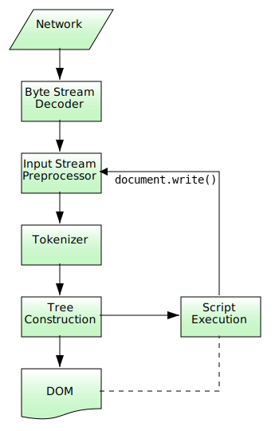

Rules for parsing and producing HTML documents.
This specification is an experimental breakup of the HTML specification. You can see the full list on the index page and take part in the discussion in the repository.
This section only applies to user agents, data mining tools, and conformance checkers.
The rules for parsing XML documents into DOM trees are covered by the next section, entitled "The XHTML syntax".
User agents must use the parsing rules described in this section to generate the DOM trees from
text/html resources. Together, these rules define what is referred to as the
HTML parser.
While the HTML syntax described in this specification bears a close resemblance to SGML and XML, it is a separate language with its own parsing rules.
Some earlier versions of HTML (in particular from HTML2 to HTML4) were based on SGML and used SGML parsing rules. However, few (if any) web browsers ever implemented true SGML parsing for HTML documents; the only user agents to strictly handle HTML as an SGML application have historically been validators. The resulting confusion — with validators claiming documents to have one representation while widely deployed Web browsers interoperably implemented a different representation — has wasted decades of productivity. This version of HTML thus returns to a non-SGML basis.
Authors interested in using SGML tools in their authoring pipeline are encouraged to use XML tools and the XML serialisation of HTML.
This specification defines the parsing rules for HTML documents, whether they are syntactically correct or not. Certain points in the parsing algorithm are said to be parse errors. The error handling for parse errors is well-defined (that's the processing rules described throughout this specification), but user agents, while parsing an HTML document, may abort the parser at the first parse error that they encounter for which they do not wish to apply the rules described in this specification.
Conformance checkers must report at least one parse error condition to the user if one or more parse error conditions exist in the document and must not report parse error conditions if none exist in the document. Conformance checkers may report more than one parse error condition if more than one parse error condition exists in the document.
Parse errors are only errors with the syntax of HTML. In addition to checking for parse errors, conformance checkers will also verify that the document obeys all the other conformance requirements described in this specification.
For the purposes of conformance checkers, if a resource is determined to be in the HTML syntax, then it is an HTML document.
As stated in the terminology
section, references to element types that do not
explicitly specify a namespace always refer to elements in the HTML namespace. For
example, if the spec talks about "a menuitem element", then that is an element with
the local name "menuitem", the namespace "http://www.w3.org/1999/xhtml", and the interface HTMLMenuItemElement.
Where possible, references to such elements are hyperlinked to their definition.

The input to the HTML parsing process consists of a stream of Unicode code points, which is passed through a tokenization stage
followed by a tree construction stage. The output is a Document
object.
Implementations that do not support scripting do not
have to actually create a DOM Document object, but the DOM tree in such cases is
still used as the model for the rest of the specification.
In the common case, the data handled by the tokenization stage comes from the network, but
it can also come from script running in the user
agent, e.g. using the document.write() API.
There is only one set of states for the tokenizer stage and the tree construction stage, but the tree construction stage is reentrant, meaning that while the tree construction stage is handling one token, the tokenizer might be resumed, causing further tokens to be emitted and processed before the first token's processing is complete.
In the following example, the tree construction stage will be called upon to handle a "p" start tag token while handling the "script" end tag token:
...
<script>
document.write('<p>');
</script>
...
To handle these cases, parsers have a script nesting level, which must be initially set to zero, and a parser pause flag, which must be initially set to false.
The stream of Unicode code points that comprises the input to the tokenization stage will be initially seen by the user agent as a stream of bytes (typically coming over the network or from the local file system). The bytes encode the actual characters according to a particular character encoding, which the user agent uses to decode the bytes into characters.
For XML documents, the algorithm user agents are required to use to determine the character encoding is given by the XML specification. This section does not apply to XML documents. [[!XML]]
Usually, the encoding sniffing algorithm defined below is used to determine the character encoding.
Given a character encoding, the bytes in the input byte stream must be converted to Unicode code points for the tokenizer's input stream, as described by the rules for that encoding's decoder.
Bytes or sequences of bytes in the original byte stream that did not conform to the Encoding standard (e.g. invalid UTF-8 byte sequences in a UTF-8 input byte stream) are errors that conformance checkers are expected to report. [[!ENCODING]]
Leading Byte Order Marks (BOMs) are not stripped by the decoder algorithms, they are stripped by the algorithm below.
The decoder algorithms describe how to handle invalid input; for security reasons, it is imperative that those rules be followed precisely. Differences in how invalid byte sequences are handled can result in, amongst other problems, script injection vulnerabilities ("XSS").
When the HTML parser is decoding an input byte stream, it uses a character encoding and a confidence. The confidence is either tentative, certain, or irrelevant. The encoding used, and whether the confidence in that encoding is tentative or certain, is used during the parsing to determine whether to change the encoding. If no encoding is necessary, e.g. because the parser is operating on a Unicode stream and doesn't have to use a character encoding at all, then the confidence is irrelevant.
Some algorithms feed the parser by directly adding characters to the input stream rather than adding bytes to the input byte stream.
When the HTML parser is to operate on an input byte stream that has a known definite encoding, then the character encoding is that encoding and the confidence is certain.
In some cases, it might be impractical to unambiguously determine the encoding before parsing the document. Because of this, this specification provides for a two-pass mechanism with an optional pre-scan. Implementations are allowed, as described below, to apply a simplified parsing algorithm to whatever bytes they have available before beginning to parse the document. Then, the real parser is started, using a tentative encoding derived from this pre-parse and other out-of-band metadata. If, while the document is being loaded, the user agent discovers a character encoding declaration that conflicts with this information, then the parser can get reinvoked to perform a parse of the document with the real encoding.
User agents must use the following algorithm, called the encoding sniffing algorithm, to determine the character encoding to use when decoding a document in the first pass. This algorithm takes as input any out-of-band metadata available to the user agent (e.g. the Content-Type metadata of the document) and all the bytes available so far, and returns a character encoding and a confidence that is either tentative or certain.
If the user has explicitly instructed the user agent to override the document's character encoding with a specific encoding, optionally return that encoding with the confidence certain and abort these steps.
Typically, user agents remember such user requests across sessions, and in some
cases apply them to documents in iframes as well.
The user agent may wait for more bytes of the resource to be available, either in this step or at any later step in this algorithm. For instance, a user agent might wait 500ms or 1024 bytes, whichever came first. In general preparsing the source to find the encoding improves performance, as it reduces the need to throw away the data structures used when parsing upon finding the encoding information. However, if the user agent delays too long to obtain data to determine the encoding, then the cost of the delay could outweigh any performance improvements from the preparse.
The authoring conformance requirements for character encoding declarations limit them to only appearing in the first 1024 bytes. User agents are therefore encouraged to use the prescan algorithm below (as invoked by these steps) on the first 1024 bytes, but not to stall beyond that.
For each of the rows in the following table, starting with the first one and going down, if there are as many or more bytes available than the number of bytes in the first column, and the first bytes of the file match the bytes given in the first column, then return the encoding given in the cell in the second column of that row, with the confidence certain, and abort these steps:
| Bytes in Hexadecimal | Encoding |
|---|---|
| FE FF | Big-endian UTF-16 |
| FF FE | Little-endian UTF-16 |
| EF BB BF | UTF-8 |
This step looks for Unicode Byte Order Marks (BOMs).
That this step happens before the next one honoring the HTTP
Content-Type header is a willful violation of the HTTP specification,
motivated by a desire to be maximally compatible with legacy content. [[!HTTP]]
If the transport layer specifies a character encoding, and it is supported, return that encoding with the confidence certain, and abort these steps.
Optionally prescan the byte stream to determine its encoding. The end condition is that the user agent decides that scanning further bytes would not be efficient. User agents are encouraged to only prescan the first 1024 bytes. User agents may decide that scanning any bytes is not efficient, in which case these substeps are entirely skipped.
The aforementioned algorithm either aborts unsuccessfully or returns a character encoding. If it returns a character encoding, then this algorithm must be aborted, returning the same encoding, with confidence tentative.
If the HTML parser for which this algorithm is being run is associated with a
Document that is itself in a nested browsing context, run these
substeps:
Let new document be the Document with which the
HTML parser is associated.
Let parent document be the Document through which new document is
nested (the active document of the parent browsing context of
new document).
If parent document's origin is not the same origin as new document's origin, then abort these substeps.
If parent document's character encoding is not an ASCII-compatible character encoding, then abort these substeps.
Return parent document's character encoding, with the confidence tentative, and abort the encoding sniffing algorithm's steps.
Otherwise, if the user agent has information on the likely encoding for this page, e.g. based on the encoding of the page when it was last visited, then return that encoding, with the confidence tentative, and abort these steps.
The user agent may attempt to autodetect the character encoding from applying frequency analysis or other algorithms to the data stream. Such algorithms may use information about the resource other than the resource's contents, including the address of the resource. If autodetection succeeds in determining a character encoding, and that encoding is a supported encoding, then return that encoding, with the confidence tentative, and abort these steps. [[UNIVCHARDET]]
User agents are generally discouraged from attempting to autodetect encodings for resources obtained over the network, since doing so involves inherently non-interoperable heuristics. Attempting to detect encodings based on an HTML document's preamble is especially tricky since HTML markup typically uses only ASCII characters, and HTML documents tend to begin with a lot of markup rather than with text content.
The UTF-8 encoding has a highly detectable bit pattern. Files from the local file system that contain bytes with values greater than 0x7F which match the UTF-8 pattern are very likely to be UTF-8, while documents with byte sequences that do not match it are very likely not. When a user agent can examine the whole file, rather than just the preamble, detecting for UTF-8 specifically can be especially effective. [[PPUTF8]] [[UTF8DET]]
Otherwise, return an implementation-defined or user-specified default character encoding, with the confidence tentative.
In controlled environments or in environments where the encoding of documents can be
prescribed (for example, for user agents intended for dedicated use in new networks), the
comprehensive UTF-8 encoding is suggested.
In other environments, the default encoding is typically dependent on the user's locale (an approximation of the languages, and thus often encodings, of the pages that the user is likely to frequent). The following table gives suggested defaults based on the user's locale, for compatibility with legacy content. Locales are identified by BCP 47 language tags. [[!BCP47]] [[!ENCODING]]
| Locale language | Suggested default encoding | |
|---|---|---|
| ar | Arabic | windows-1256 |
| ba | Bashkir | windows-1251 |
| be | Belarusian | windows-1251 |
| bg | Bulgarian | windows-1251 |
| cs | Czech | windows-1250 |
| el | Greek | ISO-8859-7 |
| et | Estonian | windows-1257 |
| fa | Persian | windows-1256 |
| he | Hebrew | windows-1255 |
| hr | Croatian | windows-1250 |
| hu | Hungarian | ISO-8859-2 |
| ja | Japanese | Shift_JIS |
| kk | Kazakh | windows-1251 |
| ko | Korean | euc-kr |
| ku | Kurdish | windows-1254 |
| ky | Kyrgyz | windows-1251 |
| lt | Lithuanian | windows-1257 |
| lv | Latvian | windows-1257 |
| mk | Macedonian | windows-1251 |
| pl | Polish | ISO-8859-2 |
| ru | Russian | windows-1251 |
| sah | Yakut | windows-1251 |
| sk | Slovak | windows-1250 |
| sl | Slovenian | ISO-8859-2 |
| sr | Serbian | windows-1251 |
| tg | Tajik | windows-1251 |
| th | Thai | windows-874 |
| tr | Turkish | windows-1254 |
| tt | Tatar | windows-1251 |
| uk | Ukrainian | windows-1251 |
| vi | Vietnamese | windows-1258 |
| zh-CN | Chinese (People's Republic of China) | GB18030 |
| zh-TW | Chinese (Taiwan) | Big5 |
| All other locales | windows-1252 | |
The contents of this table are derived from the intersection of Windows, Chrome, and Firefox defaults.
The document's character encoding must immediately be set to the value returned from this algorithm, at the same time as the user agent uses the returned value to select the decoder to use for the input byte stream.
When an algorithm requires a user agent to prescan a byte stream to determine its encoding, given some defined end condition, then it must run the following steps. These steps either abort unsuccessfully or return a character encoding. If at any point during these steps (including during instances of the get an attribute algorithm invoked by this one) the user agent either runs out of bytes (meaning the position pointer created in the first step below goes beyond the end of the byte stream obtained so far) or reaches its end condition, then abort the prescan a byte stream to determine its encoding algorithm unsuccessfully.
Let position be a pointer to a byte in the input byte stream, initially pointing at the first byte.
Loop: If position points to:
Advance the position pointer so that it points at the first 0x3E byte which is preceded by two 0x2D bytes (i.e. at the end of an ASCII '-->' sequence) and comes after the 0x3C byte that was found. (The two 0x2D bytes can be the same as the those in the '<!--' sequence.)
Advance the position pointer so that it points at the next 0x09, 0x0A, 0x0C, 0x0D, 0x20, or 0x2F byte (the one in sequence of characters matched above).
Let attribute list be an empty list of strings.
Let got pragma be false.
Let need pragma be null.
Let charset be the null value (which, for the purposes of this algorithm, is distinct from an unrecognised encoding or the empty string).
Attributes: Get an attribute and its value. If no attribute was sniffed, then jump to the processing step below.
If the attribute's name is already in attribute list, then return to the step labeled attributes.
Add the attribute's name to attribute list.
Run the appropriate step from the following list, if one applies:
http-equiv"If the attribute's value is "content-type", then set got pragma to true.
content"Apply the algorithm for extracting a character encoding from a
meta element, giving the attribute's value as the string to parse. If a
character encoding is returned, and if charset is still set to null,
let charset be the encoding returned, and set need
pragma to true.
charset"Let charset be the result of getting an encoding from the attribute's value, and set need pragma to false.
Return to the step labeled attributes.
Processing: If need pragma is null, then jump to the step below labeled next byte.
If need pragma is true but got pragma is false, then jump to the step below labeled next byte.
If charset is a UTF-16 encoding, change the value of charset to UTF-8.
If charset is the x-user-defined encoding, change the value of charset to Windows-1252. [[!ENCODING]]
If charset is not a supported character encoding, then jump to the step below labeled next byte.
Abort the prescan a byte stream to determine its encoding algorithm, returning the encoding given by charset.
Advance the position pointer so that it points at the next 0x09 (ASCII TAB), 0x0A (ASCII LF), 0x0C (ASCII FF), 0x0D (ASCII CR), 0x20 (ASCII space), or 0x3E (ASCII >) byte.
Repeatedly get an attribute until no further attributes can be found, then jump to the step below labeled next byte.
Advance the position pointer so that it points at the first 0x3E byte (ASCII >) that comes after the 0x3C byte that was found.
Do nothing with that byte.
When the prescan a byte stream to determine its encoding algorithm says to get an attribute, it means doing this:
If the byte at position is one of 0x09 (ASCII TAB), 0x0A (ASCII LF), 0x0C (ASCII FF), 0x0D (ASCII CR), 0x20 (ASCII space), or 0x2F (ASCII /) then advance position to the next byte and redo this step.
If the byte at position is 0x3E (ASCII >), then abort the get an attribute algorithm. There isn't one.
Otherwise, the byte at position is the start of the attribute name. Let attribute name and attribute value be the empty string.
Process the byte at position as follows:
Advance position to the next byte and return to the previous step.
Spaces: If the byte at position is one of 0x09 (ASCII TAB), 0x0A (ASCII LF), 0x0C (ASCII FF), 0x0D (ASCII CR), or 0x20 (ASCII space) then advance position to the next byte, then, repeat this step.
If the byte at position is not 0x3D (ASCII =), abort the get an attribute algorithm. The attribute's name is the value of attribute name, its value is the empty string.
Advance position past the 0x3D (ASCII =) byte.
Value: If the byte at position is one of 0x09 (ASCII TAB), 0x0A (ASCII LF), 0x0C (ASCII FF), 0x0D (ASCII CR), or 0x20 (ASCII space) then advance position to the next byte, then, repeat this step.
Process the byte at position as follows:
Process the byte at position as follows:
Advance position to the next byte and return to the previous step.
For the sake of interoperability, user agents should not use a pre-scan algorithm that returns different results than the one described above. (But, if you do, please at least let us know, so that we can improve this algorithm and benefit everyone...)
User agents must support the encodings defined in the WHATWG Encoding standard. User agents should not support other encodings.
User agents must not support the CESU-8, UTF-7, BOCU-1 and SCSU encodings. [[CESU8]] [[UTF7]] [[BOCU1]] [[SCSU]]
Support for encodings based on EBCDIC is especially discouraged. This encoding is rarely used for publicly-facing Web content. Support for UTF-32 is also especially discouraged. This encoding is rarely used, and frequently implemented incorrectly.
This specification does not make any attempt to support EBCDIC-based encodings and UTF-32 in its algorithms; support and use of these encodings can thus lead to unexpected behaviour in implementations of this specification.
When the parser requires the user agent to change the encoding, it must run the following steps. This might happen if the encoding sniffing algorithm described above failed to find a character encoding, or if it found a character encoding that was not the actual encoding of the file.
If the encoding that is already being used to interpret the input stream is a UTF-16 encoding, then set the confidence to certain and abort these steps. The new encoding is ignored; if it was anything but the same encoding, then it would be clearly incorrect.
If the new encoding is a UTF-16 encoding, change it to UTF-8.
If the new encoding is the x-user-defined encoding, change it to Windows-1252. [[!ENCODING]]
If the new encoding is identical or equivalent to the encoding that is already being used to interpret the input stream, then set the confidence to certain and abort these steps. This happens when the encoding information found in the file matches what the encoding sniffing algorithm determined to be the encoding, and in the second pass through the parser if the first pass found that the encoding sniffing algorithm described in the earlier section failed to find the right encoding.
If all the bytes up to the last byte converted by the current decoder have the same Unicode interpretations in both the current encoding and the new encoding, and if the user agent supports changing the converter on the fly, then the user agent may change to the new converter for the encoding on the fly. Set the document's character encoding and the encoding used to convert the input stream to the new encoding, set the confidence to certain, and abort these steps.
Otherwise, navigate to the document again, with replacement enabled, and using the same source browsing context, but this time skip the encoding sniffing algorithm and instead just set the encoding to the new encoding and the confidence to certain. Whenever possible, this should be done without actually contacting the network layer (the bytes should be re-parsed from memory), even if, e.g., the document is marked as not being cacheable. If this is not possible and contacting the network layer would involve repeating a request that uses a method other than HTTP GET (or equivalent for non-HTTP URLs), then instead set the confidence to certain and ignore the new encoding. The resource will be misinterpreted. User agents may notify the user of the situation, to aid in application development.
This algorithm is only invoked when a new encoding is found declared on a
meta element.
The input stream consists of the characters pushed into it as the input byte stream is decoded or from the various APIs that directly manipulate the input stream.
One leading U+FEFF BYTE ORDER MARK character must be ignored if any are present in the input stream.
The requirement to strip a U+FEFF BYTE ORDER MARK character regardless of whether that character was used to determine the byte order is a willful violation of Unicode, motivated by a desire to increase the resilience of user agents in the face of naïve transcoders.
Any occurrences of any characters in the ranges U+0001 to U+0008, U+000E to U+001F, U+007F to U+009F, U+FDD0 to U+FDEF, and characters U+000B, U+FFFE, U+FFFF, U+1FFFE, U+1FFFF, U+2FFFE, U+2FFFF, U+3FFFE, U+3FFFF, U+4FFFE, U+4FFFF, U+5FFFE, U+5FFFF, U+6FFFE, U+6FFFF, U+7FFFE, U+7FFFF, U+8FFFE, U+8FFFF, U+9FFFE, U+9FFFF, U+AFFFE, U+AFFFF, U+BFFFE, U+BFFFF, U+CFFFE, U+CFFFF, U+DFFFE, U+DFFFF, U+EFFFE, U+EFFFF, U+FFFFE, U+FFFFF, U+10FFFE, and U+10FFFF are parse errors. These are all control characters or permanently undefined Unicode characters (noncharacters).
Any character that is a not a Unicode character, i.e. any isolated
surrogate, is a parse error. (These can only find their way into the input stream via
script APIs such as document.write().)
U+000D CARRIAGE RETURN (CR) characters and U+000A LINE FEED (LF) characters are treated specially. Any LF character that immediately follows a CR character must be ignored, and all CR characters must then be converted to LF characters. Thus, newlines in HTML DOMs are represented by LF characters, and there are never any CR characters in the input to the tokenization stage.
The next input character is the first character in the input stream that has not yet been consumed or explicitly ignored by the requirements in this section. Initially, the next input character is the first character in the input. The current input character is the last character to have been consumed.
The insertion point is the position (just before a character or just before the end
of the input stream) where content inserted using document.write() is actually inserted. The insertion point is
relative to the position of the character immediately after it, it is not an absolute offset into
the input stream. Initially, the insertion point is undefined.
The "EOF" character in the tables below is a conceptual character representing the end of the
input stream. If the parser is a script-created parser, then the end of
the input stream is reached when an explicit "EOF" character (inserted by
the document.close() method) is consumed. Otherwise, the
"EOF" character is not a real character in the stream, but rather the lack of any further
characters.
The handling of U+0000 NULL characters varies based on where the characters are found. In general, they are ignored except where doing so could plausibly introduce an attack vector. This handling is, by necessity, spread across both the tokenization stage and the tree construction stage.
The insertion mode is a state variable that controls the primary operation of the tree construction stage.
Initially, the insertion mode is "initial". It can change to "before html", "before head", "in head", "in head noscript", "after head", "in body", "text", "in table", "in table text", "in caption", "in column group", "in table body", "in row", "in cell", "in select", "in select in table", "in template", "after body", "in frameset", "after frameset", "after after body", and "after after frameset" during the course of the parsing, as described in the tree construction stage. The insertion mode affects how tokens are processed and whether CDATA sections are supported.
Several of these modes, namely "in head", "in body", "in table", and "in select", are special, in that the other modes defer to them at various times. When the algorithm below says that the user agent is to do something "using the rules for the m insertion mode", where m is one of these modes, the user agent must use the rules described under the m insertion mode's section, but must leave the insertion mode unchanged unless the rules in m themselves switch the insertion mode to a new value.
When the insertion mode is switched to "text" or "in table text", the original insertion mode is also set. This is the insertion mode to which the tree construction stage will return.
Similarly, to parse nested template elements, a stack of template insertion
modes is used. It is initially empty. The current template insertion mode is the
insertion mode that was most recently added to the stack of template insertion modes.
The algorithms in the sections below will push insertion modes onto this stack, meaning
that the specified insertion mode is to be added to the stack, and pop insertion modes from
the stack, which means that the most recently added insertion mode must be removed from the
stack.
When the steps below require the UA to reset the insertion mode appropriately, it means the UA must follow these steps:
Let last be false.
Let node be the last node in the stack of open elements.
Loop: If node is the first node in the stack of open elements, then set last to true, and, if the parser was originally created as part of the HTML fragment parsing algorithm (fragment case), set node to the context element passed to that algorithm.
If node is a select element, run these substeps:
If last is true, jump to the step below labeled done.
Let ancestor be node.
Loop: If ancestor is the first node in the stack of open elements, jump to the step below labeled done.
Let ancestor be the node before ancestor in the stack of open elements.
If ancestor is a template node, jump to the step below
labeled done.
If ancestor is a table node, switch the insertion
mode to "in select in table" and
abort these steps.
Jump back to the step labeled loop.
Done: Switch the insertion mode to "in select" and abort these steps.
If node is a td or th element and last is false, then switch the insertion mode to "in cell" and abort these steps.
If node is a tr element, then switch the insertion
mode to "in row" and abort these
steps.
If node is a tbody, thead, or
tfoot element, then switch the insertion mode to "in table body" and abort these steps.
If node is a caption element, then switch the
insertion mode to "in caption" and
abort these steps.
If node is a colgroup element, then switch the
insertion mode to "in column
group" and abort these steps.
If node is a table element, then switch the
insertion mode to "in table" and abort
these steps.
If node is a template element, then switch the
insertion mode to the current template insertion mode and abort these
steps.
If node is a head element and last is
false, then switch the insertion mode to "in
head" and abort these steps.
If node is a body element, then switch the
insertion mode to "in body" and abort
these steps.
If node is a frameset element, then switch the
insertion mode to "in frameset" and
abort these steps. (fragment case)
If node is an html element, run these substeps:
If the head element pointer is null, switch the
insertion mode to "before head"
and abort these steps. (fragment case)
Otherwise, the head element pointer is not null, switch the
insertion mode to "after head" and
abort these steps.
If last is true, then switch the insertion mode to "in body" and abort these steps. (fragment case)
Let node now be the node before node in the stack of open elements.
Return to the step labeled loop.
Initially, the stack of open elements is empty. The stack grows downwards; the topmost node on the stack is the first one added to the stack, and the bottommost node of the stack is the most recently added node in the stack (notwithstanding when the stack is manipulated in a random access fashion as part of the handling for misnested tags).
The "before html" insertion
mode creates the html root element node, which is then added to the stack.
In the fragment case, the stack of open elements is
initialised to contain an html element that is created as part of that algorithm. (The fragment case skips the
"before html" insertion mode.)
The html node, however it is created, is the topmost node of the stack. It only
gets popped off the stack when the parser finishes.
The current node is the bottommost node in this stack of open elements.
The adjusted current node is the context element if the parser was created by the HTML fragment parsing algorithm and the stack of open elements has only one element in it (fragment case); otherwise, the adjusted current node is the current node.
Elements in the stack of open elements fall into the following categories:
The following elements have varying levels of special parsing rules: HTML's
address, applet, area, article,
aside, base, basefont, bgsound,
blockquote, body, br, button,
caption, center, col, colgroup,
dd, details, dir, div, dl,
dt, embed, fieldset, figcaption,
figure, footer, form, frame,
frameset, h1, h2, h3, h4,
h5, h6, head, header, hgroup,
hr, html, iframe,
img, input, isindex, li, link,
listing, main, marquee, menu,
menuitem, meta, nav, noembed,
noframes, noscript, object, ol,
p, param, plaintext, pre,
script, section, select, source,
style, summary, table, tbody,
td, template, textarea, tfoot,
th, thead, title, tr, track,
ul, wbr, and xmp; MathML's mi, mo, mn,
ms, mtext, and annotation-xml; and SVG's foreignObject, desc, and title.
The following HTML elements are those that end up in the list of active formatting
elements: a, b, big, code,
em, font, i, nobr, s,
small, strike, strong, tt, and
u.
All other elements found while parsing an HTML document.
The stack of open elements is said to have an element target node in a specific scope consisting of a list of element types list when the following algorithm terminates in a match state:
Initialise node to be the current node (the bottommost node of the stack).
If node is the target node, terminate in a match state.
Otherwise, if node is one of the element types in list, terminate in a failure state.
Otherwise, set node to the previous entry in the stack of open
elements and return to step 2. (This will never fail, since the loop will always terminate
in the previous step if the top of the stack — an html element — is
reached.)
The stack of open elements is said to have a particular element in scope when it has that element in the specific scope consisting of the following element types:
applet in the HTML namespacecaption in the HTML namespacehtml in the HTML namespacetable in the HTML namespacetd in the HTML namespaceth in the HTML namespacemarquee in the HTML namespaceobject in the HTML namespacetemplate in the HTML namespacemi in the MathML namespacemo in the MathML namespacemn in the MathML namespacems in the MathML namespacemtext in the MathML namespaceannotation-xml in the MathML namespaceforeignObject in the SVG namespacedesc in the SVG namespacetitle in the SVG namespaceThe stack of open elements is said to have a particular element in list item scope when it has that element in the specific scope consisting of the following element types:
ol in the HTML namespaceul in the HTML namespaceThe stack of open elements is said to have a particular element in button scope when it has that element in the specific scope consisting of the following element types:
button in the HTML namespaceThe stack of open elements is said to have a particular element in table scope when it has that element in the specific scope consisting of the following element types:
html in the HTML namespacetable in the HTML namespacetemplate in the HTML namespaceThe stack of open elements is said to have a particular element in select scope when it has that element in the specific scope consisting of all element types except the following:
optgroup in the HTML namespaceoption in the HTML namespaceNothing happens if at any time any of the elements in the stack of open elements
are moved to a new location in, or removed from, the Document tree. In particular,
the stack is not changed in this situation. This can cause, amongst other strange effects, content
to be appended to nodes that are no longer in the DOM.
In some cases (namely, when closing misnested formatting elements), the stack is manipulated in a random-access fashion.
Initially, the list of active formatting elements is empty. It is used to handle mis-nested formatting element tags.
The list contains elements in the formatting category, and markers. The markers are inserted when entering applet
elements, buttons, object elements, marquees, table cells, and table captions, and
are used to prevent formatting from "leaking" into applet elements, buttons,
object elements, marquees, and tables.
In addition, each element in the list of active formatting elements is associated with the token for which it was created, so that further elements can be created for that token if necessary.
When the steps below require the UA to push onto the list of active formatting elements an element element, the UA must perform the following steps:
If there are already three elements in the list of active formatting elements after the last marker, if any, or anywhere in the list if there are no markers, that have the same tag name, namespace, and attributes as element, then remove the earliest such element from the list of active formatting elements. For these purposes, the attributes must be compared as they were when the elements were created by the parser; two elements have the same attributes if all their parsed attributes can be paired such that the two attributes in each pair have identical names, namespaces, and values (the order of the attributes does not matter).
This is the Noah's Ark clause. But with three per family instead of two.
Add element to the list of active formatting elements.
When the steps below require the UA to reconstruct the active formatting elements, the UA must perform the following steps:
If there are no entries in the list of active formatting elements, then there is nothing to reconstruct; stop this algorithm.
If the last (most recently added) entry in the list of active formatting elements is a marker, or if it is an element that is in the stack of open elements, then there is nothing to reconstruct; stop this algorithm.
Let entry be the last (most recently added) element in the list of active formatting elements.
Rewind: If there are no entries before entry in the list of active formatting elements, then jump to the step labeled create.
Let entry be the entry one earlier than entry in the list of active formatting elements.
If entry is neither a marker nor an element that is also in the stack of open elements, go to the step labeled rewind.
Advance: Let entry be the element one later than entry in the list of active formatting elements.
Create: Insert an HTML element for the token for which the element entry was created, to obtain new element.
Replace the entry for entry in the list with an entry for new element.
If the entry for new element in the list of active formatting elements is not the last entry in the list, return to the step labeled advance.
This has the effect of reopening all the formatting elements that were opened in the current body, cell, or caption (whichever is youngest) that haven't been explicitly closed.
The way this specification is written, the list of active formatting elements always consists of elements in chronological order with the least recently added element first and the most recently added element last (except for while steps 8 to 11 of the above algorithm are being executed, of course).
When the steps below require the UA to clear the list of active formatting elements up to the last marker, the UA must perform the following steps:
Let entry be the last (most recently added) entry in the list of active formatting elements.
Remove entry from the list of active formatting elements.
If entry was a marker, then stop the algorithm at this point. The list has been cleared up to the last marker.
Go to step 1.
Initially, the head element pointer and the form element pointer are both null.
Once a head element has been parsed (whether implicitly or explicitly) the
head element pointer gets set to point to this node.
The form element pointer points to the last
form element that was opened and whose end tag has not yet been seen. It is used to
make form controls associate with forms in the face of dramatically bad markup, for historical
reasons. It is ignored inside template elements.
The scripting flag is set to "enabled" if scripting
was enabled for the Document with which the parser is associated when the
parser was created, and "disabled" otherwise.
The scripting flag can be enabled even when the parser was originally
created for the HTML fragment parsing algorithm, even though script
elements don't execute in that case.
The frameset-ok flag is set to "ok" when the parser is created. It is set to "not ok" after certain tokens are seen.
Implementations must act as if they used the following state machine to tokenise HTML. The state machine must start in the data state. Most states consume a single character, which may have various side-effects, and either switches the state machine to a new state to reconsume the same character, or switches it to a new state to consume the next character, or stays in the same state to consume the next character. Some states have more complicated behaviour and can consume several characters before switching to another state. In some cases, the tokenizer state is also changed by the tree construction stage.
The exact behaviour of certain states depends on the insertion mode and the stack of open elements. Certain states also use a temporary buffer to track progress.
The output of the tokenization step is a series of zero or more of the following tokens: DOCTYPE, start tag, end tag, comment, character, end-of-file. DOCTYPE tokens have a name, a public identifier, a system identifier, and a force-quirks flag. When a DOCTYPE token is created, its name, public identifier, and system identifier must be marked as missing (which is a distinct state from the empty string), and the force-quirks flag must be set to off (its other state is on). Start and end tag tokens have a tag name, a self-closing flag, and a list of attributes, each of which has a name and a value. When a start or end tag token is created, its self-closing flag must be unset (its other state is that it be set), and its attributes list must be empty. Comment and character tokens have data.
When a token is emitted, it must immediately be handled by the tree construction
stage. The tree construction stage can affect the state of the tokenization stage, and can insert
additional characters into the stream. (For example, the script element can result in
scripts executing and using the dynamic markup insertion APIs to insert characters
into the stream being tokenized.)
Creating a token and emitting it are distinct actions. It is possible for a token to be created but implicitly abandoned (never emitted), e.g. if the file ends unexpectedly while processing the characters that are being parsed into a start tag token.
When a start tag token is emitted with its self-closing flag set, if the flag is not acknowledged when it is processed by the tree construction stage, that is a parse error.
When an end tag token is emitted with attributes, that is a parse error.
When an end tag token is emitted with its self-closing flag set, that is a parse error.
An appropriate end tag token is an end tag token whose tag name matches the tag name of the last start tag to have been emitted from this tokenizer, if any. If no start tag has been emitted from this tokenizer, then no end tag token is appropriate.
Before each step of the tokenizer, the user agent must first check the parser pause flag. If it is true, then the tokenizer must abort the processing of any nested invocations of the tokenizer, yielding control back to the caller.
The tokenizer state machine consists of the states defined in the following subsections.
Consume the next input character:
Switch to the data state.
Attempt to consume a character reference, with no additional allowed character.
If nothing is returned, emit a U+0026 AMPERSAND character (&) token.
Otherwise, emit the character tokens that were returned.
Consume the next input character:
Switch to the RCDATA state.
Attempt to consume a character reference, with no additional allowed character.
If nothing is returned, emit a U+0026 AMPERSAND character (&) token.
Otherwise, emit the character tokens that were returned.
Consume the next input character:
Consume the next input character:
Consume the next input character:
Consume the next input character:
Consume the next input character:
Consume the next input character:
Consume the next input character:
Consume the next input character:
Consume the next input character:
Consume the next input character:
Consume the next input character:
Consume the next input character:
Consume the next input character:
Consume the next input character:
Consume the next input character:
Consume the next input character:
Consume the next input character:
Consume the next input character:
Consume the next input character:
Consume the next input character:
Consume the next input character:
Consume the next input character:
Consume the next input character:
Consume the next input character:
script", then switch to the script data double escaped state.
Otherwise, switch to the script data escaped state. Emit the current input
character as a character token.Consume the next input character:
Consume the next input character:
Consume the next input character:
Consume the next input character:
Consume the next input character:
script", then switch to the script data escaped state. Otherwise,
switch to the script data double escaped state. Emit the current input
character as a character token.Consume the next input character:
Consume the next input character:
When the user agent leaves the attribute name state (and before emitting the tag token, if appropriate), the complete attribute's name must be compared to the other attributes on the same token; if there is already an attribute on the token with the exact same name, then this is a parse error and the new attribute must be removed from the token.
If an attribute is so removed from a token, it, and the value that gets associated with it, if any, are never subsequently used by the parser, and are therefore effectively discarded. Removing the attribute in this way does not change its status as the "current attribute" for the purposes of the tokenizer, however.
Consume the next input character:
Consume the next input character:
Consume the next input character:
Consume the next input character:
Consume the next input character:
Attempt to consume a character reference.
If nothing is returned, append a U+0026 AMPERSAND character (&) to the current attribute's value.
Otherwise, append the returned character tokens to the current attribute's value.
Finally, switch back to the attribute value state that switched into this state.
Consume the next input character:
Consume the next input character:
Consume every character up to and including the first U+003E GREATER-THAN SIGN character (>)
or the end of the file (EOF), whichever comes first.
If more than one character was consumed, then emit a comment token whose data is the
concatenation of all the characters starting from and including the character that caused the
state machine to switch into the bogus comment state, up to and including the character
immediately before the last consumed character (i.e. up to the character just before the U+003E or
EOF character), but with any U+0000 NULL characters replaced by U+FFFD REPLACEMENT CHARACTER
characters. (If the comment was started by the end of the file (EOF), the token is empty.
Similarly, the token is empty if it was generated by the string "<!>".)
Switch to the data state.
If the end of the file was reached, reconsume the EOF character.
If the next two characters are both U+002D HYPHEN-MINUS characters (-), consume those two characters, create a comment token whose data is the empty string, and switch to the comment start state.
Otherwise, if the next seven characters are an ASCII case-insensitive match for the word "DOCTYPE", then consume those characters and switch to the DOCTYPE state.
Otherwise, if there is an adjusted current node and it is not an element in the HTML namespace and the next seven characters are a case-sensitive match for the string "[CDATA[" (the five uppercase letters "CDATA" with a U+005B LEFT SQUARE BRACKET character before and after), then consume those characters and switch to the CDATA section state.
Otherwise, this is a parse error. Switch to the bogus comment state. The next character that is consumed, if any, is the first character that will be in the comment.
Consume the next input character:
Consume the next input character:
Consume the next input character:
Consume the next input character:
Consume the next input character:
Consume the next input character:
Consume the next input character:
Consume the next input character:
Consume the next input character:
Consume the next input character:
If the six characters starting from the current input character are an ASCII case-insensitive match for the word "PUBLIC", then consume those characters and switch to the after DOCTYPE public keyword state.
Otherwise, if the six characters starting from the current input character are an ASCII case-insensitive match for the word "SYSTEM", then consume those characters and switch to the after DOCTYPE system keyword state.
Otherwise, this is a parse error. Set the DOCTYPE token's force-quirks flag to on. Switch to the bogus DOCTYPE state.
Consume the next input character:
Consume the next input character:
Consume the next input character:
Consume the next input character:
Consume the next input character:
Consume the next input character:
Consume the next input character:
Consume the next input character:
Consume the next input character:
Consume the next input character:
Consume the next input character:
Consume the next input character:
Switch to the data state.
Consume every character up to the next occurrence of the three character sequence U+005D RIGHT
SQUARE BRACKET U+005D RIGHT SQUARE BRACKET U+003E GREATER-THAN SIGN (]]>),
or the end of the file (EOF), whichever comes first. Emit a series of character tokens consisting
of all the characters consumed except the matching three character sequence at the end (if one was
found before the end of the file).
If the end of the file was reached, reconsume the EOF character.
This section defines how to consume a character reference, optionally with an additional allowed character, which, if specified where the algorithm is invoked, adds a character to the list of characters that cause there to not be a character reference.
This definition is used when parsing character references in text and in attributes.
The behaviour depends on the identity of the next character (the one immediately after the U+0026 AMPERSAND character), as follows:
Consume the U+0023 NUMBER SIGN.
The behaviour further depends on the character after the U+0023 NUMBER SIGN:
Consume the X.
Follow the steps below, but using ASCII hex digits.
When it comes to interpreting the number, interpret it as a hexadecimal number.
Follow the steps below, but using ASCII digits.
When it comes to interpreting the number, interpret it as a decimal number.
Consume as many characters as match the range of characters given above (ASCII hex digits or ASCII digits).
If no characters match the range, then don't consume any characters (and unconsume the U+0023 NUMBER SIGN character and, if appropriate, the X character). This is a parse error; nothing is returned.
Otherwise, if the next character is a U+003B SEMICOLON, consume that too. If it isn't, there is a parse error.
If one or more characters match the range, then take them all and interpret the string of characters as a number (either hexadecimal or decimal as appropriate).
If that number is one of the numbers in the first column of the following table, then this is a parse error. Find the row with that number in the first column, and return a character token for the Unicode character given in the second column of that row.
| Number | Unicode character | |
|---|---|---|
| 0x00 | U+FFFD | REPLACEMENT CHARACTER |
| 0x80 | U+20AC | EURO SIGN (€) |
| 0x82 | U+201A | SINGLE LOW-9 QUOTATION MARK (‚) |
| 0x83 | U+0192 | LATIN SMALL LETTER F WITH HOOK (ƒ) |
| 0x84 | U+201E | DOUBLE LOW-9 QUOTATION MARK („) |
| 0x85 | U+2026 | HORIZONTAL ELLIPSIS (…) |
| 0x86 | U+2020 | DAGGER (†) |
| 0x87 | U+2021 | DOUBLE DAGGER (‡) |
| 0x88 | U+02C6 | MODIFIER LETTER CIRCUMFLEX ACCENT (ˆ) |
| 0x89 | U+2030 | PER MILLE SIGN (‰) |
| 0x8A | U+0160 | LATIN CAPITAL LETTER S WITH CARON (Š) |
| 0x8B | U+2039 | SINGLE LEFT-POINTING ANGLE QUOTATION MARK (‹) |
| 0x8C | U+0152 | LATIN CAPITAL LIGATURE OE (Œ) |
| 0x8E | U+017D | LATIN CAPITAL LETTER Z WITH CARON (Ž) |
| 0x91 | U+2018 | LEFT SINGLE QUOTATION MARK (‘) |
| 0x92 | U+2019 | RIGHT SINGLE QUOTATION MARK (’) |
| 0x93 | U+201C | LEFT DOUBLE QUOTATION MARK (“) |
| 0x94 | U+201D | RIGHT DOUBLE QUOTATION MARK (”) |
| 0x95 | U+2022 | BULLET (•) |
| 0x96 | U+2013 | EN DASH (–) |
| 0x97 | U+2014 | EM DASH (—) |
| 0x98 | U+02DC | SMALL TILDE (˜) |
| 0x99 | U+2122 | TRADE MARK SIGN (™) |
| 0x9A | U+0161 | LATIN SMALL LETTER S WITH CARON (š) |
| 0x9B | U+203A | SINGLE RIGHT-POINTING ANGLE QUOTATION MARK (›) |
| 0x9C | U+0153 | LATIN SMALL LIGATURE OE (œ) |
| 0x9E | U+017E | LATIN SMALL LETTER Z WITH CARON (ž) |
| 0x9F | U+0178 | LATIN CAPITAL LETTER Y WITH DIAERESIS (Ÿ) |
Otherwise, if the number is in the range 0xD800 to 0xDFFF or is greater than 0x10FFFF, then this is a parse error. Return a U+FFFD REPLACEMENT CHARACTER character token.
Otherwise, return a character token for the Unicode character whose code point is that number. Additionally, if the number is in the range 0x0001 to 0x0008, 0x000D to 0x001F, 0x007F to 0x009F, 0xFDD0 to 0xFDEF, or is one of 0x000B, 0xFFFE, 0xFFFF, 0x1FFFE, 0x1FFFF, 0x2FFFE, 0x2FFFF, 0x3FFFE, 0x3FFFF, 0x4FFFE, 0x4FFFF, 0x5FFFE, 0x5FFFF, 0x6FFFE, 0x6FFFF, 0x7FFFE, 0x7FFFF, 0x8FFFE, 0x8FFFF, 0x9FFFE, 0x9FFFF, 0xAFFFE, 0xAFFFF, 0xBFFFE, 0xBFFFF, 0xCFFFE, 0xCFFFF, 0xDFFFE, 0xDFFFF, 0xEFFFE, 0xEFFFF, 0xFFFFE, 0xFFFFF, 0x10FFFE, or 0x10FFFF, then this is a parse error.
Consume the maximum number of characters possible, with the consumed characters matching one of the identifiers in the first column of the named character references table (in a case-sensitive manner).
If no match can be made, then no characters are consumed, and nothing is returned. In this case, if the characters after the U+0026 AMPERSAND character (&) consist of a sequence of one or more alphanumeric ASCII characters followed by a U+003B SEMICOLON character (;), then this is a parse error.
If the character reference is being consumed as part of an attribute, and the last character matched is not a U+003B SEMICOLON character (;), and the next character is either a U+003D EQUALS SIGN character (=) or an alphanumeric ASCII character, then, for historical reasons, all the characters that were matched after the U+0026 AMPERSAND character (&) must be unconsumed, and nothing is returned. However, if this next character is in fact a U+003D EQUALS SIGN character (=), then this is a parse error, because some legacy user agents will misinterpret the markup in those cases.
Otherwise, a character reference is parsed. If the last character matched is not a U+003B SEMICOLON character (;), there is a parse error.
Return one or two character tokens for the character(s) corresponding to the character reference name (as given by the second column of the named character references table).
If the markup contains (not in an attribute) the string I'm ¬it; I
tell you, the character reference is parsed as "not", as in, I'm ¬it;
I tell you (and this is a parse error). But if the markup was I'm
∉ I tell you, the character reference would be parsed as "notin;", resulting
in I'm ∉ I tell you (and no parse error).
The input to the tree construction stage is a sequence of tokens from the
tokenization stage. The tree construction stage is associated with a DOM
Document object when a parser is created. The "output" of this stage consists of
dynamically modifying or extending that document's DOM tree.
This specification does not define when an interactive user agent has to render the
Document so that it is available to the user, or when it has to begin accepting user
input.
As each token is emitted from the tokenizer, the user agent must follow the appropriate steps from the following list, known as the tree construction dispatcher:
annotation-xml element in the MathML namespace and the token is a start tag whose tag name is "svg"The next token is the token that is about to be processed by the tree construction dispatcher (even if the token is subsequently just ignored).
A node is a MathML text integration point if it is one of the following elements:
mi element in the MathML namespacemo element in the MathML namespacemn element in the MathML namespacems element in the MathML namespacemtext element in the MathML namespaceA node is an HTML integration point if it is one of the following elements:
annotation-xml element in the MathML
namespace whose start tag token had an attribute with the name "encoding" whose value was
an ASCII case-insensitive match for the string "text/html"annotation-xml element in the MathML
namespace whose start tag token had an attribute with the name "encoding" whose value was
an ASCII case-insensitive match for the string "application/xhtml+xml"foreignObject element in the SVG namespacedesc element in the SVG namespacetitle element in the SVG namespaceIf the node in question is the context element passed to the HTML fragment parsing algorithm, then the start tag token for that element is the "fake" token created during by that HTML fragment parsing algorithm.
Not all of the tag names mentioned below are conformant tag names in this specification; many are included to handle legacy content. They still form part of the algorithm that implementations are required to implement to claim conformance.
The algorithm described below places no limit on the depth of the DOM tree
generated, or on the length of tag names, attribute names, attribute values, Text
nodes, etc. While implementors are encouraged to avoid arbitrary limits, it is recognised that practical concerns will likely force user agents to impose nesting
depth constraints.
While the parser is processing a token, it can enable or disable foster parenting. This affects the following algorithm.
The appropriate place for inserting a node, optionally using a particular override target, is the position in an element returned by running the following steps:
If there was an override target specified, then let target be the override target.
Otherwise, let target be the current node.
Determine the adjusted insertion location using the first matching steps from the following list:
table, tbody, tfoot,
thead, or tr elementFoster parenting happens when content is misnested in tables.
Run these substeps:
Let last template be the last template element in the
stack of open elements, if any.
Let last table be the last table element in the
stack of open elements, if any.
If there is a last template and either there is no last table, or there is one, but last template is lower (more recently added) than last table in the stack of open elements, then: let adjusted insertion location be inside last template's template contents, after its last child (if any), and abort these substeps.
If there is no last table, then let adjusted insertion
location be inside the first element in the stack of open elements (the
html element), after its last child (if any), and abort these substeps.
(fragment case)
If last table has a parent node, then let adjusted insertion location be inside last table's parent node, immediately before last table, and abort these substeps.
Let previous element be the element immediately above last table in the stack of open elements.
Let adjusted insertion location be inside previous element, after its last child (if any).
These steps are involved in part because it's possible for elements, the
table element in this case in particular, to have been moved by a script around
in the DOM, or indeed removed from the DOM entirely, after the element was inserted by the
parser.
Let adjusted insertion location be inside target, after its last child (if any).
If the adjusted insertion location is inside a template
element, let it instead be inside the template element's template
contents, after its last child (if any).
Return the adjusted insertion location.
When the steps below require the UA to create an element for a token in a particular given namespace and with a particular intended parent, the UA must run the following steps:
Create a node implementing the interface appropriate for the element type corresponding to
the tag name of the token in given namespace (as given in the specification
that defines that element, e.g. for an a element in the HTML
namespace, this specification defines it to be the HTMLAnchorElement
interface), with the tag name being the name of that element, with the node being in the given
namespace, and with the attributes on the node being those given in the given token.
The interface appropriate for an element in the HTML namespace that is not
defined in this specification (or other applicable specifications) is
HTMLUnknownElement. Elements in other namespaces whose interface is not defined by
that namespace's specification must use the interface Element.
The node document of the newly created element must be the node document of the intended parent.
If the newly created element has an xmlns attribute in the
XMLNS namespace whose value is not exactly the same as the element's namespace,
that is a parse error. Similarly, if the newly created element has an xmlns:xlink attribute in the XMLNS namespace whose value is not the
XLink Namespace, that is a parse error.
If the newly created element is a resettable element, invoke its reset algorithm. (This initialises the element's value and checkedness based on the element's attributes.)
If the element is a form-associated element, and the form element pointer is not null, and there is no template
element on the stack of open elements, and the newly created element is either not
reassociateable or doesn't have a form attribute, and the intended parent is in
the same home subtree as the element pointed to by the form element pointer, associate the newly created element with the
form element pointed to by the form element
pointer, and suppress the running of the reset the form owner algorithm when
the parser subsequently attempts to insert the element.
Return the newly created element.
When the steps below require the user agent to insert a foreign element for a token in a given namespace, the user agent must run these steps:
Let the adjusted insertion location be the appropriate place for inserting a node.
Create an element for the token in the given namespace, with the intended parent being the element in which the adjusted insertion location finds itself.
If it is possible to insert an element at the adjusted insertion location, then insert the newly created element at the adjusted insertion location.
If the adjusted insertion location cannot accept more
elements, e.g. because it's a Document that already has an element child, then the
newly created element is dropped on the floor.
Push the element onto the stack of open elements so that it is the new current node.
Return the newly created element.
When the steps below require the user agent to insert an HTML element for a token, the user agent must insert a foreign element for the token, in the HTML namespace.
When the steps below require the user agent to adjust MathML attributes for a token,
then, if the token has an attribute named definitionurl, change its name to
definitionURL (note the case difference).
When the steps below require the user agent to adjust SVG attributes for a token, then, for each attribute on the token whose attribute name is one of the ones in the first column of the following table, change the attribute's name to the name given in the corresponding cell in the second column. (This fixes the case of SVG attributes that are not all lowercase.)
| Attribute name on token | Attribute name on element |
|---|---|
attributename | attributeName
|
attributetype | attributeType
|
basefrequency | baseFrequency
|
baseprofile | baseProfile
|
calcmode | calcMode
|
clippathunits | clipPathUnits
|
diffuseconstant | diffuseConstant
|
edgemode | edgeMode
|
filterunits | filterUnits
|
glyphref | glyphRef
|
gradienttransform | gradientTransform
|
gradientunits | gradientUnits
|
kernelmatrix | kernelMatrix
|
kernelunitlength | kernelUnitLength
|
keypoints | keyPoints
|
keysplines | keySplines
|
keytimes | keyTimes
|
lengthadjust | lengthAdjust
|
limitingconeangle | limitingConeAngle
|
markerheight | markerHeight
|
markerunits | markerUnits
|
markerwidth | markerWidth
|
maskcontentunits | maskContentUnits
|
maskunits | maskUnits
|
numoctaves | numOctaves
|
pathlength | pathLength
|
patterncontentunits | patternContentUnits
|
patterntransform | patternTransform
|
patternunits | patternUnits
|
pointsatx | pointsAtX
|
pointsaty | pointsAtY
|
pointsatz | pointsAtZ
|
preservealpha | preserveAlpha
|
preserveaspectratio | preserveAspectRatio
|
primitiveunits | primitiveUnits
|
refx | refX
|
refy | refY
|
repeatcount | repeatCount
|
repeatdur | repeatDur
|
requiredextensions | requiredExtensions
|
requiredfeatures | requiredFeatures
|
specularconstant | specularConstant
|
specularexponent | specularExponent
|
spreadmethod | spreadMethod
|
startoffset | startOffset
|
stddeviation | stdDeviation
|
stitchtiles | stitchTiles
|
surfacescale | surfaceScale
|
systemlanguage | systemLanguage
|
tablevalues | tableValues
|
targetx | targetX
|
targety | targetY
|
textlength | textLength
|
viewbox | viewBox
|
viewtarget | viewTarget
|
xchannelselector | xChannelSelector
|
ychannelselector | yChannelSelector
|
zoomandpan | zoomAndPan
|
When the steps below require the user agent to adjust foreign attributes for a
token, then, if any of the attributes on the token match the strings given in the first column of
the following table, let the attribute be a namespaced attribute, with the prefix being the string
given in the corresponding cell in the second column, the local name being the string given in the
corresponding cell in the third column, and the namespace being the namespace given in the
corresponding cell in the fourth column. (This fixes the use of namespaced attributes, in
particular lang attributes in the XML
namespace.)
| Attribute name | Prefix | Local name | Namespace |
|---|---|---|---|
xlink:actuate | xlink | actuate | XLink namespace |
xlink:arcrole | xlink | arcrole | XLink namespace |
xlink:href | xlink | href | XLink namespace |
xlink:role | xlink | role | XLink namespace |
xlink:show | xlink | show | XLink namespace |
xlink:title | xlink | title | XLink namespace |
xlink:type | xlink | type | XLink namespace |
xml:base | xml | base | XML namespace |
xml:lang | xml | lang | XML namespace |
xml:space | xml | space | XML namespace |
xmlns | (none) | xmlns | XMLNS namespace |
xmlns:xlink | xmlns | xlink | XMLNS namespace |
When the steps below require the user agent to insert a character while processing a token, the user agent must run the following steps:
Let data be the characters passed to the algorithm, or, if no characters were explicitly specified, the character of the character token being processed.
Let the adjusted insertion location be the appropriate place for inserting a node.
If the adjusted insertion location is in a Document node,
then abort these steps.
The DOM will not let Document nodes have Text node
children, so they are dropped on the floor.
If there is a Text node immediately before the adjusted insertion
location, then append data to that Text node's data.
Otherwise, create a new Text node whose data is data and
whose node document is the same as that of the
element in which the adjusted insertion location finds itself, and insert
the newly created node at the adjusted insertion location.
Here are some sample inputs to the parser and the corresponding number of Text
nodes that they result in, assuming a user agent that executes scripts.
| Input | Number of Text nodes
|
|---|---|
A<script>
var script = document.getElementsByTagName('script')[0];
document.body.removeChild(script);
</script>B
| One Text node in the document, containing "AB".
|
A<script>
var text = document.createTextNode('B');
document.body.appendChild(text);
</script>C
| Three Text nodes; "A" before the script, the script's contents, and "BC" after the script (the parser appends to the Text node created by the script).
|
A<script>
var text = document.getElementsByTagName('script')[0].firstChild;
text.data = 'B';
document.body.appendChild(text);
</script>C
| Two adjacent Text nodes in the document, containing "A" and "BC".
|
A<table>B<tr>C</tr>D</table> | One Text node before the table, containing "ABCD". (This is caused by foster parenting.)
|
A<table><tr> B</tr> C</table> | One Text node before the table, containing "A B C" (A-space-B-space-C). (This is caused by foster parenting.)
|
A<table><tr> B</tr> </em>C</table> | One Text node before the table, containing "A BC" (A-space-B-C), and one Text node inside the table (as a child of a tbody) with a single space character. (Space characters separated from non-space characters by non-character tokens are not affected by foster parenting, even if those other tokens then get ignored.)
|
When the steps below require the user agent to insert a comment while processing a comment token, optionally with an explicitly insertion position position, the user agent must run the following steps:
Let data be the data given in the comment token being processed.
If position was specified, then let the adjusted insertion location be position. Otherwise, let adjusted insertion location be the appropriate place for inserting a node.
Create a Comment node whose data attribute is set to
data and whose node document is
the same as that of the node in which the adjusted insertion location finds
itself.
Insert the newly created node at the adjusted insertion location.
DOM mutation events must not fire for changes caused by the UA
parsing the document. This includes the parsing of any content inserted using document.write() and document.writeln() calls. [[!DOMEVENTS]]
However, mutation observers do fire, as required by the DOM specification.
The generic raw text element parsing algorithm and the generic RCDATA element parsing algorithm consist of the following steps. These algorithms are always invoked in response to a start tag token.
Insert an HTML element for the token.
If the algorithm that was invoked is the generic raw text element parsing algorithm, switch the tokenizer to the RAWTEXT state; otherwise the algorithm invoked was the generic RCDATA element parsing algorithm, switch the tokenizer to the RCDATA state.
Let the original insertion mode be the current insertion mode.
Then, switch the insertion mode to "text".
When the steps below require the UA to generate implied end
tags, then, while the current node is a
dd element, a dt element, an
li element, an option element, an
optgroup element, a p element, an
rb element, an rp element, an rt
element, or an rtc element, the UA must
pop the current node off the stack of open
elements.
If a step requires the UA to generate implied end tags but lists an element to exclude from the process, then the UA must perform the above steps as if that element was not in the above list.
When the steps below require the UA to generate all implied end tags thoroughly,
then, while the current node is a caption element, a
colgroup element, a dd element, a dt element, an
li element, an option element, an optgroup element, a
p element, an rb element, an rp element, an rt element, an rtc element, a
tbody element, a td element, a tfoot element, a
th element, a thead element, or a tr element, the UA must
pop the current node off the stack of open elements.
When the user agent is to apply the rules for the "initial" insertion mode, the user agent must handle the token as follows:
Ignore the token.
Insert a comment as the last child of the Document object.
If the DOCTYPE token's name is not a case-sensitive match for the string "html", or the token's public identifier is not missing, or the token's system
identifier is neither missing nor a case-sensitive match for the string
"about:legacy-compat", and none of the sets of conditions in the following list are
matched, then there is a parse error.
html", the token's public identifier is the case-sensitive string
"-//W3C//DTD HTML 4.0//EN", and the token's system identifier
is either missing or the case-sensitive string "http://www.w3.org/TR/REC-html40/strict.dtd".html", the token's public identifier is the case-sensitive string
"-//W3C//DTD HTML 4.01//EN", and the token's system identifier
is either missing or the case-sensitive string "http://www.w3.org/TR/html4/strict.dtd".html", the token's public identifier is the case-sensitive string
"-//W3C//DTD XHTML 1.0 Strict//EN", and the token's system
identifier is the case-sensitive string "http://www.w3.org/TR/xhtml1/DTD/xhtml1-strict.dtd".html", the token's public identifier is the case-sensitive string
"-//W3C//DTD XHTML 1.1//EN", and the token's system identifier
is the case-sensitive string "http://www.w3.org/TR/xhtml11/DTD/xhtml11.dtd".Conformance checkers may, based on the values (including presence or lack thereof) of the DOCTYPE token's name, public identifier, or system identifier, switch to a conformance checking mode for another language (e.g. based on the DOCTYPE token a conformance checker could recognise that the document is an HTML4-era document, and defer to an HTML4 conformance checker.)
Append a DocumentType node to the Document node, with the name attribute set to the name given in the DOCTYPE token, or the empty string
if the name was missing; the publicId attribute set to the public
identifier given in the DOCTYPE token, or the empty string if the public identifier was missing;
the systemId attribute set to the system identifier given in the DOCTYPE
token, or the empty string if the system identifier was missing; and the other attributes
specific to DocumentType objects set to null and empty lists as appropriate.
Associate the DocumentType node with the Document object so that it is
returned as the value of the doctype attribute of the
Document object.
Then, if the document is not an iframe
srcdoc document, and the DOCTYPE token matches
one of the conditions in the following list, then set the Document to quirks
mode:
html" (compared case-sensitively). -//W3O//DTD W3 HTML Strict 3.0//EN//" -/W3C/DTD HTML 4.0 Transitional/EN" HTML" http://www.ibm.com/data/dtd/v11/ibmxhtml1-transitional.dtd" +//Silmaril//dtd html Pro v0r11 19970101//" -//AS//DTD HTML 3.0 asWedit + extensions//" -//AdvaSoft Ltd//DTD HTML 3.0 asWedit + extensions//" -//IETF//DTD HTML 2.0 Level 1//" -//IETF//DTD HTML 2.0 Level 2//" -//IETF//DTD HTML 2.0 Strict Level 1//" -//IETF//DTD HTML 2.0 Strict Level 2//" -//IETF//DTD HTML 2.0 Strict//" -//IETF//DTD HTML 2.0//" -//IETF//DTD HTML 2.1E//" -//IETF//DTD HTML 3.0//" -//IETF//DTD HTML 3.2 Final//" -//IETF//DTD HTML 3.2//" -//IETF//DTD HTML 3//" -//IETF//DTD HTML Level 0//" -//IETF//DTD HTML Level 1//" -//IETF//DTD HTML Level 2//" -//IETF//DTD HTML Level 3//" -//IETF//DTD HTML Strict Level 0//" -//IETF//DTD HTML Strict Level 1//" -//IETF//DTD HTML Strict Level 2//" -//IETF//DTD HTML Strict Level 3//" -//IETF//DTD HTML Strict//" -//IETF//DTD HTML//" -//Metrius//DTD Metrius Presentational//" -//Microsoft//DTD Internet Explorer 2.0 HTML Strict//" -//Microsoft//DTD Internet Explorer 2.0 HTML//" -//Microsoft//DTD Internet Explorer 2.0 Tables//" -//Microsoft//DTD Internet Explorer 3.0 HTML Strict//" -//Microsoft//DTD Internet Explorer 3.0 HTML//" -//Microsoft//DTD Internet Explorer 3.0 Tables//" -//Netscape Comm. Corp.//DTD HTML//" -//Netscape Comm. Corp.//DTD Strict HTML//" -//O'Reilly and Associates//DTD HTML 2.0//" -//O'Reilly and Associates//DTD HTML Extended 1.0//" -//O'Reilly and Associates//DTD HTML Extended Relaxed 1.0//" -//SQ//DTD HTML 2.0 HoTMetaL + extensions//" -//SoftQuad Software//DTD HoTMetaL PRO 6.0::19990601::extensions to HTML 4.0//" -//SoftQuad//DTD HoTMetaL PRO 4.0::19971010::extensions to HTML 4.0//" -//Spyglass//DTD HTML 2.0 Extended//" -//Sun Microsystems Corp.//DTD HotJava HTML//" -//Sun Microsystems Corp.//DTD HotJava Strict HTML//" -//W3C//DTD HTML 3 1995-03-24//" -//W3C//DTD HTML 3.2 Draft//" -//W3C//DTD HTML 3.2 Final//" -//W3C//DTD HTML 3.2//" -//W3C//DTD HTML 3.2S Draft//" -//W3C//DTD HTML 4.0 Frameset//" -//W3C//DTD HTML 4.0 Transitional//" -//W3C//DTD HTML Experimental 19960712//" -//W3C//DTD HTML Experimental 970421//" -//W3C//DTD W3 HTML//" -//W3O//DTD W3 HTML 3.0//" -//WebTechs//DTD Mozilla HTML 2.0//" -//WebTechs//DTD Mozilla HTML//" -//W3C//DTD HTML 4.01 Frameset//" -//W3C//DTD HTML 4.01 Transitional//" Otherwise, if the document is not an iframe srcdoc document, and the DOCTYPE token matches one of
the conditions in the following list, then set the Document to limited-quirks
mode:
-//W3C//DTD XHTML 1.0 Frameset//" -//W3C//DTD XHTML 1.0 Transitional//" -//W3C//DTD HTML 4.01 Frameset//" -//W3C//DTD HTML 4.01 Transitional//" The system identifier and public identifier strings must be compared to the values given in the lists above in an ASCII case-insensitive manner. A system identifier whose value is the empty string is not considered missing for the purposes of the conditions above.
Then, switch the insertion mode to "before html".
If the document is not an iframe srcdoc document, then this is a parse
error; set the Document to quirks mode.
In any case, switch the insertion mode to "before html", then reprocess the token.
When the user agent is to apply the rules for the "before html" insertion mode, the user agent must handle the token as follows:
Parse error. Ignore the token.
Insert a comment as the last child of the Document object.
Ignore the token.
Create an element for the token in the HTML namespace, with the
Document as the intended parent. Append it to the Document object. Put
this element in the stack of open elements.
If the Document is being loaded as part of navigation of a browsing context, then: if the newly
created element has a manifest attribute whose value is
not the empty string, then resolve the value of that
attribute to an absolute URL, relative to the newly created element, and if that is
successful, run the application cache selection
algorithm with the result of applying the URL
serialiser algorithm to the resulting parsed URL with the exclude
fragment flag set; otherwise, if there is no such attribute, or its value is the empty
string, or resolving its value fails, run the application
cache selection algorithm with no manifest. The algorithm must be passed the
Document object.
Switch the insertion mode to "before head".
Act as described in the "anything else" entry below.
Parse error. Ignore the token.
Create an html element whose node document is the Document object. Append
it to the Document object. Put this element in the stack of open
elements.
If the Document is being loaded as part of navigation of a browsing context, then: run the application cache selection algorithm with no manifest,
passing it the Document object.
Switch the insertion mode to "before head", then reprocess the token.
The root element can end up being removed from the Document object, e.g. by
scripts; nothing in particular happens in such cases, content continues being appended to the
nodes as described in the next section.
When the user agent is to apply the rules for the "before head" insertion mode, the user agent must handle the token as follows:
Ignore the token.
Parse error. Ignore the token.
Process the token using the rules for the "in body" insertion mode.
Insert an HTML element for the token.
Set the head element pointer to the newly created
head element.
Switch the insertion mode to "in head".
Act as described in the "anything else" entry below.
Parse error. Ignore the token.
Insert an HTML element for a "head" start tag token with no attributes.
Set the head element pointer to the newly created
head element.
Switch the insertion mode to "in head".
Reprocess the current token.
When the user agent is to apply the rules for the "in head" insertion mode, the user agent must handle the token as follows:
Parse error. Ignore the token.
Process the token using the rules for the "in body" insertion mode.
Insert an HTML element for the token. Immediately pop the current node off the stack of open elements.
Acknowledge the token's self-closing flag, if it is set.
Insert an HTML element for the token. Immediately pop the current node off the stack of open elements.
Acknowledge the token's self-closing flag, if it is set.
If the element has a charset attribute, and getting an encoding from
its value results in a supported ASCII-compatible character encoding or a
UTF-16 encoding, and the confidence is
currently tentative, then change the encoding to the resulting encoding.
Otherwise, if the element has an http-equiv
attribute whose value is an ASCII case-insensitive match for the string "Content-Type", and the element has a content attribute, and applying the algorithm for
extracting a character encoding from a meta element to that attribute's
value returns a supported ASCII-compatible character encoding or a UTF-16
encoding, and the confidence is
currently tentative, then change the encoding to the extracted encoding.
Follow the generic RCDATA element parsing algorithm.
Follow the generic raw text element parsing algorithm.
Insert an HTML element for the token.
Switch the insertion mode to "in head noscript".
Run these steps:
Let the adjusted insertion location be the appropriate place for inserting a node.
Create an element for the token in the HTML namespace, with the intended parent being the element in which the adjusted insertion location finds itself.
Mark the element as being "parser-inserted" and unset the element's "non-blocking" flag.
This ensures that, if the script is external, any document.write() calls in the script will execute in-line,
instead of blowing the document away, as would happen in most other cases. It also prevents
the script from executing until the end tag is seen.
If the parser was originally created for the HTML fragment parsing
algorithm, then mark the script element as "already started".
(fragment case)
Insert the newly created element at the adjusted insertion location.
Push the element onto the stack of open elements so that it is the new current node.
Switch the tokenizer to the script data state.
Let the original insertion mode be the current insertion mode.
Switch the insertion mode to "text".
Pop the current node (which will be the head element) off the
stack of open elements.
Switch the insertion mode to "after head".
Act as described in the "anything else" entry below.
Insert an HTML element for the token.
Insert a marker at the end of the list of active formatting elements.
Set the frameset-ok flag to "not ok".
Switch the insertion mode to "in template".
Push "in template" onto the stack of template insertion modes so that it is the new current template insertion mode.
If there is no template element on the stack of open elements, then
this is a parse error; ignore the token.
Otherwise, run these steps:
If the current node is not a template element, then this is a
parse error.
Pop elements from the stack of open elements until a template
element has been popped from the stack.
Pop the current template insertion mode off the stack of template insertion modes.
Parse error. Ignore the token.
Pop the current node (which will be the head element) off the
stack of open elements.
Switch the insertion mode to "after head".
Reprocess the token.
When the user agent is to apply the rules for the "in head noscript" insertion mode, the user agent must handle the token as follows:
Parse error. Ignore the token.
Process the token using the rules for the "in body" insertion mode.
Pop the current node (which will be a noscript element) from the
stack of open elements; the new current node will be a
head element.
Switch the insertion mode to "in head".
Process the token using the rules for the "in head" insertion mode.
Act as described in the "anything else" entry below.
Parse error. Ignore the token.
Pop the current node (which will be a noscript element) from the
stack of open elements; the new current node will be a
head element.
Switch the insertion mode to "in head".
Reprocess the token.
When the user agent is to apply the rules for the "after head" insertion mode, the user agent must handle the token as follows:
Parse error. Ignore the token.
Process the token using the rules for the "in body" insertion mode.
Insert an HTML element for the token.
Set the frameset-ok flag to "not ok".
Switch the insertion mode to "in body".
Insert an HTML element for the token.
Switch the insertion mode to "in frameset".
Push the node pointed to by the head element pointer onto
the stack of open elements.
Process the token using the rules for the "in head" insertion mode.
Remove the node pointed to by the head element pointer
from the stack of open elements. (It might not be the current node at
this point.)
The head element pointer cannot be null at
this point.
Process the token using the rules for the "in head" insertion mode.
Act as described in the "anything else" entry below.
Parse error. Ignore the token.
Insert an HTML element for a "body" start tag token with no attributes.
Switch the insertion mode to "in body".
Reprocess the current token.
When the user agent is to apply the rules for the "in body" insertion mode, the user agent must handle the token as follows:
Parse error. Ignore the token.
Reconstruct the active formatting elements, if any.
Set the frameset-ok flag to "not ok".
Parse error. Ignore the token.
If there is a template element on the stack of open elements, then
ignore the token.
Otherwise, for each attribute on the token, check to see if the attribute is already present on the top element of the stack of open elements. If it is not, add the attribute and its corresponding value to that element.
Process the token using the rules for the "in head" insertion mode.
If the second element on the stack of open elements is not a body
element, if the stack of open elements has only one node on it, or if there is a
template element on the stack of open elements, then ignore the token.
(fragment case)
Otherwise, set the frameset-ok flag to "not ok"; then, for each attribute on the
token, check to see if the attribute is already present on the body element (the
second element) on the stack of open elements, and if it is not, add the attribute
and its corresponding value to that element.
If the stack of open elements has only one node on it, or if the second element
on the stack of open elements is not a body element, then ignore the
token. (fragment case)
If the frameset-ok flag is set to "not ok", ignore the token.
Otherwise, run the following steps:
Remove the second element on the stack of open elements from its parent node, if it has one.
Pop all the nodes from the bottom of the stack of open elements, from the
current node up to, but not including, the root html element.
Insert an HTML element for the token.
Switch the insertion mode to "in frameset".
If the stack of template insertion modes is not empty, then process the token using the rules for the "in template" insertion mode.
Otherwise, follow these steps:
If there is a node in the stack of open elements that is not either a
dd element, a dt element, an li element, an
optgroup element, an option element, a p
element, an rb element, an rp element, an rt element,
an rtc element, a tbody element, a td element, a tfoot element,
a th element, a thead element, a tr element, the
body element, or the html element, then this is a parse error.
If the stack of open elements does not have a body element in scope, this is a parse error;
ignore the token.
Otherwise, if there is a node in the stack of open elements that is not either a
dd element, a dt element, an li element, an
optgroup element, an option element, a p element, an
rb element, an rp element, an rt element, an
rtc element, a tbody element, a td element, a
tfoot element, a th element, a thead element, a
tr element, the body element, or the html element, then
this is a parse error.
Switch the insertion mode to "after body".
If the stack of open elements does not have a body element in scope, this is a parse error;
ignore the token.
Otherwise, if there is a node in the stack of open elements that is not either a
dd element, a dt element, an li element, an
optgroup element, an option element, a p element, an
rb element, an rp element, an rt element, an
rtc element, a tbody element, a td element, a
tfoot element, a th element, a thead element, a
tr element, the body element, or the html element, then
this is a parse error.
Switch the insertion mode to "after body".
Reprocess the token.
If the stack of open elements has a
p element in button scope, then close a p
element.
Insert an HTML element for the token.
If the stack of open elements has a
p element in button scope, then close a p
element.
If the current node is an HTML element whose tag name is one of "h1", "h2", "h3", "h4", "h5", or "h6", then this is a parse error; pop the current node off the stack of open elements.
Insert an HTML element for the token.
If the stack of open elements has
a p element in button scope, then close a p
element.
Insert an HTML element for the token.
If the next token is a U+000A LINE FEED (LF) character token, then ignore that
token and move on to the next one. (Newlines at the start of pre blocks are ignored
as an authoring convenience.)
Set the frameset-ok flag to "not ok".
If the form element pointer is not null, and there is
no template element on the stack of open elements, then this is a
parse error; ignore the token.
Otherwise:
If the stack of open elements has
a p element in button scope, then close a p
element.
Insert an HTML element for the token, and, if there is no template
element on the stack of open elements, set the form element pointer to point to the element created.
Run these steps:
Set the frameset-ok flag to "not ok".
Initialise node to be the current node (the bottommost node of the stack).
Loop: If node is an li element, then run these
substeps:
Generate implied end tags, except for li elements.
If the current node is not an li element, then this is a
parse error.
Pop elements from the stack of open elements until an li
element has been popped from the stack.
Jump to the step labeled done below.
If node is in the special category, but is not an
address, div, or p element, then jump to the step
labeled done below.
Otherwise, set node to the previous entry in the stack of open elements and return to the step labeled loop.
Done: If the stack of open elements has a p element in button scope, then close a
p element.
Finally, insert an HTML element for the token.
Run these steps:
Set the frameset-ok flag to "not ok".
Initialise node to be the current node (the bottommost node of the stack).
Loop: If node is a dd element, then run these
substeps:
Generate implied end tags, except for dd elements.
If the current node is not a dd element, then this is a
parse error.
Pop elements from the stack of open elements until a dd
element has been popped from the stack.
Jump to the step labeled done below.
If node is a dt element, then run these substeps:
Generate implied end tags, except for dt elements.
If the current node is not a dt element, then this is a
parse error.
Pop elements from the stack of open elements until a dt
element has been popped from the stack.
Jump to the step labeled done below.
If node is in the special category, but is not an
address, div, or p element, then jump to the step
labeled done below.
Otherwise, set node to the previous entry in the stack of open elements and return to the step labeled loop.
Done: If the stack of open elements has a p element in button scope, then close a
p element.
Finally, insert an HTML element for the token.
If the stack of open elements has a
p element in button scope, then close a p
element.
Insert an HTML element for the token.
Switch the tokenizer to the PLAINTEXT state.
Once a start tag with the tag name "plaintext" has been seen, that will be the last token ever seen other than character tokens (and the end-of-file token), because there is no way to switch out of the PLAINTEXT state.
If the stack of open elements has a
button element in scope, then run these substeps:
Pop elements from the stack of open elements until a button
element has been popped from the stack.
Insert an HTML element for the token.
Set the frameset-ok flag to "not ok".
If the stack of open elements does not have an element in scope that is an HTML element with the same tag name as that of the token, then this is a parse error; ignore the token.
Otherwise, run these steps:
If the current node is not an HTML element with the same tag name as that of the token, then this is a parse error.
Pop elements from the stack of open elements until an HTML element with the same tag name as the token has been popped from the stack.
If there is no template element on the stack of open elements, then
run these substeps:
Let node be the element that the form
element pointer is set to, or null if it is not set to an element.
Set the form element pointer to null.
If node is null or if the stack of open elements does not have node in scope, then this is a parse error; abort these steps and ignore the token.
If the current node is not node, then this is a parse error.
Remove node from the stack of open elements.
If there is a template element on the stack of open
elements, then run these substeps instead:
If the stack of open elements does not have a form element in scope, then this is a parse
error; abort these steps and ignore the token.
If the current node is not a form element, then this is a
parse error.
Pop elements from the stack of open elements until a form
element has been popped from the stack.
If the stack of open elements does not have a p element in button scope, then this is a parse
error; insert an HTML element for a "p" start tag token with no
attributes.
If the stack of open elements does not have an li element in list item scope, then this is a parse
error; ignore the token.
Otherwise, run these steps:
Generate implied end tags, except for li elements.
If the current node is not an li element, then this is a
parse error.
Pop elements from the stack of open elements until an li
element has been popped from the stack.
If the stack of open elements does not have an element in scope that is an HTML element with the same tag name as that of the token, then this is a parse error; ignore the token.
Otherwise, run these steps:
Generate implied end tags, except for HTML elements with the same tag name as the token.
If the current node is not an HTML element with the same tag name as that of the token, then this is a parse error.
Pop elements from the stack of open elements until an HTML element with the same tag name as the token has been popped from the stack.
If the stack of open elements does not have an element in scope that is an HTML element and whose tag name is one of "h1", "h2", "h3", "h4", "h5", or "h6", then this is a parse error; ignore the token.
Otherwise, run these steps:
If the current node is not an HTML element with the same tag name as that of the token, then this is a parse error.
Pop elements from the stack of open elements until an HTML element whose tag name is one of "h1", "h2", "h3", "h4", "h5", or "h6" has been popped from the stack.
Take a deep breath, then act as described in the "any other end tag" entry below.
If the list of active formatting elements contains an a element
between the end of the list and the last marker on
the list (or the start of the list if there is no marker on the list), then this is a parse
error; run the adoption agency algorithm for the tag name "a", then remove
that element from the list of active formatting elements and the stack of
open elements if the adoption agency algorithm didn't already remove it (it
might not have if the element is not in table
scope).
In the non-conforming stream
<a href="a">a<table><a href="b">b</table>x, the first
a element would be closed upon seeing the second one, and the "x" character would
be inside a link to "b", not to "a". This is despite the fact that the outer a
element is not in table scope (meaning that a regular </a> end tag at the start
of the table wouldn't close the outer a element). The result is that the two
a elements are indirectly nested inside each other — non-conforming markup
will often result in non-conforming DOMs when parsed.
Reconstruct the active formatting elements, if any.
Insert an HTML element for the token. Push onto the list of active formatting elements that element.
Reconstruct the active formatting elements, if any.
Insert an HTML element for the token. Push onto the list of active formatting elements that element.
Reconstruct the active formatting elements, if any.
If the stack of open elements has a
nobr element in scope, then this is a parse error; run the
adoption agency algorithm for the tag name "nobr", then once again
reconstruct the active formatting elements, if any.
Insert an HTML element for the token. Push onto the list of active formatting elements that element.
Run the adoption agency algorithm for the token's tag name.
Reconstruct the active formatting elements, if any.
Insert an HTML element for the token.
Insert a marker at the end of the list of active formatting elements.
Set the frameset-ok flag to "not ok".
If the stack of open elements does not have an element in scope that is an HTML element with the same tag name as that of the token, then this is a parse error; ignore the token.
Otherwise, run these steps:
If the current node is not an HTML element with the same tag name as that of the token, then this is a parse error.
Pop elements from the stack of open elements until an HTML element with the same tag name as the token has been popped from the stack.
If the Document is not set to quirks mode, and the
stack of open elements has a
p element in button scope, then close a p
element.
Insert an HTML element for the token.
Set the frameset-ok flag to "not ok".
Switch the insertion mode to "in table".
Parse error. Drop the attributes from the token, and act as described in the next entry; i.e. act as if this was a "br" start tag token with no attributes, rather than the end tag token that it actually is.
Reconstruct the active formatting elements, if any.
Insert an HTML element for the token. Immediately pop the current node off the stack of open elements.
Acknowledge the token's self-closing flag, if it is set.
Set the frameset-ok flag to "not ok".
Reconstruct the active formatting elements, if any.
Insert an HTML element for the token. Immediately pop the current node off the stack of open elements.
Acknowledge the token's self-closing flag, if it is set.
If the token does not have an attribute with the name "type", or if it does, but that
attribute's value is not an ASCII case-insensitive match for the string "hidden", then: set the frameset-ok flag to "not ok".
Insert an HTML element for the token. Immediately pop the current node off the stack of open elements.
Acknowledge the token's self-closing flag, if it is set.
If the stack of open elements has a
p element in button scope, then close a p
element.
Insert an HTML element for the token. Immediately pop the current node off the stack of open elements.
Acknowledge the token's self-closing flag, if it is set.
Set the frameset-ok flag to "not ok".
Parse error. Change the token's tag name to "img" and reprocess it. (Don't ask.)
If there is no template element on the stack of open elements and
the form element pointer is not null, then ignore the
token.
Otherwise:
Acknowledge the token's self-closing flag, if it is set.
Set the frameset-ok flag to "not ok".
If the stack of open elements has a
p element in button scope, then close a p
element.
Insert an HTML element for a "form" start tag token with no attributes, and, if
there is no template element on the stack of open elements, set the
form element pointer to point to the element
created.
If the token has an attribute called "action", set the action attribute on the resulting form element to the
value of the "action" attribute of the token.
Insert an HTML element for an "hr" start tag token with no attributes. Immediately pop the current node off the stack of open elements.
Reconstruct the active formatting elements, if any.
Insert an HTML element for a "label" start tag token with no attributes.
Insert characters (see below for what they should say).
Insert an HTML element for an "input" start tag token with all the attributes
from the "isindex" token except "name", "action", and "prompt", and with an attribute named
"name" with the value "isindex". (This creates an input element with the name attribute set to the magic value "isindex".) Immediately pop the current node off
the stack of open elements.
Insert more characters (see below for what they should say).
Pop the current node (which will be the label element created
earlier) off the stack of open elements.
Insert an HTML element for an "hr" start tag token with no attributes. Immediately pop the current node off the stack of open elements.
Pop the current node (which will be the form element created
earlier) off the stack of open elements, and, if there is no template
element on the stack of open elements, set the form element pointer back to null.
Prompt: If the token has an attribute
with the name "prompt", then the first stream of characters must be the same string as given in
that attribute, and the second stream of characters must be empty. Otherwise, the two streams of
character tokens together should, together with the input element, express the
equivalent of "This is a searchable index. Enter search keywords: (input field)" in the user's
preferred language.
Run these steps:
Insert an HTML element for the token.
If the next token is a U+000A LINE FEED (LF) character token, then ignore
that token and move on to the next one. (Newlines at the start of textarea
elements are ignored as an authoring convenience.)
Switch the tokenizer to the RCDATA state.
Let the original insertion mode be the current insertion mode.
Set the frameset-ok flag to "not ok".
Switch the insertion mode to "text".
If the stack of open elements has a
p element in button scope, then close a p
element.
Reconstruct the active formatting elements, if any.
Set the frameset-ok flag to "not ok".
Follow the generic raw text element parsing algorithm.
Set the frameset-ok flag to "not ok".
Follow the generic raw text element parsing algorithm.
Follow the generic raw text element parsing algorithm.
Reconstruct the active formatting elements, if any.
Insert an HTML element for the token.
Set the frameset-ok flag to "not ok".
If the insertion mode is one of "in table", "in caption", "in table body", "in row", or "in cell", then switch the insertion mode to "in select in table". Otherwise, switch the insertion mode to "in select".
If the current node is an option element, then pop the
current node off the stack of open elements.
Reconstruct the active formatting elements, if any.
Insert an HTML element for the token.
If the stack of open elements has a
ruby element in scope, then generate implied end tags. If the
current node is not then a ruby element, this is a parse
error.
Insert an HTML element for the token.
If the stack of open elements has a
ruby element in scope, then generate implied end tags, except
for rtc elements. If the current node is not then a ruby
element or an rtc element, this is a parse error.
Insert an HTML element for the token.
Reconstruct the active formatting elements, if any.
Adjust MathML attributes for the token. (This fixes the case of MathML attributes that are not all lowercase.)
Adjust foreign attributes for the token. (This fixes the use of namespaced attributes, in particular XLink.)
Insert a foreign element for the token, in the MathML namespace.
If the token has its self-closing flag set, pop the current node off the stack of open elements and acknowledge the token's self-closing flag.
Reconstruct the active formatting elements, if any.
Adjust SVG attributes for the token. (This fixes the case of SVG attributes that are not all lowercase.)
Adjust foreign attributes for the token. (This fixes the use of namespaced attributes, in particular XLink in SVG.)
Insert a foreign element for the token, in the SVG namespace.
If the token has its self-closing flag set, pop the current node off the stack of open elements and acknowledge the token's self-closing flag.
Parse error. Ignore the token.
Reconstruct the active formatting elements, if any.
Insert an HTML element for the token.
This element will be an ordinary element.
Run these steps:
Initialise node to be the current node (the bottommost node of the stack).
Loop: If node is an HTML element with the same tag name as the token, then:
Generate implied end tags, except for HTML elements with the same tag name as the token.
If node is not the current node, then this is a parse error.
Pop all the nodes from the current node up to node, including node, then stop these steps.
Otherwise, if node is in the special category, then this is a parse error; ignore the token, and abort these steps.
Set node to the previous entry in the stack of open elements.
Return to the step labeled loop.
When the steps above say the user agent is to close a p element, it
means that the user agent must run the following steps:
Generate implied end tags, except for p elements.
If the current node is not a p element, then this is a
parse error.
Pop elements from the stack of open elements until a p element
has been popped from the stack.
The adoption agency algorithm, which takes as its only argument a tag name subject for which the algorithm is being run, consists of the following steps:
If the current node is an HTML element whose tag name is subject, and the current node is not in the list of active formatting elements, then pop the current node off the stack of open elements, and abort these steps.
Let outer loop counter be zero.
Outer loop: If outer loop counter is greater than or equal to eight, then abort these steps.
Increment outer loop counter by one.
Let formatting element be the last element in the list of active formatting elements that:
If there is no such element, then abort these steps and instead act as described in the "any other end tag" entry above.
If formatting element is not in the stack of open elements, then this is a parse error; remove the element from the list, and abort these steps.
If formatting element is in the stack of open elements, but the element is not in scope, then this is a parse error; abort these steps.
If formatting element is not the current node, this is a parse error. (But do not abort these steps.)
Let furthest block be the topmost node in the stack of open elements that is lower in the stack than formatting element, and is an element in the special category. There might not be one.
If there is no furthest block, then the UA must first pop all the nodes from the bottom of the stack of open elements, from the current node up to and including formatting element, then remove formatting element from the list of active formatting elements, and finally abort these steps.
Let common ancestor be the element immediately above formatting element in the stack of open elements.
Let a bookmark note the position of formatting element in the list of active formatting elements relative to the elements on either side of it in the list.
Let node and last node be furthest block. Follow these steps:
Let inner loop counter be zero.
Inner loop: Increment inner loop counter by one.
Let node be the element immediately above node in the stack of open elements, or if node is no longer in the stack of open elements (e.g. because it got removed by this algorithm), the element that was immediately above node in the stack of open elements before node was removed.
If node is formatting element, then go to the next step in the overall algorithm.
If inner loop counter is greater than three and node is in the list of active formatting elements, then remove node from the list of active formatting elements.
If node is not in the list of active formatting elements, then remove node from the stack of open elements and then go back to the step labeled inner loop.
Create an element for the token for which the element node was created, in the HTML namespace, with common ancestor as the intended parent; replace the entry for node in the list of active formatting elements with an entry for the new element, replace the entry for node in the stack of open elements with an entry for the new element, and let node be the new element.
If last node is furthest block, then move the aforementioned bookmark to be immediately after the new node in the list of active formatting elements.
Insert last node into node, first removing it from its previous parent node if any.
Let last node be node.
Return to the step labeled inner loop.
Insert whatever last node ended up being in the previous step at the appropriate place for inserting a node, but using common ancestor as the override target.
Create an element for the token for which formatting element was created, in the HTML namespace, with furthest block as the intended parent.
Take all of the child nodes of furthest block and append them to the element created in the last step.
Append that new element to furthest block.
Remove formatting element from the list of active formatting elements, and insert the new element into the list of active formatting elements at the position of the aforementioned bookmark.
Remove formatting element from the stack of open elements, and insert the new element into the stack of open elements immediately below the position of furthest block in that stack.
Jump back to the step labeled outer loop.
This algorithm's name, the "adoption agency algorithm", comes from the way it causes elements to change parents, and is in contrast with other possible algorithms for dealing with misnested content, which included the "incest algorithm", the "secret affair algorithm", and the "Heisenberg algorithm".
When the user agent is to apply the rules for the "text" insertion mode, the user agent must handle the token as follows:
This can never be a U+0000 NULL character; the tokenizer converts those to U+FFFD REPLACEMENT CHARACTER characters.
If the current node is a script element, mark the
script element as "already started".
Pop the current node off the stack of open elements.
Switch the insertion mode to the original insertion mode and reprocess the token.
If the stack of script settings objects is empty, perform a microtask checkpoint.
Let script be the current node (which will be a
script element).
Pop the current node off the stack of open elements.
Switch the insertion mode to the original insertion mode.
Let the old insertion point have the same value as the current insertion point. Let the insertion point be just before the next input character.
Increment the parser's script nesting level by one.
Prepare the script. This might cause some script to execute, which might cause new characters to be inserted into the tokenizer, and might cause the tokenizer to output more tokens, resulting in a reentrant invocation of the parser.
Decrement the parser's script nesting level by one. If the parser's script nesting level is zero, then set the parser pause flag to false.
Let the insertion point have the value of the old insertion point. (In other words, restore the insertion point to its previous value. This value might be the "undefined" value.)
At this stage, if there is a pending parsing-blocking script, then:
Set the parser pause flag to true, and abort the processing of any nested invocations of the tokenizer, yielding control back to the caller. (Tokenization will resume when the caller returns to the "outer" tree construction stage.)
The tree construction stage of this particular parser is being called reentrantly, say from a call to document.write().
Run these steps:
Let the script be the pending parsing-blocking script. There is no longer a pending parsing-blocking script.
Block the tokenizer for this instance of the HTML parser, such that the event loop will not run tasks that invoke the tokenizer.
If the parser's Document has a style sheet that is blocking
scripts or the script's "ready to be parser-executed"
flag is not set: spin the event loop until the parser's Document
has no style sheet that is blocking scripts and the script's
"ready to be parser-executed" flag is set.
If this parser has been aborted in the meantime, abort these steps.
This could happen if, e.g., while the spin the event loop
algorithm is running, the browsing context gets closed, or the document.open() method gets invoked on the
Document.
Unblock the tokenizer for this instance of the HTML parser, such that tasks that invoke the tokenizer can again be run.
Let the insertion point be just before the next input character.
Increment the parser's script nesting level by one (it should be zero before this step, so this sets it to one).
Execute the script.
Decrement the parser's script nesting level by one. If the parser's script nesting level is zero (which it always should be at this point), then set the parser pause flag to false.
Let the insertion point be undefined again.
If there is once again a pending parsing-blocking script, then repeat these steps from step 1.
Pop the current node off the stack of open elements.
Switch the insertion mode to the original insertion mode.
When the user agent is to apply the rules for the "in table" insertion mode, the user agent must handle the token as follows:
table, tbody, tfoot, thead, or tr elementLet the pending table character tokens be an empty list of tokens.
Let the original insertion mode be the current insertion mode.
Switch the insertion mode to "in table text" and reprocess the token.
Parse error. Ignore the token.
Clear the stack back to a table context. (See below.)
Insert a marker at the end of the list of active formatting elements.
Insert an HTML element for the token, then switch the insertion mode to "in caption".
Clear the stack back to a table context. (See below.)
Insert an HTML element for the token, then switch the insertion mode to "in column group".
Clear the stack back to a table context. (See below.)
Insert an HTML element for a "colgroup" start tag token with no attributes, then switch the insertion mode to "in column group".
Reprocess the current token.
Clear the stack back to a table context. (See below.)
Insert an HTML element for the token, then switch the insertion mode to "in table body".
Clear the stack back to a table context. (See below.)
Insert an HTML element for a "tbody" start tag token with no attributes, then switch the insertion mode to "in table body".
Reprocess the current token.
If the stack of open elements does not have a table element in table scope, ignore the token.
Otherwise:
Pop elements from this stack until a table element has been popped from the
stack.
Reset the insertion mode appropriately.
Reprocess the token.
If the stack of open elements does not have a table element in table scope, this is a parse
error; ignore the token.
Otherwise:
Pop elements from this stack until a table element has been popped from the
stack.
Parse error. Ignore the token.
Process the token using the rules for the "in head" insertion mode.
If the token does not have an attribute with the name "type", or if it does, but that
attribute's value is not an ASCII case-insensitive match for the string "hidden", then: act as described in the "anything else" entry below.
Otherwise:
Insert an HTML element for the token.
Pop that input element off the stack of open elements.
Acknowledge the token's self-closing flag, if it is set.
If there is a template element on the stack of open elements, or if
the form element pointer is not null, ignore the
token.
Otherwise:
Insert an HTML element for the token, and set the form element pointer to point to the element created.
Pop that form element off the stack of open elements.
Process the token using the rules for the "in body" insertion mode.
Parse error. Enable foster parenting, process the token using the rules for the "in body" insertion mode, and then disable foster parenting.
When the steps above require the UA to clear the stack back to a table context, it
means that the UA must, while the current node is not a table,
template, or html element, pop elements from the stack of open
elements.
This is the same list of elements as used in the has an element in table scope steps.
The current node being an html element after this
process is a fragment case.
When the user agent is to apply the rules for the "in table text" insertion mode, the user agent must handle the token as follows:
Parse error. Ignore the token.
Append the character token to the pending table character tokens list.
If any of the tokens in the pending table character tokens list are character tokens that are not space characters, then this is a parse error: reprocess the character tokens in the pending table character tokens list using the rules given in the "anything else" entry in the "in table" insertion mode.
Otherwise, insert the characters given by the pending table character tokens list.
Switch the insertion mode to the original insertion mode and reprocess the token.
When the user agent is to apply the rules for the "in caption" insertion mode, the user agent must handle the token as follows:
If the stack of open elements does not have a caption element in table scope, this is a parse
error; ignore the token. (fragment case)
Otherwise:
Now, if the current node is not a caption element, then this is a
parse error.
Pop elements from this stack until a caption element has been popped from the
stack.
Clear the list of active formatting elements up to the last marker.
Switch the insertion mode to "in table".
If the stack of open elements does not have a caption element in table scope, this is a parse
error; ignore the token. (fragment case)
Otherwise:
Now, if the current node is not a caption element, then this is a
parse error.
Pop elements from this stack until a caption element has been popped from the
stack.
Clear the list of active formatting elements up to the last marker.
Switch the insertion mode to "in table".
Reprocess the token.
Parse error. Ignore the token.
Process the token using the rules for the "in body" insertion mode.
When the user agent is to apply the rules for the "in column group" insertion mode, the user agent must handle the token as follows:
Parse error. Ignore the token.
Process the token using the rules for the "in body" insertion mode.
Insert an HTML element for the token. Immediately pop the current node off the stack of open elements.
Acknowledge the token's self-closing flag, if it is set.
If the current node is not a colgroup element, then this is a
parse error; ignore the token.
Otherwise, pop the current node from the stack of open elements. Switch the insertion mode to "in table".
Parse error. Ignore the token.
Process the token using the rules for the "in head" insertion mode.
Process the token using the rules for the "in body" insertion mode.
If the current node is not a colgroup element, then this is a
parse error; ignore the token.
Otherwise, pop the current node from the stack of open elements.
Switch the insertion mode to "in table".
Reprocess the token.
When the user agent is to apply the rules for the "in table body" insertion mode, the user agent must handle the token as follows:
Clear the stack back to a table body context. (See below.)
Insert an HTML element for the token, then switch the insertion mode to "in row".
Clear the stack back to a table body context. (See below.)
Insert an HTML element for a "tr" start tag token with no attributes, then switch the insertion mode to "in row".
Reprocess the current token.
If the stack of open elements does not have an element in table scope that is an HTML element with the same tag name as the token, this is a parse error; ignore the token.
Otherwise:
Clear the stack back to a table body context. (See below.)
Pop the current node from the stack of open elements. Switch the insertion mode to "in table".
If the stack of open elements does not have a tbody, thead, or tfoot element in table
scope, this is a parse error; ignore the token.
Otherwise:
Clear the stack back to a table body context. (See below.)
Pop the current node from the stack of open elements. Switch the insertion mode to "in table".
Reprocess the token.
Parse error. Ignore the token.
Process the token using the rules for the "in table" insertion mode.
When the steps above require the UA to clear the stack back to a table body context,
it means that the UA must, while the current node is not a tbody,
tfoot, thead, template, or html element, pop
elements from the stack of open elements.
The current node being an html element after this
process is a fragment case.
When the user agent is to apply the rules for the "in row" insertion mode, the user agent must handle the token as follows:
Clear the stack back to a table row context. (See below.)
Insert an HTML element for the token, then switch the insertion mode to "in cell".
Insert a marker at the end of the list of active formatting elements.
If the stack of open elements does not have a tr element in table scope, this is a parse error;
ignore the token.
Otherwise:
Clear the stack back to a table row context. (See below.)
Pop the current node (which will be a tr element) from the
stack of open elements. Switch the insertion mode to "in table body".
If the stack of open elements does not have a tr element in table scope, this is a parse error;
ignore the token.
Otherwise:
Clear the stack back to a table row context. (See below.)
Pop the current node (which will be a tr element) from the
stack of open elements. Switch the insertion mode to "in table body".
Reprocess the token.
If the stack of open elements does not have an element in table scope that is an HTML element with the same tag name as the token, this is a parse error; ignore the token.
If the stack of open elements does not have a tr element in table scope, ignore the token.
Otherwise:
Clear the stack back to a table row context. (See below.)
Pop the current node (which will be a tr element) from the
stack of open elements. Switch the insertion mode to "in table body".
Reprocess the token.
Parse error. Ignore the token.
Process the token using the rules for the "in table" insertion mode.
When the steps above require the UA to clear the stack back to a table row context,
it means that the UA must, while the current node is not a tr,
template, or html element, pop elements from the stack of open
elements.
The current node being an html element after this
process is a fragment case.
When the user agent is to apply the rules for the "in cell" insertion mode, the user agent must handle the token as follows:
If the stack of open elements does not have an element in table scope that is an HTML element with the same tag name as that of the token, then this is a parse error; ignore the token.
Otherwise:
Now, if the current node is not an HTML element with the same tag name as the token, then this is a parse error.
Pop elements from the stack of open elements stack until an HTML element with the same tag name as the token has been popped from the stack.
Clear the list of active formatting elements up to the last marker.
Switch the insertion mode to "in row".
If the stack of open elements does not have a td or th element in table scope, then this
is a parse error; ignore the token. (fragment case)
Otherwise, close the cell (see below) and reprocess the token.
Parse error. Ignore the token.
If the stack of open elements does not have an element in table scope that is an HTML element with the same tag name as that of the token, then this is a parse error; ignore the token.
Otherwise, close the cell (see below) and reprocess the token.
Process the token using the rules for the "in body" insertion mode.
Where the steps above say to close the cell, they mean to run the following algorithm:
If the current node is not now a td element or a th
element, then this is a parse error.
Pop elements from the stack of open elements stack until a td
element or a th element has been popped from the stack.
Clear the list of active formatting elements up to the last marker.
Switch the insertion mode to "in row".
The stack of open elements cannot have both a td and a
th element in table scope at the
same time, nor can it have neither when the close the cell algorithm is invoked.
When the user agent is to apply the rules for the "in select" insertion mode, the user agent must handle the token as follows:
Parse error. Ignore the token.
Parse error. Ignore the token.
Process the token using the rules for the "in body" insertion mode.
If the current node is an option element, pop that node from the
stack of open elements.
Insert an HTML element for the token.
If the current node is an option element, pop that node from the
stack of open elements.
If the current node is an optgroup element, pop that node from the
stack of open elements.
Insert an HTML element for the token.
First, if the current node is an option element, and the node
immediately before it in the stack of open elements is an optgroup
element, then pop the current node from the stack of open
elements.
If the current node is an optgroup element, then pop that node from
the stack of open elements. Otherwise, this is a parse error; ignore
the token.
If the current node is an option element, then pop that node from
the stack of open elements. Otherwise, this is a parse error; ignore
the token.
If the stack of open elements does not have a select element in select scope, this is a parse
error; ignore the token. (fragment case)
Otherwise:
Pop elements from the stack of open elements until a select element
has been popped from the stack.
If the stack of open elements does not have a select element in select scope, ignore the token.
(fragment case)
Otherwise:
Pop elements from the stack of open elements until a select element
has been popped from the stack.
Reset the insertion mode appropriately.
It just gets treated like an end tag.
If the stack of open elements does not have a select element in select scope, ignore the token.
(fragment case)
Otherwise:
Pop elements from the stack of open elements until a select element
has been popped from the stack.
Reset the insertion mode appropriately.
Reprocess the token.
Process the token using the rules for the "in head" insertion mode.
Process the token using the rules for the "in body" insertion mode.
Parse error. Ignore the token.
When the user agent is to apply the rules for the "in select in table" insertion mode, the user agent must handle the token as follows:
Pop elements from the stack of open elements until a select element
has been popped from the stack.
Reset the insertion mode appropriately.
Reprocess the token.
If the stack of open elements does not have an element in table scope that is an HTML element with the same tag name as that of the token, then ignore the token.
Otherwise:
Pop elements from the stack of open elements until a select element
has been popped from the stack.
Reset the insertion mode appropriately.
Reprocess the token.
Process the token using the rules for the "in select" insertion mode.
When the user agent is to apply the rules for the "in template" insertion mode, the user agent must handle the token as follows:
Process the token using the rules for the "in body" insertion mode.
Process the token using the rules for the "in head" insertion mode.
Pop the current template insertion mode off the stack of template insertion modes.
Push "in table" onto the stack of template insertion modes so that it is the new current template insertion mode.
Switch the insertion mode to "in table", and reprocess the token.
Pop the current template insertion mode off the stack of template insertion modes.
Push "in column group" onto the stack of template insertion modes so that it is the new current template insertion mode.
Switch the insertion mode to "in column group", and reprocess the token.
Pop the current template insertion mode off the stack of template insertion modes.
Push "in table body" onto the stack of template insertion modes so that it is the new current template insertion mode.
Switch the insertion mode to "in table body", and reprocess the token.
Pop the current template insertion mode off the stack of template insertion modes.
Push "in row" onto the stack of template insertion modes so that it is the new current template insertion mode.
Switch the insertion mode to "in row", and reprocess the token.
Pop the current template insertion mode off the stack of template insertion modes.
Push "in body" onto the stack of template insertion modes so that it is the new current template insertion mode.
Switch the insertion mode to "in body", and reprocess the token.
Parse error. Ignore the token.
If there is no template element on the stack of open elements, then
stop parsing. (fragment case)
Otherwise, this is a parse error.
Pop elements from the stack of open elements until a template
element has been popped from the stack.
Clear the list of active formatting elements up to the last marker.
Pop the current template insertion mode off the stack of template insertion modes.
Reset the insertion mode appropriately.
Reprocess the token.
When the user agent is to apply the rules for the "after body" insertion mode, the user agent must handle the token as follows:
Process the token using the rules for the "in body" insertion mode.
Insert a comment as the last child of the first element in the stack of
open elements (the html element).
Parse error. Ignore the token.
Process the token using the rules for the "in body" insertion mode.
If the parser was originally created as part of the HTML fragment parsing algorithm, this is a parse error; ignore the token. (fragment case)
Otherwise, switch the insertion mode to "after after body".
Parse error. Switch the insertion mode to "in body" and reprocess the token.
When the user agent is to apply the rules for the "in frameset" insertion mode, the user agent must handle the token as follows:
Parse error. Ignore the token.
Process the token using the rules for the "in body" insertion mode.
Insert an HTML element for the token.
If the current node is the root html element, then this is a
parse error; ignore the token. (fragment case)
Otherwise, pop the current node from the stack of open elements.
If the parser was not originally created as part of the HTML fragment parsing
algorithm (fragment case), and the current node is no longer a
frameset element, then switch the insertion mode to "after frameset".
Insert an HTML element for the token. Immediately pop the current node off the stack of open elements.
Acknowledge the token's self-closing flag, if it is set.
Process the token using the rules for the "in head" insertion mode.
If the current node is not the root html element, then this is a
parse error.
The current node can only be the root
html element in the fragment case.
Parse error. Ignore the token.
When the user agent is to apply the rules for the "after frameset" insertion mode, the user agent must handle the token as follows:
Parse error. Ignore the token.
Process the token using the rules for the "in body" insertion mode.
Switch the insertion mode to "after after frameset".
Process the token using the rules for the "in head" insertion mode.
Parse error. Ignore the token.
When the user agent is to apply the rules for the "after after body" insertion mode, the user agent must handle the token as follows:
Insert a comment as the last child of the Document object.
Process the token using the rules for the "in body" insertion mode.
Parse error. Switch the insertion mode to "in body" and reprocess the token.
When the user agent is to apply the rules for the "after after frameset" insertion mode, the user agent must handle the token as follows:
Insert a comment as the last child of the Document object.
Process the token using the rules for the "in body" insertion mode.
Process the token using the rules for the "in head" insertion mode.
Parse error. Ignore the token.
When the user agent is to apply the rules for parsing tokens in foreign content, the user agent must handle the token as follows:
Parse error. Insert a U+FFFD REPLACEMENT CHARACTER character.
Set the frameset-ok flag to "not ok".
Parse error. Ignore the token.
If the parser was originally created for the HTML fragment parsing algorithm, then act as described in the "any other start tag" entry below. (fragment case)
Otherwise:
Pop an element from the stack of open elements, and then keep popping more elements from the stack of open elements until the current node is a MathML text integration point, an HTML integration point, or an element in the HTML namespace.
Then, reprocess the token.
If the adjusted current node is an element in the MathML namespace, adjust MathML attributes for the token. (This fixes the case of MathML attributes that are not all lowercase.)
If the adjusted current node is an element in the SVG namespace, and the token's tag name is one of the ones in the first column of the following table, change the tag name to the name given in the corresponding cell in the second column. (This fixes the case of SVG elements that are not all lowercase.)
| Tag name | Element name |
|---|---|
altglyph | altGlyph
|
altglyphdef | altGlyphDef
|
altglyphitem | altGlyphItem
|
animatecolor | animateColor
|
animatemotion | animateMotion
|
animatetransform | animateTransform
|
clippath | clipPath
|
feblend | feBlend
|
fecolormatrix | feColorMatrix
|
fecomponenttransfer | feComponentTransfer
|
fecomposite | feComposite
|
feconvolvematrix | feConvolveMatrix
|
fediffuselighting | feDiffuseLighting
|
fedisplacementmap | feDisplacementMap
|
fedistantlight | feDistantLight
|
fedropshadow | feDropShadow
|
feflood | feFlood
|
fefunca | feFuncA
|
fefuncb | feFuncB
|
fefuncg | feFuncG
|
fefuncr | feFuncR
|
fegaussianblur | feGaussianBlur
|
feimage | feImage
|
femerge | feMerge
|
femergenode | feMergeNode
|
femorphology | feMorphology
|
feoffset | feOffset
|
fepointlight | fePointLight
|
fespecularlighting | feSpecularLighting
|
fespotlight | feSpotLight
|
fetile | feTile
|
feturbulence | feTurbulence
|
foreignobject | foreignObject
|
glyphref | glyphRef
|
lineargradient | linearGradient
|
radialgradient | radialGradient
|
textpath | textPath
|
If the adjusted current node is an element in the SVG namespace, adjust SVG attributes for the token. (This fixes the case of SVG attributes that are not all lowercase.)
Adjust foreign attributes for the token. (This fixes the use of namespaced attributes, in particular XLink in SVG.)
Insert a foreign element for the token, in the same namespace as the adjusted current node.
If the token has its self-closing flag set, then run the appropriate steps from the following list:
Acknowledge the token's self-closing flag, and then act as described in the steps for a "script" end tag below.
Pop the current node off the stack of open elements and acknowledge the token's self-closing flag.
script element in the SVG namespacePop the current node off the stack of open elements.
Let the old insertion point have the same value as the current insertion point. Let the insertion point be just before the next input character.
Increment the parser's script nesting level by one. Set the parser pause flag to true.
Process the
script element according to the SVG rules, if the user agent supports
SVG. [[!SVG]]
Even if this causes new characters to be inserted into the tokenizer, the parser will not be executed reentrantly, since the parser pause flag is true.
Decrement the parser's script nesting level by one. If the parser's script nesting level is zero, then set the parser pause flag to false.
Let the insertion point have the value of the old insertion point. (In other words, restore the insertion point to its previous value. This value might be the "undefined" value.)
Run these steps:
Initialise node to be the current node (the bottommost node of the stack).
If node's tag name, converted to ASCII lowercase, is not the same as the tag name of the token, then this is a parse error.
Loop: If node is the topmost element in the stack of open elements, abort these steps. (fragment case)
If node's tag name, converted to ASCII lowercase, is the same as the tag name of the token, pop elements from the stack of open elements until node has been popped from the stack, and then abort these steps.
Set node to the previous entry in the stack of open elements.
If node is not an element in the HTML namespace, return to the step labeled loop.
Otherwise, process the token according to the rules given in the section corresponding to the current insertion mode in HTML content.
Once the user agent stops parsing the document, the user agent must run the following steps:
Set the current document readiness to "interactive"
and the insertion point to
undefined.
Pop all the nodes off the stack of open elements.
If the list of scripts that will execute when the document has finished parsing is not empty, run these substeps:
Spin the event loop until the first script in the list
of scripts that will execute when the document has finished parsing has its "ready
to be parser-executed" flag set and the parser's Document
has no style sheet that is blocking scripts.
Execute the first script in
the list of scripts that will execute when the document has finished
parsing.
Remove the first script element from the list of scripts that will
execute when the document has finished parsing (i.e. shift out the first entry in the
list).
If the list of scripts that will execute when the document has finished parsing is still not empty, repeat these substeps again from substep 1.
Queue a task to fire a simple event that bubbles named DOMContentLoaded at the Document.
Spin the event loop until the set of scripts that will execute as soon as possible and the list of scripts that will execute in order as soon as possible are empty.
Spin the event loop until there is nothing that delays the load event in the Document.
Queue a task to run the following substeps:
Set the current document readiness to "complete".
Load event: If the Document is in a browsing context,
fire a simple event named load at the
Document's Window object, with target override set to the Document
object.
If the Document is in a browsing context, then queue a
task to run the following substeps:
If the Document's page showing flag is true, then abort this
task (i.e. don't fire the event below).
Set the Document's page showing flag to true.
Fire a trusted event with the name pageshow at the Window object of the
Document, with target override set to the Document
object,
using the PageTransitionEvent interface, with the persisted attribute initialised to false. This
event must not bubble, must not be cancelable, and has no default action.
If the Document has any pending application cache download process
tasks, then queue each such task in the order they were added to the list of pending
application cache download process tasks, and then empty the list of pending
application cache download process tasks. The task source for these tasks is the networking task source.
If the Document's print when loaded flag is set, then run the
printing steps.
The Document is now ready for post-load tasks.
Queue a task to mark the Document as completely
loaded.
When the user agent is to abort a parser, it must run the following steps:
Throw away any pending content in the input stream, and discard any future content that would have been added to it.
Set the current document readiness to "interactive".
Pop all the nodes off the stack of open elements.
Set the current document readiness to "complete".
Except where otherwise specified, the task source for the tasks mentioned in this section is the DOM manipulation task source.
When an application uses an HTML parser in conjunction with an XML pipeline, it is
possible that the constructed DOM is not compatible with the XML tool chain in certain subtle
ways. For example, an XML toolchain might not be able to represent attributes with the name xmlns, since they conflict with the Namespaces in XML syntax. There is also some
data that the HTML parser generates that isn't included in the DOM itself. This
section specifies some rules for handling these issues.
If the XML API being used doesn't support DOCTYPEs, the tool may drop DOCTYPEs altogether.
If the XML API doesn't support attributes in no namespace that are named "xmlns", attributes whose names start with "xmlns:", or
attributes in the XMLNS namespace, then the tool may drop such attributes.
The tool may annotate the output with any namespace declarations required for proper operation.
If the XML API being used restricts the allowable characters in the local names of elements and attributes, then the tool may map all element and attribute local names that the API wouldn't support to a set of names that are allowed, by replacing any character that isn't supported with the uppercase letter U and the six digits of the character's Unicode code point when expressed in hexadecimal, using digits 0-9 and capital letters A-F as the symbols, in increasing numeric order.
For example, the element name foo<bar, which can be
output by the HTML parser, though it is neither a legal HTML element name nor a
well-formed XML element name, would be converted into fooU00003Cbar, which
is a well-formed XML element name (though it's still not legal in HTML by any means).
As another example, consider the attribute xlink:href.
Used on a MathML element, it becomes, after being adjusted, an attribute with a prefix "xlink" and a local
name "href". However, used on an HTML element, it becomes an attribute with
no prefix and the local name "xlink:href", which is not a valid NCName, and
thus might not be accepted by an XML API. It could thus get converted, becoming "xlinkU00003Ahref".
The resulting names from this conversion conveniently can't clash with any attribute generated by the HTML parser, since those are all either lowercase or those listed in the adjust foreign attributes algorithm's table.
If the XML API restricts comments from having two consecutive U+002D HYPHEN-MINUS characters (--), the tool may insert a single U+0020 SPACE character between any such offending characters.
If the XML API restricts comments from ending in a U+002D HYPHEN-MINUS character (-), the tool may insert a single U+0020 SPACE character at the end of such comments.
If the XML API restricts allowed characters in character data, attribute values, or comments, the tool may replace any U+000C FORM FEED (FF) character with a U+0020 SPACE character, and any other literal non-XML character with a U+FFFD REPLACEMENT CHARACTER.
If the tool has no way to convey out-of-band information, then the tool may drop the following information:
form
element ancestor (use of the form element pointer in the parser)template elements.The mutations allowed by this section apply after the HTML
parser's rules have been applied. For example, a <a::> start tag
will be closed by a </a::> end tag, and never by a </aU00003AU00003A> end tag, even if the user agent is using the rules above to
then generate an actual element in the DOM with the name aU00003AU00003A for
that start tag.
This section is non-normative.
This section examines some erroneous markup and discusses how the HTML parser handles these cases.
This section is non-normative.
The most-often discussed example of erroneous markup is as follows:
<p>1<b>2<i>3</b>4</i>5</p>
The parsing of this markup is straightforward up to the "3". At this point, the DOM looks like this:
Here, the stack of open elements has five elements on it: html,
body, p, b, and i. The list of active
formatting elements just has two: b and i. The insertion
mode is "in body".
Upon receiving the end tag token with the tag name "b", the "adoption
agency algorithm" is invoked. This is a simple case, in that the formatting
element is the b element, and there is no furthest block.
Thus, the stack of open elements ends up with just three elements: html,
body, and p, while the list of active formatting elements
has just one: i. The DOM tree is unmodified at this point.
The next token is a character ("4"), triggers the reconstruction of the active formatting elements, in this case just
the i element. A new i element is thus created for the "4"
Text node. After the end tag token for the "i" is also received, and the "5"
Text node is inserted, the DOM looks as follows:
This section is non-normative.
A case similar to the previous one is the following:
<b>1<p>2</b>3</p>
Up to the "2" the parsing here is straightforward:
The interesting part is when the end tag token with the tag name "b" is parsed.
Before that token is seen, the stack of open elements has four elements on it:
html, body, b, and p. The list of active
formatting elements just has the one: b. The insertion mode is
"in body".
Upon receiving the end tag token with the tag name "b", the "adoption
agency algorithm" is invoked, as in the previous example. However, in this case, there
is a furthest block, namely the p element. Thus, this
time the adoption agency algorithm isn't skipped over.
The common ancestor is the body element. A conceptual
"bookmark" marks the position of the b in the list of active formatting
elements, but since that list has only one element in it, the bookmark won't have much
effect.
As the algorithm progresses, node ends up set to the formatting element
(b), and last node ends up set to the furthest
block (p).
The last node gets appended (moved) to the common ancestor, so that the DOM looks like:
A new b element is created, and the children of the p element are
moved to it:
Finally, the new b element is appended to the p element, so that the
DOM looks like:
The b element is removed from the list of active formatting elements
and the stack of open elements, so that when the "3" is parsed, it is appended to the
p element:
This section is non-normative.
Error handling in tables is, for historical reasons, especially strange. For example, consider the following markup:
<table><b><tr><td>aaa</td></tr>bbb</table>ccc
The highlighted b element start tag is not allowed directly inside a table like
that, and the parser handles this case by placing the element before the table. (This is
called foster parenting.) This can be seen by examining the DOM tree
as it stands just after the table element's start tag has been seen:
...and then immediately after the b element start tag has been seen:
At this point, the stack of open elements has on it the elements
html, body, table, and b (in that order,
despite the resulting DOM tree); the list of active formatting elements just has the
b element in it; and the insertion mode is "in table".
The tr start tag causes the b element to be popped off the stack and
a tbody start tag to be implied; the tbody and tr elements
are then handled in a rather straight-forward manner, taking the parser through the "in table body" and "in row" insertion modes, after which the DOM looks as follows:
Here, the stack of open elements has on it the elements html,
body, table, tbody, and tr; the list of
active formatting elements still has the b element in it; and the
insertion mode is "in row".
The td element start tag token, after putting a td element on the
tree, puts a marker on the list of active
formatting elements (it also switches to the "in
cell" insertion mode).
The marker means that when the "aaa" character
tokens are seen, no b element is created to hold the resulting Text
node:
The end tags are handled in a straight-forward manner; after handling them, the stack of
open elements has on it the elements html, body,
table, and tbody; the list of active formatting elements
still has the b element in it (the marker
having been removed by the "td" end tag token); and the insertion mode is "in table body".
Thus it is that the "bbb" character tokens are found. These trigger the "in table text" insertion mode to be used (with the original
insertion mode set to "in table body").
The character tokens are collected, and when the next token (the table element end
tag) is seen, they are processed as a group. Since they are not all spaces, they are handled as
per the "anything else" rules in the "in table"
insertion mode, which defer to the "in body"
insertion mode but with foster parenting.
When the active formatting elements
are reconstructed, a b element is created and foster parented, and then the "bbb" Text node is appended to it:
The stack of open elements has on it the elements html,
body, table, tbody, and the new b (again, note
that this doesn't match the resulting tree!); the list of active formatting elements
has the new b element in it; and the insertion mode is still "in table body".
Had the character tokens been only space characters
instead of "bbb", then those space characters would just be
appended to the tbody element.
Finally, the table is closed by a "table" end tag. This pops all the nodes from
the stack of open elements up to and including the table element, but it
doesn't affect the list of active formatting elements, so the "ccc" character tokens
after the table result in yet another b element being created, this time after the
table:
This section is non-normative.
Consider the following markup, which for this example we will assume is the document with
URL http://example.com/inner, being rendered as the content of
an iframe in another document with the URL http://example.com/outer:
<div id=a>
<script>
var div = document.getElementById('a');
parent.document.body.appendChild(div);
</script>
<script>
alert(document.URL);
</script>
</div>
<script>
alert(document.URL);
</script>
Up to the first "script" end tag, before the script is parsed, the result is relatively straightforward:
After the script is parsed, though, the div element and its child
script element are gone:
They are, at this point, in the Document of the aforementioned outer
browsing context. However, the stack of open elements still contains
the div element.
Thus, when the second script element is parsed, it is inserted into the outer
Document object.
Those parsed into different Documents than the one the parser was created for do
not execute, so the first alert does not show.
Once the div element's end tag is parsed, the div element is popped
off the stack, and so the next script element is in the inner
Document:
This script does execute, resulting in an alert that says "http://example.com/inner".
This section is non-normative.
Elaborating on the example in the previous section, consider the case where the second
script element is an external script (i.e. one with a src attribute). Since the element was not in the parser's
Document when it was created, that external script is not even downloaded.
In a case where a script element with a src
attribute is parsed normally into its parser's Document, but while the external
script is being downloaded, the element is moved to another document, the script continues to
download, but does not execute.
In general, moving script elements between Documents is
considered a bad practice.
This section is non-normative.
The following markup shows how nested formatting elements (such as b) get
collected and continue to be applied even as the elements they are contained in are closed, but
that excessive duplicates are thrown away.
<!DOCTYPE html> <p><b class=x><b class=x><b><b class=x><b class=x><b>X <p>X <p><b><b class=x><b>X <p></b></b></b></b></b></b>X
The resulting DOM tree is as follows:
htmlhtmlNote how the second p element in the markup has no explicit b
elements, but in the resulting DOM, up to three of each kind of formatting element (in this case
three b elements with the class attribute, and two unadorned b elements)
get reconstructed before the element's "X".
Also note how this means that in the final paragraph only six b end tags are
needed to completely clear the list of active formatting elements, even though nine
b start tags have been seen up to this point.
The following steps form the HTML fragment serialisation algorithm. The algorithm
takes as input a DOM Element, Document, or DocumentFragment
referred to as the node, and either returns a string or throws an
exception.
This algorithm serialises the children of the node being serialised, not the node itself.
Let s be a string, and initialise it to the empty string.
If the node is a template element, then let the node instead be the template element's template
contents (a DocumentFragment node).
For each child node of the node, in tree order, run the following steps:
Let current node be the child node being processed.
Append the appropriate string from the following list to s:
ElementIf current node is an element in the HTML namespace, the MathML namespace, or the SVG namespace, then let tagname be current node's local name. Otherwise, let tagname be current node's qualified name.
Append a U+003C LESS-THAN SIGN character (<), followed by tagname.
For HTML elements created by the HTML parser or
Document.createElement(), tagname will be
lowercase.
For each attribute that the element has, append a U+0020 SPACE character, the attribute's serialised name as described below, a U+003D EQUALS SIGN character (=), a U+0022 QUOTATION MARK character ("), the attribute's value, escaped as described below in attribute mode, and a second U+0022 QUOTATION MARK character (").
An attribute's serialised name for the purposes of the previous paragraph must be determined as follows:
The attribute's serialised name is the attribute's local name.
For attributes on HTML elements set by the HTML
parser or by Element.setAttribute(), the local name will be
lowercase.
The attribute's serialised name is the string "xml:" followed
by the attribute's local name.
xmlnsThe attribute's serialised name is the string "xmlns".
xmlnsThe attribute's serialised name is the string "xmlns:"
followed by the attribute's local name.
The attribute's serialised name is the string "xlink:"
followed by the attribute's local name.
The attribute's serialised name is the attribute's qualified name.
While the exact order of attributes is UA-defined, and may depend on factors such as the order that the attributes were given in the original markup, the sort order must be stable, such that consecutive invocations of this algorithm serialise an element's attributes in the same order.
Append a U+003E GREATER-THAN SIGN character (>).
If current node is an area, base,
basefont, bgsound, br, col,
embed, frame, hr, img,
input, keygen, link, menuitem,
meta, param, source, track or
wbr element, then continue on to the next child node at this point.
If current node is a pre, textarea, or
listing element, and the first child node of the element, if any, is a
Text node whose character data has as its first character a U+000A LINE FEED
(LF) character, then append a U+000A LINE FEED (LF) character.
Append the value of running the HTML fragment serialisation algorithm on the current node element (thus recursing into this algorithm for that element), followed by a U+003C LESS-THAN SIGN character (<), a U+002F SOLIDUS character (/), tagname again, and finally a U+003E GREATER-THAN SIGN character (>).
Text nodeIf the parent of current node is a style,
script, xmp, iframe, noembed,
noframes, or plaintext element, or if the parent of current node is a noscript element and scripting is enabled for the node, then append the value of
current node's data IDL attribute literally.
Otherwise, append the value of current node's data IDL attribute, escaped as described
below.
CommentAppend the literal string "<!--" (U+003C LESS-THAN SIGN, U+0021
EXCLAMATION MARK, U+002D HYPHEN-MINUS, U+002D HYPHEN-MINUS), followed by the value of current node's data IDL attribute, followed by the
literal string "-->" (U+002D HYPHEN-MINUS, U+002D HYPHEN-MINUS,
U+003E GREATER-THAN SIGN).
ProcessingInstructionAppend the literal string "<?" (U+003C LESS-THAN SIGN, U+003F
QUESTION MARK), followed by the value of current node's target IDL attribute, followed by a single U+0020 SPACE character, followed
by the value of current node's data IDL
attribute, followed by a single U+003E GREATER-THAN SIGN character (>).
DocumentTypeAppend the literal string "<!DOCTYPE" (U+003C LESS-THAN SIGN, U+0021
EXCLAMATION MARK, U+0044 LATIN CAPITAL LETTER D, U+004F LATIN CAPITAL LETTER O, U+0043 LATIN
CAPITAL LETTER C, U+0054 LATIN CAPITAL LETTER T, U+0059 LATIN CAPITAL LETTER Y, U+0050 LATIN
CAPITAL LETTER P, U+0045 LATIN CAPITAL LETTER E), followed by a space (U+0020 SPACE),
followed by the value of current node's name IDL
attribute, followed by the literal string ">" (U+003E GREATER-THAN SIGN).
The result of the algorithm is the string s.
It is possible that the output of this algorithm, if parsed with an HTML parser, will not return the original tree structure.
For instance, if a textarea element to which a Comment node
has been appended is serialised and the output is then reparsed, the comment will end up being
displayed in the text field. Similarly, if, as a result of DOM manipulation, an element contains
a comment that contains the literal string "-->", then when the result
of serialising the element is parsed, the comment will be truncated at that point and the rest of
the comment will be interpreted as markup. More examples would be making a script
element contain a Text node with the text string "</script>", or
having a p element that contains a ul element (as the ul
element's start tag would imply the end tag for the
p).
This can enable cross-site scripting attacks. An example of this would be a page that lets the
user enter some font family names that are then inserted into a CSS style block via
the DOM and which then uses the innerHTML IDL attribute to get
the HTML serialisation of that style element: if the user enters
"</style><script>attack</script>" as a font family name, innerHTML will return markup that, if parsed in a different context,
would contain a script node, even though no script node existed in the
original DOM.
Escaping a string (for the purposes of the algorithm above) consists of running the following steps:
Replace any occurrence of the "&" character by the string "&".
Replace any occurrences of the U+00A0 NO-BREAK SPACE character by the string " ".
If the algorithm was invoked in the attribute mode, replace any occurrences of the
""" character by the string """.
If the algorithm was not invoked in the attribute mode, replace any
occurrences of the "<" character by the string "<", and any occurrences of the ">" character by
the string ">".
The following steps form the HTML fragment parsing algorithm. The algorithm
takes as input an Element node, referred to as the context element, which gives the context for
the parser, as well as input, a string to parse, and returns a list of zero or
more nodes.
Parts marked fragment case in algorithms in the parser section are parts that only occur if the parser was created for the purposes of this algorithm. The algorithms have been annotated with such markings for informational purposes only; such markings have no normative weight. If it is possible for a condition described as a fragment case to occur even when the parser wasn't created for the purposes of handling this algorithm, then that is an error in the specification.
Create a new Document node, and mark it as being an HTML document.
If the
node document of the context element is in
quirks mode, then let the Document be in quirks mode.
Otherwise, the
node document of the context element is in
limited-quirks mode, then let the Document be in limited-quirks
mode. Otherwise, leave the Document in no-quirks mode.
Create a new HTML parser, and associate it with the just created
Document node.
Set the state of the HTML parser's tokenization stage as follows:
title or textarea elementstyle, xmp, iframe,
noembed, or noframes elementscript elementnoscript elementplaintext elementFor performance reasons, an implementation that does not report errors and that uses the actual state machine described in this specification directly could use the PLAINTEXT state instead of the RAWTEXT and script data states where those are mentioned in the list above. Except for rules regarding parse errors, they are equivalent, since there is no appropriate end tag token in the fragment case, yet they involve far fewer state transitions.
Let root be a new html element with no attributes.
Append the element root to the Document node created
above.
Set up the parser's stack of open elements so that it contains just the single element root.
If the context element is a
template element, push "in
template" onto the stack of template insertion modes so that it is the new
current template insertion mode.
Create a start tag token whose name is the local name of context and whose attributes are the attributes of context.
Let this start tag token be the start tag token of the context node, e.g. for the purposes of determining if it is an HTML integration point.
Reset the parser's insertion mode appropriately.
The parser will reference the context element as part of that algorithm.
Set the parser's form element pointer to the nearest node to the
context element that is a form
element (going straight up the ancestor chain, and including the element itself, if it is a
form element), if any. (If there is no such form element, the
form element pointer keeps its initial value, null.)
Place the input into the input stream for the HTML parser just created. The encoding confidence is irrelevant.
Start the parser and let it run until it has consumed all the characters just inserted into the input stream.
Return the child nodes of root, in tree order.
This table lists the character reference names that are supported by HTML, and the code points to which they refer. It is referenced by the previous sections.
| Name | Character(s) | Glyph |
|---|---|---|
Aacute; | U+000C1 | Á |
Aacute | U+000C1 | Á |
aacute; | U+000E1 | á |
aacute | U+000E1 | á |
Abreve; | U+00102 | Ă |
abreve; | U+00103 | ă |
ac; | U+0223E | ∾ |
acd; | U+0223F | ∿ |
acE; | U+0223E U+00333 | ∾̳ |
Acirc; | U+000C2 | Â |
Acirc | U+000C2 | Â |
acirc; | U+000E2 | â |
acirc | U+000E2 | â |
acute; | U+000B4 | ´ |
acute | U+000B4 | ´ |
Acy; | U+00410 | А |
acy; | U+00430 | а |
AElig; | U+000C6 | Æ |
AElig | U+000C6 | Æ |
aelig; | U+000E6 | æ |
aelig | U+000E6 | æ |
af; | U+02061 | |
Afr; | U+1D504 | 𝔄 |
afr; | U+1D51E | 𝔞 |
Agrave; | U+000C0 | À |
Agrave | U+000C0 | À |
agrave; | U+000E0 | à |
agrave | U+000E0 | à |
alefsym; | U+02135 | ℵ |
aleph; | U+02135 | ℵ |
Alpha; | U+00391 | Α |
alpha; | U+003B1 | α |
Amacr; | U+00100 | Ā |
amacr; | U+00101 | ā |
amalg; | U+02A3F | ⨿ |
AMP; | U+00026 | & |
AMP | U+00026 | & |
amp; | U+00026 | & |
amp | U+00026 | & |
And; | U+02A53 | ⩓ |
and; | U+02227 | ∧ |
andand; | U+02A55 | ⩕ |
andd; | U+02A5C | ⩜ |
andslope; | U+02A58 | ⩘ |
andv; | U+02A5A | ⩚ |
ang; | U+02220 | ∠ |
ange; | U+029A4 | ⦤ |
angle; | U+02220 | ∠ |
angmsd; | U+02221 | ∡ |
angmsdaa; | U+029A8 | ⦨ |
angmsdab; | U+029A9 | ⦩ |
angmsdac; | U+029AA | ⦪ |
angmsdad; | U+029AB | ⦫ |
angmsdae; | U+029AC | ⦬ |
angmsdaf; | U+029AD | ⦭ |
angmsdag; | U+029AE | ⦮ |
angmsdah; | U+029AF | ⦯ |
angrt; | U+0221F | ∟ |
angrtvb; | U+022BE | ⊾ |
angrtvbd; | U+0299D | ⦝ |
angsph; | U+02222 | ∢ |
angst; | U+000C5 | Å |
angzarr; | U+0237C | ⍼ |
Aogon; | U+00104 | Ą |
aogon; | U+00105 | ą |
Aopf; | U+1D538 | 𝔸 |
aopf; | U+1D552 | 𝕒 |
ap; | U+02248 | ≈ |
apacir; | U+02A6F | ⩯ |
apE; | U+02A70 | ⩰ |
ape; | U+0224A | ≊ |
apid; | U+0224B | ≋ |
apos; | U+00027 | ' |
ApplyFunction; | U+02061 | |
approx; | U+02248 | ≈ |
approxeq; | U+0224A | ≊ |
Aring; | U+000C5 | Å |
Aring | U+000C5 | Å |
aring; | U+000E5 | å |
aring | U+000E5 | å |
Ascr; | U+1D49C | 𝒜 |
ascr; | U+1D4B6 | 𝒶 |
Assign; | U+02254 | ≔ |
ast; | U+0002A | * |
asymp; | U+02248 | ≈ |
asympeq; | U+0224D | ≍ |
Atilde; | U+000C3 | Ã |
Atilde | U+000C3 | Ã |
atilde; | U+000E3 | ã |
atilde | U+000E3 | ã |
Auml; | U+000C4 | Ä |
Auml | U+000C4 | Ä |
auml; | U+000E4 | ä |
auml | U+000E4 | ä |
awconint; | U+02233 | ∳ |
awint; | U+02A11 | ⨑ |
backcong; | U+0224C | ≌ |
backepsilon; | U+003F6 | ϶ |
backprime; | U+02035 | ‵ |
backsim; | U+0223D | ∽ |
backsimeq; | U+022CD | ⋍ |
Backslash; | U+02216 | ∖ |
Barv; | U+02AE7 | ⫧ |
barvee; | U+022BD | ⊽ |
Barwed; | U+02306 | ⌆ |
barwed; | U+02305 | ⌅ |
barwedge; | U+02305 | ⌅ |
bbrk; | U+023B5 | ⎵ |
bbrktbrk; | U+023B6 | ⎶ |
bcong; | U+0224C | ≌ |
Bcy; | U+00411 | Б |
bcy; | U+00431 | б |
bdquo; | U+0201E | „ |
becaus; | U+02235 | ∵ |
Because; | U+02235 | ∵ |
because; | U+02235 | ∵ |
bemptyv; | U+029B0 | ⦰ |
bepsi; | U+003F6 | ϶ |
bernou; | U+0212C | ℬ |
Bernoullis; | U+0212C | ℬ |
Beta; | U+00392 | Β |
beta; | U+003B2 | β |
beth; | U+02136 | ℶ |
between; | U+0226C | ≬ |
Bfr; | U+1D505 | 𝔅 |
bfr; | U+1D51F | 𝔟 |
bigcap; | U+022C2 | ⋂ |
bigcirc; | U+025EF | ◯ |
bigcup; | U+022C3 | ⋃ |
bigodot; | U+02A00 | ⨀ |
bigoplus; | U+02A01 | ⨁ |
bigotimes; | U+02A02 | ⨂ |
bigsqcup; | U+02A06 | ⨆ |
bigstar; | U+02605 | ★ |
bigtriangledown; | U+025BD | ▽ |
bigtriangleup; | U+025B3 | △ |
biguplus; | U+02A04 | ⨄ |
bigvee; | U+022C1 | ⋁ |
bigwedge; | U+022C0 | ⋀ |
bkarow; | U+0290D | ⤍ |
blacklozenge; | U+029EB | ⧫ |
blacksquare; | U+025AA | ▪ |
blacktriangle; | U+025B4 | ▴ |
blacktriangledown; | U+025BE | ▾ |
blacktriangleleft; | U+025C2 | ◂ |
blacktriangleright; | U+025B8 | ▸ |
blank; | U+02423 | ␣ |
blk12; | U+02592 | ▒ |
blk14; | U+02591 | ░ |
blk34; | U+02593 | ▓ |
block; | U+02588 | █ |
bne; | U+0003D U+020E5 | =⃥ |
bnequiv; | U+02261 U+020E5 | ≡⃥ |
bNot; | U+02AED | ⫭ |
bnot; | U+02310 | ⌐ |
Bopf; | U+1D539 | 𝔹 |
bopf; | U+1D553 | 𝕓 |
bot; | U+022A5 | ⊥ |
bottom; | U+022A5 | ⊥ |
bowtie; | U+022C8 | ⋈ |
boxbox; | U+029C9 | ⧉ |
boxDL; | U+02557 | ╗ |
boxDl; | U+02556 | ╖ |
boxdL; | U+02555 | ╕ |
boxdl; | U+02510 | ┐ |
boxDR; | U+02554 | ╔ |
boxDr; | U+02553 | ╓ |
boxdR; | U+02552 | ╒ |
boxdr; | U+0250C | ┌ |
boxH; | U+02550 | ═ |
boxh; | U+02500 | ─ |
boxHD; | U+02566 | ╦ |
boxHd; | U+02564 | ╤ |
boxhD; | U+02565 | ╥ |
boxhd; | U+0252C | ┬ |
boxHU; | U+02569 | ╩ |
boxHu; | U+02567 | ╧ |
boxhU; | U+02568 | ╨ |
boxhu; | U+02534 | ┴ |
boxminus; | U+0229F | ⊟ |
boxplus; | U+0229E | ⊞ |
boxtimes; | U+022A0 | ⊠ |
boxUL; | U+0255D | ╝ |
boxUl; | U+0255C | ╜ |
boxuL; | U+0255B | ╛ |
boxul; | U+02518 | ┘ |
boxUR; | U+0255A | ╚ |
boxUr; | U+02559 | ╙ |
boxuR; | U+02558 | ╘ |
boxur; | U+02514 | └ |
boxV; | U+02551 | ║ |
boxv; | U+02502 | │ |
boxVH; | U+0256C | ╬ |
boxVh; | U+0256B | ╫ |
boxvH; | U+0256A | ╪ |
boxvh; | U+0253C | ┼ |
boxVL; | U+02563 | ╣ |
boxVl; | U+02562 | ╢ |
boxvL; | U+02561 | ╡ |
boxvl; | U+02524 | ┤ |
boxVR; | U+02560 | ╠ |
boxVr; | U+0255F | ╟ |
boxvR; | U+0255E | ╞ |
boxvr; | U+0251C | ├ |
bprime; | U+02035 | ‵ |
Breve; | U+002D8 | ˘ |
breve; | U+002D8 | ˘ |
brvbar; | U+000A6 | ¦ |
brvbar | U+000A6 | ¦ |
Bscr; | U+0212C | ℬ |
bscr; | U+1D4B7 | 𝒷 |
bsemi; | U+0204F | ⁏ |
bsim; | U+0223D | ∽ |
bsime; | U+022CD | ⋍ |
bsol; | U+0005C | \ |
bsolb; | U+029C5 | ⧅ |
bsolhsub; | U+027C8 | ⟈ |
bull; | U+02022 | • |
bullet; | U+02022 | • |
bump; | U+0224E | ≎ |
bumpE; | U+02AAE | ⪮ |
bumpe; | U+0224F | ≏ |
Bumpeq; | U+0224E | ≎ |
bumpeq; | U+0224F | ≏ |
Cacute; | U+00106 | Ć |
cacute; | U+00107 | ć |
Cap; | U+022D2 | ⋒ |
cap; | U+02229 | ∩ |
capand; | U+02A44 | ⩄ |
capbrcup; | U+02A49 | ⩉ |
capcap; | U+02A4B | ⩋ |
capcup; | U+02A47 | ⩇ |
capdot; | U+02A40 | ⩀ |
CapitalDifferentialD; | U+02145 | ⅅ |
caps; | U+02229 U+0FE00 | ∩︀ |
caret; | U+02041 | ⁁ |
caron; | U+002C7 | ˇ |
Cayleys; | U+0212D | ℭ |
ccaps; | U+02A4D | ⩍ |
Ccaron; | U+0010C | Č |
ccaron; | U+0010D | č |
Ccedil; | U+000C7 | Ç |
Ccedil | U+000C7 | Ç |
ccedil; | U+000E7 | ç |
ccedil | U+000E7 | ç |
Ccirc; | U+00108 | Ĉ |
ccirc; | U+00109 | ĉ |
Cconint; | U+02230 | ∰ |
ccups; | U+02A4C | ⩌ |
ccupssm; | U+02A50 | ⩐ |
Cdot; | U+0010A | Ċ |
cdot; | U+0010B | ċ |
cedil; | U+000B8 | ¸ |
cedil | U+000B8 | ¸ |
Cedilla; | U+000B8 | ¸ |
cemptyv; | U+029B2 | ⦲ |
cent; | U+000A2 | ¢ |
cent | U+000A2 | ¢ |
CenterDot; | U+000B7 | · |
centerdot; | U+000B7 | · |
Cfr; | U+0212D | ℭ |
cfr; | U+1D520 | 𝔠 |
CHcy; | U+00427 | Ч |
chcy; | U+00447 | ч |
check; | U+02713 | ✓ |
checkmark; | U+02713 | ✓ |
Chi; | U+003A7 | Χ |
chi; | U+003C7 | χ |
cir; | U+025CB | ○ |
circ; | U+002C6 | ˆ |
circeq; | U+02257 | ≗ |
circlearrowleft; | U+021BA | ↺ |
circlearrowright; | U+021BB | ↻ |
circledast; | U+0229B | ⊛ |
circledcirc; | U+0229A | ⊚ |
circleddash; | U+0229D | ⊝ |
CircleDot; | U+02299 | ⊙ |
circledR; | U+000AE | ® |
circledS; | U+024C8 | Ⓢ |
CircleMinus; | U+02296 | ⊖ |
CirclePlus; | U+02295 | ⊕ |
CircleTimes; | U+02297 | ⊗ |
cirE; | U+029C3 | ⧃ |
cire; | U+02257 | ≗ |
cirfnint; | U+02A10 | ⨐ |
cirmid; | U+02AEF | ⫯ |
cirscir; | U+029C2 | ⧂ |
ClockwiseContourIntegral; | U+02232 | ∲ |
CloseCurlyDoubleQuote; | U+0201D | ” |
CloseCurlyQuote; | U+02019 | ’ |
clubs; | U+02663 | ♣ |
clubsuit; | U+02663 | ♣ |
Colon; | U+02237 | ∷ |
colon; | U+0003A | : |
Colone; | U+02A74 | ⩴ |
colone; | U+02254 | ≔ |
coloneq; | U+02254 | ≔ |
comma; | U+0002C | , |
commat; | U+00040 | @ |
comp; | U+02201 | ∁ |
compfn; | U+02218 | ∘ |
complement; | U+02201 | ∁ |
complexes; | U+02102 | ℂ |
cong; | U+02245 | ≅ |
congdot; | U+02A6D | ⩭ |
Congruent; | U+02261 | ≡ |
Conint; | U+0222F | ∯ |
conint; | U+0222E | ∮ |
ContourIntegral; | U+0222E | ∮ |
Copf; | U+02102 | ℂ |
copf; | U+1D554 | 𝕔 |
coprod; | U+02210 | ∐ |
Coproduct; | U+02210 | ∐ |
COPY; | U+000A9 | © |
COPY | U+000A9 | © |
copy; | U+000A9 | © |
copy | U+000A9 | © |
copysr; | U+02117 | ℗ |
CounterClockwiseContourIntegral; | U+02233 | ∳ |
crarr; | U+021B5 | ↵ |
Cross; | U+02A2F | ⨯ |
cross; | U+02717 | ✗ |
Cscr; | U+1D49E | 𝒞 |
cscr; | U+1D4B8 | 𝒸 |
csub; | U+02ACF | ⫏ |
csube; | U+02AD1 | ⫑ |
csup; | U+02AD0 | ⫐ |
csupe; | U+02AD2 | ⫒ |
ctdot; | U+022EF | ⋯ |
cudarrl; | U+02938 | ⤸ |
cudarrr; | U+02935 | ⤵ |
cuepr; | U+022DE | ⋞ |
cuesc; | U+022DF | ⋟ |
cularr; | U+021B6 | ↶ |
cularrp; | U+0293D | ⤽ |
Cup; | U+022D3 | ⋓ |
cup; | U+0222A | ∪ |
cupbrcap; | U+02A48 | ⩈ |
CupCap; | U+0224D | ≍ |
cupcap; | U+02A46 | ⩆ |
cupcup; | U+02A4A | ⩊ |
cupdot; | U+0228D | ⊍ |
cupor; | U+02A45 | ⩅ |
cups; | U+0222A U+0FE00 | ∪︀ |
curarr; | U+021B7 | ↷ |
curarrm; | U+0293C | ⤼ |
curlyeqprec; | U+022DE | ⋞ |
curlyeqsucc; | U+022DF | ⋟ |
curlyvee; | U+022CE | ⋎ |
curlywedge; | U+022CF | ⋏ |
curren; | U+000A4 | ¤ |
curren | U+000A4 | ¤ |
curvearrowleft; | U+021B6 | ↶ |
curvearrowright; | U+021B7 | ↷ |
cuvee; | U+022CE | ⋎ |
cuwed; | U+022CF | ⋏ |
cwconint; | U+02232 | ∲ |
cwint; | U+02231 | ∱ |
cylcty; | U+0232D | ⌭ |
Dagger; | U+02021 | ‡ |
dagger; | U+02020 | † |
daleth; | U+02138 | ℸ |
Darr; | U+021A1 | ↡ |
dArr; | U+021D3 | ⇓ |
darr; | U+02193 | ↓ |
dash; | U+02010 | ‐ |
Dashv; | U+02AE4 | ⫤ |
dashv; | U+022A3 | ⊣ |
dbkarow; | U+0290F | ⤏ |
dblac; | U+002DD | ˝ |
Dcaron; | U+0010E | Ď |
dcaron; | U+0010F | ď |
Dcy; | U+00414 | Д |
dcy; | U+00434 | д |
DD; | U+02145 | ⅅ |
dd; | U+02146 | ⅆ |
ddagger; | U+02021 | ‡ |
ddarr; | U+021CA | ⇊ |
DDotrahd; | U+02911 | ⤑ |
ddotseq; | U+02A77 | ⩷ |
deg; | U+000B0 | ° |
deg | U+000B0 | ° |
Del; | U+02207 | ∇ |
Delta; | U+00394 | Δ |
delta; | U+003B4 | δ |
demptyv; | U+029B1 | ⦱ |
dfisht; | U+0297F | ⥿ |
Dfr; | U+1D507 | 𝔇 |
dfr; | U+1D521 | 𝔡 |
dHar; | U+02965 | ⥥ |
dharl; | U+021C3 | ⇃ |
dharr; | U+021C2 | ⇂ |
DiacriticalAcute; | U+000B4 | ´ |
DiacriticalDot; | U+002D9 | ˙ |
DiacriticalDoubleAcute; | U+002DD | ˝ |
DiacriticalGrave; | U+00060 | ` |
DiacriticalTilde; | U+002DC | ˜ |
diam; | U+022C4 | ⋄ |
Diamond; | U+022C4 | ⋄ |
diamond; | U+022C4 | ⋄ |
diamondsuit; | U+02666 | ♦ |
diams; | U+02666 | ♦ |
die; | U+000A8 | ¨ |
DifferentialD; | U+02146 | ⅆ |
digamma; | U+003DD | ϝ |
disin; | U+022F2 | ⋲ |
div; | U+000F7 | ÷ |
divide; | U+000F7 | ÷ |
divide | U+000F7 | ÷ |
divideontimes; | U+022C7 | ⋇ |
divonx; | U+022C7 | ⋇ |
DJcy; | U+00402 | Ђ |
djcy; | U+00452 | ђ |
dlcorn; | U+0231E | ⌞ |
dlcrop; | U+0230D | ⌍ |
dollar; | U+00024 | $ |
Dopf; | U+1D53B | 𝔻 |
dopf; | U+1D555 | 𝕕 |
Dot; | U+000A8 | ¨ |
dot; | U+002D9 | ˙ |
DotDot; | U+020DC | ◌⃜ |
doteq; | U+02250 | ≐ |
doteqdot; | U+02251 | ≑ |
DotEqual; | U+02250 | ≐ |
dotminus; | U+02238 | ∸ |
dotplus; | U+02214 | ∔ |
dotsquare; | U+022A1 | ⊡ |
doublebarwedge; | U+02306 | ⌆ |
DoubleContourIntegral; | U+0222F | ∯ |
DoubleDot; | U+000A8 | ¨ |
DoubleDownArrow; | U+021D3 | ⇓ |
DoubleLeftArrow; | U+021D0 | ⇐ |
DoubleLeftRightArrow; | U+021D4 | ⇔ |
DoubleLeftTee; | U+02AE4 | ⫤ |
DoubleLongLeftArrow; | U+027F8 | ⟸ |
DoubleLongLeftRightArrow; | U+027FA | ⟺ |
DoubleLongRightArrow; | U+027F9 | ⟹ |
DoubleRightArrow; | U+021D2 | ⇒ |
DoubleRightTee; | U+022A8 | ⊨ |
DoubleUpArrow; | U+021D1 | ⇑ |
DoubleUpDownArrow; | U+021D5 | ⇕ |
DoubleVerticalBar; | U+02225 | ∥ |
DownArrow; | U+02193 | ↓ |
Downarrow; | U+021D3 | ⇓ |
downarrow; | U+02193 | ↓ |
DownArrowBar; | U+02913 | ⤓ |
DownArrowUpArrow; | U+021F5 | ⇵ |
DownBreve; | U+00311 | ◌̑ |
downdownarrows; | U+021CA | ⇊ |
downharpoonleft; | U+021C3 | ⇃ |
downharpoonright; | U+021C2 | ⇂ |
DownLeftRightVector; | U+02950 | ⥐ |
DownLeftTeeVector; | U+0295E | ⥞ |
DownLeftVector; | U+021BD | ↽ |
DownLeftVectorBar; | U+02956 | ⥖ |
DownRightTeeVector; | U+0295F | ⥟ |
DownRightVector; | U+021C1 | ⇁ |
DownRightVectorBar; | U+02957 | ⥗ |
DownTee; | U+022A4 | ⊤ |
DownTeeArrow; | U+021A7 | ↧ |
drbkarow; | U+02910 | ⤐ |
drcorn; | U+0231F | ⌟ |
drcrop; | U+0230C | ⌌ |
Dscr; | U+1D49F | 𝒟 |
dscr; | U+1D4B9 | 𝒹 |
DScy; | U+00405 | Ѕ |
dscy; | U+00455 | ѕ |
dsol; | U+029F6 | ⧶ |
Dstrok; | U+00110 | Đ |
dstrok; | U+00111 | đ |
dtdot; | U+022F1 | ⋱ |
dtri; | U+025BF | ▿ |
dtrif; | U+025BE | ▾ |
duarr; | U+021F5 | ⇵ |
duhar; | U+0296F | ⥯ |
dwangle; | U+029A6 | ⦦ |
DZcy; | U+0040F | Џ |
dzcy; | U+0045F | џ |
dzigrarr; | U+027FF | ⟿ |
Eacute; | U+000C9 | É |
Eacute | U+000C9 | É |
eacute; | U+000E9 | é |
eacute | U+000E9 | é |
easter; | U+02A6E | ⩮ |
Ecaron; | U+0011A | Ě |
ecaron; | U+0011B | ě |
ecir; | U+02256 | ≖ |
Ecirc; | U+000CA | Ê |
Ecirc | U+000CA | Ê |
ecirc; | U+000EA | ê |
ecirc | U+000EA | ê |
ecolon; | U+02255 | ≕ |
Ecy; | U+0042D | Э |
ecy; | U+0044D | э |
eDDot; | U+02A77 | ⩷ |
Edot; | U+00116 | Ė |
eDot; | U+02251 | ≑ |
edot; | U+00117 | ė |
ee; | U+02147 | ⅇ |
efDot; | U+02252 | ≒ |
Efr; | U+1D508 | 𝔈 |
efr; | U+1D522 | 𝔢 |
eg; | U+02A9A | ⪚ |
Egrave; | U+000C8 | È |
Egrave | U+000C8 | È |
egrave; | U+000E8 | è |
egrave | U+000E8 | è |
egs; | U+02A96 | ⪖ |
egsdot; | U+02A98 | ⪘ |
el; | U+02A99 | ⪙ |
Element; | U+02208 | ∈ |
elinters; | U+023E7 | ⏧ |
ell; | U+02113 | ℓ |
els; | U+02A95 | ⪕ |
elsdot; | U+02A97 | ⪗ |
Emacr; | U+00112 | Ē |
emacr; | U+00113 | ē |
empty; | U+02205 | ∅ |
emptyset; | U+02205 | ∅ |
EmptySmallSquare; | U+025FB | ◻ |
emptyv; | U+02205 | ∅ |
EmptyVerySmallSquare; | U+025AB | ▫ |
emsp; | U+02003 | |
emsp13; | U+02004 | |
emsp14; | U+02005 | |
ENG; | U+0014A | Ŋ |
eng; | U+0014B | ŋ |
ensp; | U+02002 | |
Eogon; | U+00118 | Ę |
eogon; | U+00119 | ę |
Eopf; | U+1D53C | 𝔼 |
eopf; | U+1D556 | 𝕖 |
epar; | U+022D5 | ⋕ |
eparsl; | U+029E3 | ⧣ |
eplus; | U+02A71 | ⩱ |
epsi; | U+003B5 | ε |
Epsilon; | U+00395 | Ε |
epsilon; | U+003B5 | ε |
epsiv; | U+003F5 | ϵ |
eqcirc; | U+02256 | ≖ |
eqcolon; | U+02255 | ≕ |
eqsim; | U+02242 | ≂ |
eqslantgtr; | U+02A96 | ⪖ |
eqslantless; | U+02A95 | ⪕ |
Equal; | U+02A75 | ⩵ |
equals; | U+0003D | = |
EqualTilde; | U+02242 | ≂ |
equest; | U+0225F | ≟ |
Equilibrium; | U+021CC | ⇌ |
equiv; | U+02261 | ≡ |
equivDD; | U+02A78 | ⩸ |
eqvparsl; | U+029E5 | ⧥ |
erarr; | U+02971 | ⥱ |
erDot; | U+02253 | ≓ |
Escr; | U+02130 | ℰ |
escr; | U+0212F | ℯ |
esdot; | U+02250 | ≐ |
Esim; | U+02A73 | ⩳ |
esim; | U+02242 | ≂ |
Eta; | U+00397 | Η |
eta; | U+003B7 | η |
ETH; | U+000D0 | Ð |
ETH | U+000D0 | Ð |
eth; | U+000F0 | ð |
eth | U+000F0 | ð |
Euml; | U+000CB | Ë |
Euml | U+000CB | Ë |
euml; | U+000EB | ë |
euml | U+000EB | ë |
euro; | U+020AC | € |
excl; | U+00021 | ! |
exist; | U+02203 | ∃ |
Exists; | U+02203 | ∃ |
expectation; | U+02130 | ℰ |
ExponentialE; | U+02147 | ⅇ |
exponentiale; | U+02147 | ⅇ |
fallingdotseq; | U+02252 | ≒ |
Fcy; | U+00424 | Ф |
fcy; | U+00444 | ф |
female; | U+02640 | ♀ |
ffilig; | U+0FB03 | ffi |
fflig; | U+0FB00 | ff |
ffllig; | U+0FB04 | ffl |
Ffr; | U+1D509 | 𝔉 |
ffr; | U+1D523 | 𝔣 |
filig; | U+0FB01 | fi |
FilledSmallSquare; | U+025FC | ◼ |
FilledVerySmallSquare; | U+025AA | ▪ |
fjlig; | U+00066 U+0006A | fj |
flat; | U+0266D | ♭ |
fllig; | U+0FB02 | fl |
fltns; | U+025B1 | ▱ |
fnof; | U+00192 | ƒ |
Fopf; | U+1D53D | 𝔽 |
fopf; | U+1D557 | 𝕗 |
ForAll; | U+02200 | ∀ |
forall; | U+02200 | ∀ |
fork; | U+022D4 | ⋔ |
forkv; | U+02AD9 | ⫙ |
Fouriertrf; | U+02131 | ℱ |
fpartint; | U+02A0D | ⨍ |
frac12; | U+000BD | ½ |
frac12 | U+000BD | ½ |
frac13; | U+02153 | ⅓ |
frac14; | U+000BC | ¼ |
frac14 | U+000BC | ¼ |
frac15; | U+02155 | ⅕ |
frac16; | U+02159 | ⅙ |
frac18; | U+0215B | ⅛ |
frac23; | U+02154 | ⅔ |
frac25; | U+02156 | ⅖ |
frac34; | U+000BE | ¾ |
frac34 | U+000BE | ¾ |
frac35; | U+02157 | ⅗ |
frac38; | U+0215C | ⅜ |
frac45; | U+02158 | ⅘ |
frac56; | U+0215A | ⅚ |
frac58; | U+0215D | ⅝ |
frac78; | U+0215E | ⅞ |
frasl; | U+02044 | ⁄ |
frown; | U+02322 | ⌢ |
Fscr; | U+02131 | ℱ |
fscr; | U+1D4BB | 𝒻 |
gacute; | U+001F5 | ǵ |
Gamma; | U+00393 | Γ |
gamma; | U+003B3 | γ |
Gammad; | U+003DC | Ϝ |
gammad; | U+003DD | ϝ |
gap; | U+02A86 | ⪆ |
Gbreve; | U+0011E | Ğ |
gbreve; | U+0011F | ğ |
Gcedil; | U+00122 | Ģ |
Gcirc; | U+0011C | Ĝ |
gcirc; | U+0011D | ĝ |
Gcy; | U+00413 | Г |
gcy; | U+00433 | г |
Gdot; | U+00120 | Ġ |
gdot; | U+00121 | ġ |
gE; | U+02267 | ≧ |
ge; | U+02265 | ≥ |
gEl; | U+02A8C | ⪌ |
gel; | U+022DB | ⋛ |
geq; | U+02265 | ≥ |
geqq; | U+02267 | ≧ |
geqslant; | U+02A7E | ⩾ |
ges; | U+02A7E | ⩾ |
gescc; | U+02AA9 | ⪩ |
gesdot; | U+02A80 | ⪀ |
gesdoto; | U+02A82 | ⪂ |
gesdotol; | U+02A84 | ⪄ |
gesl; | U+022DB U+0FE00 | ⋛︀ |
gesles; | U+02A94 | ⪔ |
Gfr; | U+1D50A | 𝔊 |
gfr; | U+1D524 | 𝔤 |
Gg; | U+022D9 | ⋙ |
gg; | U+0226B | ≫ |
ggg; | U+022D9 | ⋙ |
gimel; | U+02137 | ℷ |
GJcy; | U+00403 | Ѓ |
gjcy; | U+00453 | ѓ |
gl; | U+02277 | ≷ |
gla; | U+02AA5 | ⪥ |
glE; | U+02A92 | ⪒ |
glj; | U+02AA4 | ⪤ |
gnap; | U+02A8A | ⪊ |
gnapprox; | U+02A8A | ⪊ |
gnE; | U+02269 | ≩ |
gne; | U+02A88 | ⪈ |
gneq; | U+02A88 | ⪈ |
gneqq; | U+02269 | ≩ |
gnsim; | U+022E7 | ⋧ |
Gopf; | U+1D53E | 𝔾 |
gopf; | U+1D558 | 𝕘 |
grave; | U+00060 | ` |
GreaterEqual; | U+02265 | ≥ |
GreaterEqualLess; | U+022DB | ⋛ |
GreaterFullEqual; | U+02267 | ≧ |
GreaterGreater; | U+02AA2 | ⪢ |
GreaterLess; | U+02277 | ≷ |
GreaterSlantEqual; | U+02A7E | ⩾ |
GreaterTilde; | U+02273 | ≳ |
Gscr; | U+1D4A2 | 𝒢 |
gscr; | U+0210A | ℊ |
gsim; | U+02273 | ≳ |
gsime; | U+02A8E | ⪎ |
gsiml; | U+02A90 | ⪐ |
GT; | U+0003E | > |
GT | U+0003E | > |
Gt; | U+0226B | ≫ |
gt; | U+0003E | > |
gt | U+0003E | > |
gtcc; | U+02AA7 | ⪧ |
gtcir; | U+02A7A | ⩺ |
gtdot; | U+022D7 | ⋗ |
gtlPar; | U+02995 | ⦕ |
gtquest; | U+02A7C | ⩼ |
gtrapprox; | U+02A86 | ⪆ |
gtrarr; | U+02978 | ⥸ |
gtrdot; | U+022D7 | ⋗ |
gtreqless; | U+022DB | ⋛ |
gtreqqless; | U+02A8C | ⪌ |
gtrless; | U+02277 | ≷ |
gtrsim; | U+02273 | ≳ |
gvertneqq; | U+02269 U+0FE00 | ≩︀ |
gvnE; | U+02269 U+0FE00 | ≩︀ |
Hacek; | U+002C7 | ˇ |
hairsp; | U+0200A | |
half; | U+000BD | ½ |
hamilt; | U+0210B | ℋ |
HARDcy; | U+0042A | Ъ |
hardcy; | U+0044A | ъ |
hArr; | U+021D4 | ⇔ |
harr; | U+02194 | ↔ |
harrcir; | U+02948 | ⥈ |
harrw; | U+021AD | ↭ |
Hat; | U+0005E | ^ |
hbar; | U+0210F | ℏ |
Hcirc; | U+00124 | Ĥ |
hcirc; | U+00125 | ĥ |
hearts; | U+02665 | ♥ |
heartsuit; | U+02665 | ♥ |
hellip; | U+02026 | … |
hercon; | U+022B9 | ⊹ |
Hfr; | U+0210C | ℌ |
hfr; | U+1D525 | 𝔥 |
HilbertSpace; | U+0210B | ℋ |
hksearow; | U+02925 | ⤥ |
hkswarow; | U+02926 | ⤦ |
hoarr; | U+021FF | ⇿ |
homtht; | U+0223B | ∻ |
hookleftarrow; | U+021A9 | ↩ |
hookrightarrow; | U+021AA | ↪ |
Hopf; | U+0210D | ℍ |
hopf; | U+1D559 | 𝕙 |
horbar; | U+02015 | ― |
HorizontalLine; | U+02500 | ─ |
Hscr; | U+0210B | ℋ |
hscr; | U+1D4BD | 𝒽 |
hslash; | U+0210F | ℏ |
Hstrok; | U+00126 | Ħ |
hstrok; | U+00127 | ħ |
HumpDownHump; | U+0224E | ≎ |
HumpEqual; | U+0224F | ≏ |
hybull; | U+02043 | ⁃ |
hyphen; | U+02010 | ‐ |
Iacute; | U+000CD | Í |
Iacute | U+000CD | Í |
iacute; | U+000ED | í |
iacute | U+000ED | í |
ic; | U+02063 | |
Icirc; | U+000CE | Î |
Icirc | U+000CE | Î |
icirc; | U+000EE | î |
icirc | U+000EE | î |
Icy; | U+00418 | И |
icy; | U+00438 | и |
Idot; | U+00130 | İ |
IEcy; | U+00415 | Е |
iecy; | U+00435 | е |
iexcl; | U+000A1 | ¡ |
iexcl | U+000A1 | ¡ |
iff; | U+021D4 | ⇔ |
Ifr; | U+02111 | ℑ |
ifr; | U+1D526 | 𝔦 |
Igrave; | U+000CC | Ì |
Igrave | U+000CC | Ì |
igrave; | U+000EC | ì |
igrave | U+000EC | ì |
ii; | U+02148 | ⅈ |
iiiint; | U+02A0C | ⨌ |
iiint; | U+0222D | ∭ |
iinfin; | U+029DC | ⧜ |
iiota; | U+02129 | ℩ |
IJlig; | U+00132 | IJ |
ijlig; | U+00133 | ij |
Im; | U+02111 | ℑ |
Imacr; | U+0012A | Ī |
imacr; | U+0012B | ī |
image; | U+02111 | ℑ |
ImaginaryI; | U+02148 | ⅈ |
imagline; | U+02110 | ℐ |
imagpart; | U+02111 | ℑ |
imath; | U+00131 | ı |
imof; | U+022B7 | ⊷ |
imped; | U+001B5 | Ƶ |
Implies; | U+021D2 | ⇒ |
in; | U+02208 | ∈ |
incare; | U+02105 | ℅ |
infin; | U+0221E | ∞ |
infintie; | U+029DD | ⧝ |
inodot; | U+00131 | ı |
Int; | U+0222C | ∬ |
int; | U+0222B | ∫ |
intcal; | U+022BA | ⊺ |
integers; | U+02124 | ℤ |
Integral; | U+0222B | ∫ |
intercal; | U+022BA | ⊺ |
Intersection; | U+022C2 | ⋂ |
intlarhk; | U+02A17 | ⨗ |
intprod; | U+02A3C | ⨼ |
InvisibleComma; | U+02063 | |
InvisibleTimes; | U+02062 | |
IOcy; | U+00401 | Ё |
iocy; | U+00451 | ё |
Iogon; | U+0012E | Į |
iogon; | U+0012F | į |
Iopf; | U+1D540 | 𝕀 |
iopf; | U+1D55A | 𝕚 |
Iota; | U+00399 | Ι |
iota; | U+003B9 | ι |
iprod; | U+02A3C | ⨼ |
iquest; | U+000BF | ¿ |
iquest | U+000BF | ¿ |
Iscr; | U+02110 | ℐ |
iscr; | U+1D4BE | 𝒾 |
isin; | U+02208 | ∈ |
isindot; | U+022F5 | ⋵ |
isinE; | U+022F9 | ⋹ |
isins; | U+022F4 | ⋴ |
isinsv; | U+022F3 | ⋳ |
isinv; | U+02208 | ∈ |
it; | U+02062 | |
Itilde; | U+00128 | Ĩ |
itilde; | U+00129 | ĩ |
Iukcy; | U+00406 | І |
iukcy; | U+00456 | і |
Iuml; | U+000CF | Ï |
Iuml | U+000CF | Ï |
iuml; | U+000EF | ï |
iuml | U+000EF | ï |
Jcirc; | U+00134 | Ĵ |
jcirc; | U+00135 | ĵ |
Jcy; | U+00419 | Й |
jcy; | U+00439 | й |
Jfr; | U+1D50D | 𝔍 |
jfr; | U+1D527 | 𝔧 |
jmath; | U+00237 | ȷ |
Jopf; | U+1D541 | 𝕁 |
jopf; | U+1D55B | 𝕛 |
Jscr; | U+1D4A5 | 𝒥 |
jscr; | U+1D4BF | 𝒿 |
Jsercy; | U+00408 | Ј |
jsercy; | U+00458 | ј |
Jukcy; | U+00404 | Є |
jukcy; | U+00454 | є |
Kappa; | U+0039A | Κ |
kappa; | U+003BA | κ |
kappav; | U+003F0 | ϰ |
Kcedil; | U+00136 | Ķ |
kcedil; | U+00137 | ķ |
Kcy; | U+0041A | К |
kcy; | U+0043A | к |
Kfr; | U+1D50E | 𝔎 |
kfr; | U+1D528 | 𝔨 |
kgreen; | U+00138 | ĸ |
KHcy; | U+00425 | Х |
khcy; | U+00445 | х |
KJcy; | U+0040C | Ќ |
kjcy; | U+0045C | ќ |
Kopf; | U+1D542 | 𝕂 |
kopf; | U+1D55C | 𝕜 |
Kscr; | U+1D4A6 | 𝒦 |
kscr; | U+1D4C0 | 𝓀 |
lAarr; | U+021DA | ⇚ |
Lacute; | U+00139 | Ĺ |
lacute; | U+0013A | ĺ |
laemptyv; | U+029B4 | ⦴ |
lagran; | U+02112 | ℒ |
Lambda; | U+0039B | Λ |
lambda; | U+003BB | λ |
Lang; | U+027EA | ⟪ |
lang; | U+027E8 | ⟨ |
langd; | U+02991 | ⦑ |
langle; | U+027E8 | ⟨ |
lap; | U+02A85 | ⪅ |
Laplacetrf; | U+02112 | ℒ |
laquo; | U+000AB | « |
laquo | U+000AB | « |
Larr; | U+0219E | ↞ |
lArr; | U+021D0 | ⇐ |
larr; | U+02190 | ← |
larrb; | U+021E4 | ⇤ |
larrbfs; | U+0291F | ⤟ |
larrfs; | U+0291D | ⤝ |
larrhk; | U+021A9 | ↩ |
larrlp; | U+021AB | ↫ |
larrpl; | U+02939 | ⤹ |
larrsim; | U+02973 | ⥳ |
larrtl; | U+021A2 | ↢ |
lat; | U+02AAB | ⪫ |
lAtail; | U+0291B | ⤛ |
latail; | U+02919 | ⤙ |
late; | U+02AAD | ⪭ |
lates; | U+02AAD U+0FE00 | ⪭︀ |
lBarr; | U+0290E | ⤎ |
lbarr; | U+0290C | ⤌ |
lbbrk; | U+02772 | ❲ |
lbrace; | U+0007B | { |
lbrack; | U+0005B | [ |
lbrke; | U+0298B | ⦋ |
lbrksld; | U+0298F | ⦏ |
lbrkslu; | U+0298D | ⦍ |
Lcaron; | U+0013D | Ľ |
lcaron; | U+0013E | ľ |
Lcedil; | U+0013B | Ļ |
lcedil; | U+0013C | ļ |
lceil; | U+02308 | ⌈ |
lcub; | U+0007B | { |
Lcy; | U+0041B | Л |
lcy; | U+0043B | л |
ldca; | U+02936 | ⤶ |
ldquo; | U+0201C | “ |
ldquor; | U+0201E | „ |
ldrdhar; | U+02967 | ⥧ |
ldrushar; | U+0294B | ⥋ |
ldsh; | U+021B2 | ↲ |
lE; | U+02266 | ≦ |
le; | U+02264 | ≤ |
LeftAngleBracket; | U+027E8 | ⟨ |
LeftArrow; | U+02190 | ← |
Leftarrow; | U+021D0 | ⇐ |
leftarrow; | U+02190 | ← |
LeftArrowBar; | U+021E4 | ⇤ |
LeftArrowRightArrow; | U+021C6 | ⇆ |
leftarrowtail; | U+021A2 | ↢ |
LeftCeiling; | U+02308 | ⌈ |
LeftDoubleBracket; | U+027E6 | |
LeftDownTeeVector; | U+02961 | ⥡ |
LeftDownVector; | U+021C3 | ⇃ |
LeftDownVectorBar; | U+02959 | ⥙ |
LeftFloor; | U+0230A | ⌊ |
leftharpoondown; | U+021BD | ↽ |
leftharpoonup; | U+021BC | ↼ |
leftleftarrows; | U+021C7 | ⇇ |
LeftRightArrow; | U+02194 | ↔ |
Leftrightarrow; | U+021D4 | ⇔ |
leftrightarrow; | U+02194 | ↔ |
leftrightarrows; | U+021C6 | ⇆ |
leftrightharpoons; | U+021CB | ⇋ |
leftrightsquigarrow; | U+021AD | ↭ |
LeftRightVector; | U+0294E | ⥎ |
LeftTee; | U+022A3 | ⊣ |
LeftTeeArrow; | U+021A4 | ↤ |
LeftTeeVector; | U+0295A | ⥚ |
leftthreetimes; | U+022CB | ⋋ |
LeftTriangle; | U+022B2 | ⊲ |
LeftTriangleBar; | U+029CF | ⧏ |
LeftTriangleEqual; | U+022B4 | ⊴ |
LeftUpDownVector; | U+02951 | ⥑ |
LeftUpTeeVector; | U+02960 | ⥠ |
LeftUpVector; | U+021BF | ↿ |
LeftUpVectorBar; | U+02958 | ⥘ |
LeftVector; | U+021BC | ↼ |
LeftVectorBar; | U+02952 | ⥒ |
lEg; | U+02A8B | ⪋ |
leg; | U+022DA | ⋚ |
leq; | U+02264 | ≤ |
leqq; | U+02266 | ≦ |
leqslant; | U+02A7D | ⩽ |
les; | U+02A7D | ⩽ |
lescc; | U+02AA8 | ⪨ |
lesdot; | U+02A7F | ⩿ |
lesdoto; | U+02A81 | ⪁ |
lesdotor; | U+02A83 | ⪃ |
lesg; | U+022DA U+0FE00 | ⋚︀ |
lesges; | U+02A93 | ⪓ |
lessapprox; | U+02A85 | ⪅ |
lessdot; | U+022D6 | ⋖ |
lesseqgtr; | U+022DA | ⋚ |
lesseqqgtr; | U+02A8B | ⪋ |
LessEqualGreater; | U+022DA | ⋚ |
LessFullEqual; | U+02266 | ≦ |
LessGreater; | U+02276 | ≶ |
lessgtr; | U+02276 | ≶ |
LessLess; | U+02AA1 | ⪡ |
lesssim; | U+02272 | ≲ |
LessSlantEqual; | U+02A7D | ⩽ |
LessTilde; | U+02272 | ≲ |
lfisht; | U+0297C | ⥼ |
lfloor; | U+0230A | ⌊ |
Lfr; | U+1D50F | 𝔏 |
lfr; | U+1D529 | 𝔩 |
lg; | U+02276 | ≶ |
lgE; | U+02A91 | ⪑ |
lHar; | U+02962 | ⥢ |
lhard; | U+021BD | ↽ |
lharu; | U+021BC | ↼ |
lharul; | U+0296A | ⥪ |
lhblk; | U+02584 | ▄ |
LJcy; | U+00409 | Љ |
ljcy; | U+00459 | љ |
Ll; | U+022D8 | ⋘ |
ll; | U+0226A | ≪ |
llarr; | U+021C7 | ⇇ |
llcorner; | U+0231E | ⌞ |
Lleftarrow; | U+021DA | ⇚ |
llhard; | U+0296B | ⥫ |
lltri; | U+025FA | ◺ |
Lmidot; | U+0013F | Ŀ |
lmidot; | U+00140 | ŀ |
lmoust; | U+023B0 | ⎰ |
lmoustache; | U+023B0 | ⎰ |
lnap; | U+02A89 | ⪉ |
lnapprox; | U+02A89 | ⪉ |
lnE; | U+02268 | ≨ |
lne; | U+02A87 | ⪇ |
lneq; | U+02A87 | ⪇ |
lneqq; | U+02268 | ≨ |
lnsim; | U+022E6 | ⋦ |
loang; | U+027EC | ⟬ |
loarr; | U+021FD | ⇽ |
lobrk; | U+027E6 | |
LongLeftArrow; | U+027F5 | ⟵ |
Longleftarrow; | U+027F8 | ⟸ |
longleftarrow; | U+027F5 | ⟵ |
LongLeftRightArrow; | U+027F7 | ⟷ |
Longleftrightarrow; | U+027FA | ⟺ |
longleftrightarrow; | U+027F7 | ⟷ |
longmapsto; | U+027FC | ⟼ |
LongRightArrow; | U+027F6 | ⟶ |
Longrightarrow; | U+027F9 | ⟹ |
longrightarrow; | U+027F6 | ⟶ |
looparrowleft; | U+021AB | ↫ |
looparrowright; | U+021AC | ↬ |
lopar; | U+02985 | ⦅ |
Lopf; | U+1D543 | 𝕃 |
lopf; | U+1D55D | 𝕝 |
loplus; | U+02A2D | ⨭ |
lotimes; | U+02A34 | ⨴ |
lowast; | U+02217 | ∗ |
lowbar; | U+0005F | _ |
LowerLeftArrow; | U+02199 | ↙ |
LowerRightArrow; | U+02198 | ↘ |
loz; | U+025CA | ◊ |
lozenge; | U+025CA | ◊ |
lozf; | U+029EB | ⧫ |
lpar; | U+00028 | ( |
lparlt; | U+02993 | ⦓ |
lrarr; | U+021C6 | ⇆ |
lrcorner; | U+0231F | ⌟ |
lrhar; | U+021CB | ⇋ |
lrhard; | U+0296D | ⥭ |
lrm; | U+0200E | |
lrtri; | U+022BF | ⊿ |
lsaquo; | U+02039 | ‹ |
Lscr; | U+02112 | ℒ |
lscr; | U+1D4C1 | 𝓁 |
Lsh; | U+021B0 | ↰ |
lsh; | U+021B0 | ↰ |
lsim; | U+02272 | ≲ |
lsime; | U+02A8D | ⪍ |
lsimg; | U+02A8F | ⪏ |
lsqb; | U+0005B | [ |
lsquo; | U+02018 | ‘ |
lsquor; | U+0201A | ‚ |
Lstrok; | U+00141 | Ł |
lstrok; | U+00142 | ł |
LT; | U+0003C | < |
LT | U+0003C | < |
Lt; | U+0226A | ≪ |
lt; | U+0003C | < |
lt | U+0003C | < |
ltcc; | U+02AA6 | ⪦ |
ltcir; | U+02A79 | ⩹ |
ltdot; | U+022D6 | ⋖ |
lthree; | U+022CB | ⋋ |
ltimes; | U+022C9 | ⋉ |
ltlarr; | U+02976 | ⥶ |
ltquest; | U+02A7B | ⩻ |
ltri; | U+025C3 | ◃ |
ltrie; | U+022B4 | ⊴ |
ltrif; | U+025C2 | ◂ |
ltrPar; | U+02996 | ⦖ |
lurdshar; | U+0294A | ⥊ |
luruhar; | U+02966 | ⥦ |
lvertneqq; | U+02268 U+0FE00 | ≨︀ |
lvnE; | U+02268 U+0FE00 | ≨︀ |
macr; | U+000AF | ¯ |
macr | U+000AF | ¯ |
male; | U+02642 | ♂ |
malt; | U+02720 | ✠ |
maltese; | U+02720 | ✠ |
Map; | U+02905 | ⤅ |
map; | U+021A6 | ↦ |
mapsto; | U+021A6 | ↦ |
mapstodown; | U+021A7 | ↧ |
mapstoleft; | U+021A4 | ↤ |
mapstoup; | U+021A5 | ↥ |
marker; | U+025AE | ▮ |
mcomma; | U+02A29 | ⨩ |
Mcy; | U+0041C | М |
mcy; | U+0043C | м |
mdash; | U+02014 | — |
mDDot; | U+0223A | ∺ |
measuredangle; | U+02221 | ∡ |
MediumSpace; | U+0205F | |
Mellintrf; | U+02133 | ℳ |
Mfr; | U+1D510 | 𝔐 |
mfr; | U+1D52A | 𝔪 |
mho; | U+02127 | ℧ |
micro; | U+000B5 | µ |
micro | U+000B5 | µ |
mid; | U+02223 | ∣ |
midast; | U+0002A | * |
midcir; | U+02AF0 | ⫰ |
middot; | U+000B7 | · |
middot | U+000B7 | · |
minus; | U+02212 | − |
minusb; | U+0229F | ⊟ |
minusd; | U+02238 | ∸ |
minusdu; | U+02A2A | ⨪ |
MinusPlus; | U+02213 | ∓ |
mlcp; | U+02ADB | ⫛ |
mldr; | U+02026 | … |
mnplus; | U+02213 | ∓ |
models; | U+022A7 | ⊧ |
Mopf; | U+1D544 | 𝕄 |
mopf; | U+1D55E | 𝕞 |
mp; | U+02213 | ∓ |
Mscr; | U+02133 | ℳ |
mscr; | U+1D4C2 | 𝓂 |
mstpos; | U+0223E | ∾ |
Mu; | U+0039C | Μ |
mu; | U+003BC | μ |
multimap; | U+022B8 | ⊸ |
mumap; | U+022B8 | ⊸ |
nabla; | U+02207 | ∇ |
Nacute; | U+00143 | Ń |
nacute; | U+00144 | ń |
nang; | U+02220 U+020D2 | ∠⃒ |
nap; | U+02249 | ≉ |
napE; | U+02A70 U+00338 | ⩰̸ |
napid; | U+0224B U+00338 | ≋̸ |
napos; | U+00149 | ʼn |
napprox; | U+02249 | ≉ |
natur; | U+0266E | ♮ |
natural; | U+0266E | ♮ |
naturals; | U+02115 | ℕ |
nbsp; | U+000A0 | |
nbsp | U+000A0 | |
nbump; | U+0224E U+00338 | ≎̸ |
nbumpe; | U+0224F U+00338 | ≏̸ |
ncap; | U+02A43 | ⩃ |
Ncaron; | U+00147 | Ň |
ncaron; | U+00148 | ň |
Ncedil; | U+00145 | Ņ |
ncedil; | U+00146 | ņ |
ncong; | U+02247 | ≇ |
ncongdot; | U+02A6D U+00338 | ⩭̸ |
ncup; | U+02A42 | ⩂ |
Ncy; | U+0041D | Н |
ncy; | U+0043D | н |
ndash; | U+02013 | – |
ne; | U+02260 | ≠ |
nearhk; | U+02924 | ⤤ |
neArr; | U+021D7 | ⇗ |
nearr; | U+02197 | ↗ |
nearrow; | U+02197 | ↗ |
nedot; | U+02250 U+00338 | ≐̸ |
NegativeMediumSpace; | U+0200B | |
NegativeThickSpace; | U+0200B | |
NegativeThinSpace; | U+0200B | |
NegativeVeryThinSpace; | U+0200B | |
nequiv; | U+02262 | ≢ |
nesear; | U+02928 | ⤨ |
nesim; | U+02242 U+00338 | ≂̸ |
NestedGreaterGreater; | U+0226B | ≫ |
NestedLessLess; | U+0226A | ≪ |
NewLine; | U+0000A | ␊ |
nexist; | U+02204 | ∄ |
nexists; | U+02204 | ∄ |
Nfr; | U+1D511 | 𝔑 |
nfr; | U+1D52B | 𝔫 |
ngE; | U+02267 U+00338 | ≧̸ |
nge; | U+02271 | ≱ |
ngeq; | U+02271 | ≱ |
ngeqq; | U+02267 U+00338 | ≧̸ |
ngeqslant; | U+02A7E U+00338 | ⩾̸ |
nges; | U+02A7E U+00338 | ⩾̸ |
nGg; | U+022D9 U+00338 | ⋙̸ |
ngsim; | U+02275 | ≵ |
nGt; | U+0226B U+020D2 | ≫⃒ |
ngt; | U+0226F | ≯ |
ngtr; | U+0226F | ≯ |
nGtv; | U+0226B U+00338 | ≫̸ |
nhArr; | U+021CE | ⇎ |
nharr; | U+021AE | ↮ |
nhpar; | U+02AF2 | ⫲ |
ni; | U+0220B | ∋ |
nis; | U+022FC | ⋼ |
nisd; | U+022FA | ⋺ |
niv; | U+0220B | ∋ |
NJcy; | U+0040A | Њ |
njcy; | U+0045A | њ |
nlArr; | U+021CD | ⇍ |
nlarr; | U+0219A | ↚ |
nldr; | U+02025 | ‥ |
nlE; | U+02266 U+00338 | ≦̸ |
nle; | U+02270 | ≰ |
nLeftarrow; | U+021CD | ⇍ |
nleftarrow; | U+0219A | ↚ |
nLeftrightarrow; | U+021CE | ⇎ |
nleftrightarrow; | U+021AE | ↮ |
nleq; | U+02270 | ≰ |
nleqq; | U+02266 U+00338 | ≦̸ |
nleqslant; | U+02A7D U+00338 | ⩽̸ |
nles; | U+02A7D U+00338 | ⩽̸ |
nless; | U+0226E | ≮ |
nLl; | U+022D8 U+00338 | ⋘̸ |
nlsim; | U+02274 | ≴ |
nLt; | U+0226A U+020D2 | ≪⃒ |
nlt; | U+0226E | ≮ |
nltri; | U+022EA | ⋪ |
nltrie; | U+022EC | ⋬ |
nLtv; | U+0226A U+00338 | ≪̸ |
nmid; | U+02224 | ∤ |
NoBreak; | U+02060 | |
NonBreakingSpace; | U+000A0 | |
Nopf; | U+02115 | ℕ |
nopf; | U+1D55F | 𝕟 |
Not; | U+02AEC | ⫬ |
not; | U+000AC | ¬ |
not | U+000AC | ¬ |
NotCongruent; | U+02262 | ≢ |
NotCupCap; | U+0226D | ≭ |
NotDoubleVerticalBar; | U+02226 | ∦ |
NotElement; | U+02209 | ∉ |
NotEqual; | U+02260 | ≠ |
NotEqualTilde; | U+02242 U+00338 | ≂̸ |
NotExists; | U+02204 | ∄ |
NotGreater; | U+0226F | ≯ |
NotGreaterEqual; | U+02271 | ≱ |
NotGreaterFullEqual; | U+02267 U+00338 | ≧̸ |
NotGreaterGreater; | U+0226B U+00338 | ≫̸ |
NotGreaterLess; | U+02279 | ≹ |
NotGreaterSlantEqual; | U+02A7E U+00338 | ⩾̸ |
NotGreaterTilde; | U+02275 | ≵ |
NotHumpDownHump; | U+0224E U+00338 | ≎̸ |
NotHumpEqual; | U+0224F U+00338 | ≏̸ |
notin; | U+02209 | ∉ |
notindot; | U+022F5 U+00338 | ⋵̸ |
notinE; | U+022F9 U+00338 | ⋹̸ |
notinva; | U+02209 | ∉ |
notinvb; | U+022F7 | ⋷ |
notinvc; | U+022F6 | ⋶ |
NotLeftTriangle; | U+022EA | ⋪ |
NotLeftTriangleBar; | U+029CF U+00338 | ⧏̸ |
NotLeftTriangleEqual; | U+022EC | ⋬ |
NotLess; | U+0226E | ≮ |
NotLessEqual; | U+02270 | ≰ |
NotLessGreater; | U+02278 | ≸ |
NotLessLess; | U+0226A U+00338 | ≪̸ |
NotLessSlantEqual; | U+02A7D U+00338 | ⩽̸ |
NotLessTilde; | U+02274 | ≴ |
NotNestedGreaterGreater; | U+02AA2 U+00338 | ⪢̸ |
NotNestedLessLess; | U+02AA1 U+00338 | ⪡̸ |
notni; | U+0220C | ∌ |
notniva; | U+0220C | ∌ |
notnivb; | U+022FE | ⋾ |
notnivc; | U+022FD | ⋽ |
NotPrecedes; | U+02280 | ⊀ |
NotPrecedesEqual; | U+02AAF U+00338 | ⪯̸ |
NotPrecedesSlantEqual; | U+022E0 | ⋠ |
NotReverseElement; | U+0220C | ∌ |
NotRightTriangle; | U+022EB | ⋫ |
NotRightTriangleBar; | U+029D0 U+00338 | ⧐̸ |
NotRightTriangleEqual; | U+022ED | ⋭ |
NotSquareSubset; | U+0228F U+00338 | ⊏̸ |
NotSquareSubsetEqual; | U+022E2 | ⋢ |
NotSquareSuperset; | U+02290 U+00338 | ⊐̸ |
NotSquareSupersetEqual; | U+022E3 | ⋣ |
NotSubset; | U+02282 U+020D2 | ⊂⃒ |
NotSubsetEqual; | U+02288 | ⊈ |
NotSucceeds; | U+02281 | ⊁ |
NotSucceedsEqual; | U+02AB0 U+00338 | ⪰̸ |
NotSucceedsSlantEqual; | U+022E1 | ⋡ |
NotSucceedsTilde; | U+0227F U+00338 | ≿̸ |
NotSuperset; | U+02283 U+020D2 | ⊃⃒ |
NotSupersetEqual; | U+02289 | ⊉ |
NotTilde; | U+02241 | ≁ |
NotTildeEqual; | U+02244 | ≄ |
NotTildeFullEqual; | U+02247 | ≇ |
NotTildeTilde; | U+02249 | ≉ |
NotVerticalBar; | U+02224 | ∤ |
npar; | U+02226 | ∦ |
nparallel; | U+02226 | ∦ |
nparsl; | U+02AFD U+020E5 | ⫽⃥ |
npart; | U+02202 U+00338 | ∂̸ |
npolint; | U+02A14 | ⨔ |
npr; | U+02280 | ⊀ |
nprcue; | U+022E0 | ⋠ |
npre; | U+02AAF U+00338 | ⪯̸ |
nprec; | U+02280 | ⊀ |
npreceq; | U+02AAF U+00338 | ⪯̸ |
nrArr; | U+021CF | ⇏ |
nrarr; | U+0219B | ↛ |
nrarrc; | U+02933 U+00338 | ⤳̸ |
nrarrw; | U+0219D U+00338 | ↝̸ |
nRightarrow; | U+021CF | ⇏ |
nrightarrow; | U+0219B | ↛ |
nrtri; | U+022EB | ⋫ |
nrtrie; | U+022ED | ⋭ |
nsc; | U+02281 | ⊁ |
nsccue; | U+022E1 | ⋡ |
nsce; | U+02AB0 U+00338 | ⪰̸ |
Nscr; | U+1D4A9 | 𝒩 |
nscr; | U+1D4C3 | 𝓃 |
nshortmid; | U+02224 | ∤ |
nshortparallel; | U+02226 | ∦ |
nsim; | U+02241 | ≁ |
nsime; | U+02244 | ≄ |
nsimeq; | U+02244 | ≄ |
nsmid; | U+02224 | ∤ |
nspar; | U+02226 | ∦ |
nsqsube; | U+022E2 | ⋢ |
nsqsupe; | U+022E3 | ⋣ |
nsub; | U+02284 | ⊄ |
nsubE; | U+02AC5 U+00338 | ⫅̸ |
nsube; | U+02288 | ⊈ |
nsubset; | U+02282 U+020D2 | ⊂⃒ |
nsubseteq; | U+02288 | ⊈ |
nsubseteqq; | U+02AC5 U+00338 | ⫅̸ |
nsucc; | U+02281 | ⊁ |
nsucceq; | U+02AB0 U+00338 | ⪰̸ |
nsup; | U+02285 | ⊅ |
nsupE; | U+02AC6 U+00338 | ⫆̸ |
nsupe; | U+02289 | ⊉ |
nsupset; | U+02283 U+020D2 | ⊃⃒ |
nsupseteq; | U+02289 | ⊉ |
nsupseteqq; | U+02AC6 U+00338 | ⫆̸ |
ntgl; | U+02279 | ≹ |
Ntilde; | U+000D1 | Ñ |
Ntilde | U+000D1 | Ñ |
ntilde; | U+000F1 | ñ |
ntilde | U+000F1 | ñ |
ntlg; | U+02278 | ≸ |
ntriangleleft; | U+022EA | ⋪ |
ntrianglelefteq; | U+022EC | ⋬ |
ntriangleright; | U+022EB | ⋫ |
ntrianglerighteq; | U+022ED | ⋭ |
Nu; | U+0039D | Ν |
nu; | U+003BD | ν |
num; | U+00023 | # |
numero; | U+02116 | № |
numsp; | U+02007 | |
nvap; | U+0224D U+020D2 | ≍⃒ |
nVDash; | U+022AF | ⊯ |
nVdash; | U+022AE | ⊮ |
nvDash; | U+022AD | ⊭ |
nvdash; | U+022AC | ⊬ |
nvge; | U+02265 U+020D2 | ≥⃒ |
nvgt; | U+0003E U+020D2 | >⃒ |
nvHarr; | U+02904 | ⤄ |
nvinfin; | U+029DE | ⧞ |
nvlArr; | U+02902 | ⤂ |
nvle; | U+02264 U+020D2 | ≤⃒ |
nvlt; | U+0003C U+020D2 | <⃒ |
nvltrie; | U+022B4 U+020D2 | ⊴⃒ |
nvrArr; | U+02903 | ⤃ |
nvrtrie; | U+022B5 U+020D2 | ⊵⃒ |
nvsim; | U+0223C U+020D2 | ∼⃒ |
nwarhk; | U+02923 | ⤣ |
nwArr; | U+021D6 | ⇖ |
nwarr; | U+02196 | ↖ |
nwarrow; | U+02196 | ↖ |
nwnear; | U+02927 | ⤧ |
Oacute; | U+000D3 | Ó |
Oacute | U+000D3 | Ó |
oacute; | U+000F3 | ó |
oacute | U+000F3 | ó |
oast; | U+0229B | ⊛ |
ocir; | U+0229A | ⊚ |
Ocirc; | U+000D4 | Ô |
Ocirc | U+000D4 | Ô |
ocirc; | U+000F4 | ô |
ocirc | U+000F4 | ô |
Ocy; | U+0041E | О |
ocy; | U+0043E | о |
odash; | U+0229D | ⊝ |
Odblac; | U+00150 | Ő |
odblac; | U+00151 | ő |
odiv; | U+02A38 | ⨸ |
odot; | U+02299 | ⊙ |
odsold; | U+029BC | ⦼ |
OElig; | U+00152 | Π|
oelig; | U+00153 | œ |
ofcir; | U+029BF | ⦿ |
Ofr; | U+1D512 | 𝔒 |
ofr; | U+1D52C | 𝔬 |
ogon; | U+002DB | ˛ |
Ograve; | U+000D2 | Ò |
Ograve | U+000D2 | Ò |
ograve; | U+000F2 | ò |
ograve | U+000F2 | ò |
ogt; | U+029C1 | ⧁ |
ohbar; | U+029B5 | ⦵ |
ohm; | U+003A9 | Ω |
oint; | U+0222E | ∮ |
olarr; | U+021BA | ↺ |
olcir; | U+029BE | ⦾ |
olcross; | U+029BB | ⦻ |
oline; | U+0203E | ‾ |
olt; | U+029C0 | ⧀ |
Omacr; | U+0014C | Ō |
omacr; | U+0014D | ō |
Omega; | U+003A9 | Ω |
omega; | U+003C9 | ω |
Omicron; | U+0039F | Ο |
omicron; | U+003BF | ο |
omid; | U+029B6 | ⦶ |
ominus; | U+02296 | ⊖ |
Oopf; | U+1D546 | 𝕆 |
oopf; | U+1D560 | 𝕠 |
opar; | U+029B7 | ⦷ |
OpenCurlyDoubleQuote; | U+0201C | “ |
OpenCurlyQuote; | U+02018 | ‘ |
operp; | U+029B9 | ⦹ |
oplus; | U+02295 | ⊕ |
Or; | U+02A54 | ⩔ |
or; | U+02228 | ∨ |
orarr; | U+021BB | ↻ |
ord; | U+02A5D | ⩝ |
order; | U+02134 | ℴ |
orderof; | U+02134 | ℴ |
ordf; | U+000AA | ª |
ordf | U+000AA | ª |
ordm; | U+000BA | º |
ordm | U+000BA | º |
origof; | U+022B6 | ⊶ |
oror; | U+02A56 | ⩖ |
orslope; | U+02A57 | ⩗ |
orv; | U+02A5B | ⩛ |
oS; | U+024C8 | Ⓢ |
Oscr; | U+1D4AA | 𝒪 |
oscr; | U+02134 | ℴ |
Oslash; | U+000D8 | Ø |
Oslash | U+000D8 | Ø |
oslash; | U+000F8 | ø |
oslash | U+000F8 | ø |
osol; | U+02298 | ⊘ |
Otilde; | U+000D5 | Õ |
Otilde | U+000D5 | Õ |
otilde; | U+000F5 | õ |
otilde | U+000F5 | õ |
Otimes; | U+02A37 | ⨷ |
otimes; | U+02297 | ⊗ |
otimesas; | U+02A36 | ⨶ |
Ouml; | U+000D6 | Ö |
Ouml | U+000D6 | Ö |
ouml; | U+000F6 | ö |
ouml | U+000F6 | ö |
ovbar; | U+0233D | ⌽ |
OverBar; | U+0203E | ‾ |
OverBrace; | U+023DE | ⏞ |
OverBracket; | U+023B4 | ⎴ |
OverParenthesis; | U+023DC | ⏜ |
par; | U+02225 | ∥ |
para; | U+000B6 | ¶ |
para | U+000B6 | ¶ |
parallel; | U+02225 | ∥ |
parsim; | U+02AF3 | ⫳ |
parsl; | U+02AFD | ⫽ |
part; | U+02202 | ∂ |
PartialD; | U+02202 | ∂ |
Pcy; | U+0041F | П |
pcy; | U+0043F | п |
percnt; | U+00025 | % |
period; | U+0002E | . |
permil; | U+02030 | ‰ |
perp; | U+022A5 | ⊥ |
pertenk; | U+02031 | ‱ |
Pfr; | U+1D513 | 𝔓 |
pfr; | U+1D52D | 𝔭 |
Phi; | U+003A6 | Φ |
phi; | U+003C6 | φ |
phiv; | U+003D5 | ϕ |
phmmat; | U+02133 | ℳ |
phone; | U+0260E | ☎ |
Pi; | U+003A0 | Π |
pi; | U+003C0 | π |
pitchfork; | U+022D4 | ⋔ |
piv; | U+003D6 | ϖ |
planck; | U+0210F | ℏ |
planckh; | U+0210E | ℎ |
plankv; | U+0210F | ℏ |
plus; | U+0002B | + |
plusacir; | U+02A23 | ⨣ |
plusb; | U+0229E | ⊞ |
pluscir; | U+02A22 | ⨢ |
plusdo; | U+02214 | ∔ |
plusdu; | U+02A25 | ⨥ |
pluse; | U+02A72 | ⩲ |
PlusMinus; | U+000B1 | ± |
plusmn; | U+000B1 | ± |
plusmn | U+000B1 | ± |
plussim; | U+02A26 | ⨦ |
plustwo; | U+02A27 | ⨧ |
pm; | U+000B1 | ± |
Poincareplane; | U+0210C | ℌ |
pointint; | U+02A15 | ⨕ |
Popf; | U+02119 | ℙ |
popf; | U+1D561 | 𝕡 |
pound; | U+000A3 | £ |
pound | U+000A3 | £ |
Pr; | U+02ABB | ⪻ |
pr; | U+0227A | ≺ |
prap; | U+02AB7 | ⪷ |
prcue; | U+0227C | ≼ |
prE; | U+02AB3 | ⪳ |
pre; | U+02AAF | ⪯ |
prec; | U+0227A | ≺ |
precapprox; | U+02AB7 | ⪷ |
preccurlyeq; | U+0227C | ≼ |
Precedes; | U+0227A | ≺ |
PrecedesEqual; | U+02AAF | ⪯ |
PrecedesSlantEqual; | U+0227C | ≼ |
PrecedesTilde; | U+0227E | ≾ |
preceq; | U+02AAF | ⪯ |
precnapprox; | U+02AB9 | ⪹ |
precneqq; | U+02AB5 | ⪵ |
precnsim; | U+022E8 | ⋨ |
precsim; | U+0227E | ≾ |
Prime; | U+02033 | ″ |
prime; | U+02032 | ′ |
primes; | U+02119 | ℙ |
prnap; | U+02AB9 | ⪹ |
prnE; | U+02AB5 | ⪵ |
prnsim; | U+022E8 | ⋨ |
prod; | U+0220F | ∏ |
Product; | U+0220F | ∏ |
profalar; | U+0232E | ⌮ |
profline; | U+02312 | ⌒ |
profsurf; | U+02313 | ⌓ |
prop; | U+0221D | ∝ |
Proportion; | U+02237 | ∷ |
Proportional; | U+0221D | ∝ |
propto; | U+0221D | ∝ |
prsim; | U+0227E | ≾ |
prurel; | U+022B0 | ⊰ |
Pscr; | U+1D4AB | 𝒫 |
pscr; | U+1D4C5 | 𝓅 |
Psi; | U+003A8 | Ψ |
psi; | U+003C8 | ψ |
puncsp; | U+02008 | |
Qfr; | U+1D514 | 𝔔 |
qfr; | U+1D52E | 𝔮 |
qint; | U+02A0C | ⨌ |
Qopf; | U+0211A | ℚ |
qopf; | U+1D562 | 𝕢 |
qprime; | U+02057 | ⁗ |
Qscr; | U+1D4AC | 𝒬 |
qscr; | U+1D4C6 | 𝓆 |
quaternions; | U+0210D | ℍ |
quatint; | U+02A16 | ⨖ |
quest; | U+0003F | ? |
questeq; | U+0225F | ≟ |
QUOT; | U+00022 | " |
QUOT | U+00022 | " |
quot; | U+00022 | " |
quot | U+00022 | " |
rAarr; | U+021DB | ⇛ |
race; | U+0223D U+00331 | ∽̱ |
Racute; | U+00154 | Ŕ |
racute; | U+00155 | ŕ |
radic; | U+0221A | √ |
raemptyv; | U+029B3 | ⦳ |
Rang; | U+027EB | ⟫ |
rang; | U+027E9 | ⟩ |
rangd; | U+02992 | ⦒ |
range; | U+029A5 | ⦥ |
rangle; | U+027E9 | ⟩ |
raquo; | U+000BB | » |
raquo | U+000BB | » |
Rarr; | U+021A0 | ↠ |
rArr; | U+021D2 | ⇒ |
rarr; | U+02192 | → |
rarrap; | U+02975 | ⥵ |
rarrb; | U+021E5 | ⇥ |
rarrbfs; | U+02920 | ⤠ |
rarrc; | U+02933 | ⤳ |
rarrfs; | U+0291E | ⤞ |
rarrhk; | U+021AA | ↪ |
rarrlp; | U+021AC | ↬ |
rarrpl; | U+02945 | ⥅ |
rarrsim; | U+02974 | ⥴ |
Rarrtl; | U+02916 | ⤖ |
rarrtl; | U+021A3 | ↣ |
rarrw; | U+0219D | ↝ |
rAtail; | U+0291C | ⤜ |
ratail; | U+0291A | ⤚ |
ratio; | U+02236 | ∶ |
rationals; | U+0211A | ℚ |
RBarr; | U+02910 | ⤐ |
rBarr; | U+0290F | ⤏ |
rbarr; | U+0290D | ⤍ |
rbbrk; | U+02773 | ❳ |
rbrace; | U+0007D | } |
rbrack; | U+0005D | ] |
rbrke; | U+0298C | ⦌ |
rbrksld; | U+0298E | ⦎ |
rbrkslu; | U+02990 | ⦐ |
Rcaron; | U+00158 | Ř |
rcaron; | U+00159 | ř |
Rcedil; | U+00156 | Ŗ |
rcedil; | U+00157 | ŗ |
rceil; | U+02309 | ⌉ |
rcub; | U+0007D | } |
Rcy; | U+00420 | Р |
rcy; | U+00440 | р |
rdca; | U+02937 | ⤷ |
rdldhar; | U+02969 | ⥩ |
rdquo; | U+0201D | ” |
rdquor; | U+0201D | ” |
rdsh; | U+021B3 | ↳ |
Re; | U+0211C | ℜ |
real; | U+0211C | ℜ |
realine; | U+0211B | ℛ |
realpart; | U+0211C | ℜ |
reals; | U+0211D | ℝ |
rect; | U+025AD | ▭ |
REG; | U+000AE | ® |
REG | U+000AE | ® |
reg; | U+000AE | ® |
reg | U+000AE | ® |
ReverseElement; | U+0220B | ∋ |
ReverseEquilibrium; | U+021CB | ⇋ |
ReverseUpEquilibrium; | U+0296F | ⥯ |
rfisht; | U+0297D | ⥽ |
rfloor; | U+0230B | ⌋ |
Rfr; | U+0211C | ℜ |
rfr; | U+1D52F | 𝔯 |
rHar; | U+02964 | ⥤ |
rhard; | U+021C1 | ⇁ |
rharu; | U+021C0 | ⇀ |
rharul; | U+0296C | ⥬ |
Rho; | U+003A1 | Ρ |
rho; | U+003C1 | ρ |
rhov; | U+003F1 | ϱ |
RightAngleBracket; | U+027E9 | ⟩ |
RightArrow; | U+02192 | → |
Rightarrow; | U+021D2 | ⇒ |
rightarrow; | U+02192 | → |
RightArrowBar; | U+021E5 | ⇥ |
RightArrowLeftArrow; | U+021C4 | ⇄ |
rightarrowtail; | U+021A3 | ↣ |
RightCeiling; | U+02309 | ⌉ |
RightDoubleBracket; | U+027E7 | |
RightDownTeeVector; | U+0295D | ⥝ |
RightDownVector; | U+021C2 | ⇂ |
RightDownVectorBar; | U+02955 | ⥕ |
RightFloor; | U+0230B | ⌋ |
rightharpoondown; | U+021C1 | ⇁ |
rightharpoonup; | U+021C0 | ⇀ |
rightleftarrows; | U+021C4 | ⇄ |
rightleftharpoons; | U+021CC | ⇌ |
rightrightarrows; | U+021C9 | ⇉ |
rightsquigarrow; | U+0219D | ↝ |
RightTee; | U+022A2 | ⊢ |
RightTeeArrow; | U+021A6 | ↦ |
RightTeeVector; | U+0295B | ⥛ |
rightthreetimes; | U+022CC | ⋌ |
RightTriangle; | U+022B3 | ⊳ |
RightTriangleBar; | U+029D0 | ⧐ |
RightTriangleEqual; | U+022B5 | ⊵ |
RightUpDownVector; | U+0294F | ⥏ |
RightUpTeeVector; | U+0295C | ⥜ |
RightUpVector; | U+021BE | ↾ |
RightUpVectorBar; | U+02954 | ⥔ |
RightVector; | U+021C0 | ⇀ |
RightVectorBar; | U+02953 | ⥓ |
ring; | U+002DA | ˚ |
risingdotseq; | U+02253 | ≓ |
rlarr; | U+021C4 | ⇄ |
rlhar; | U+021CC | ⇌ |
rlm; | U+0200F | |
rmoust; | U+023B1 | ⎱ |
rmoustache; | U+023B1 | ⎱ |
rnmid; | U+02AEE | ⫮ |
roang; | U+027ED | ⟭ |
roarr; | U+021FE | ⇾ |
robrk; | U+027E7 | |
ropar; | U+02986 | ⦆ |
Ropf; | U+0211D | ℝ |
ropf; | U+1D563 | 𝕣 |
roplus; | U+02A2E | ⨮ |
rotimes; | U+02A35 | ⨵ |
RoundImplies; | U+02970 | ⥰ |
rpar; | U+00029 | ) |
rpargt; | U+02994 | ⦔ |
rppolint; | U+02A12 | ⨒ |
rrarr; | U+021C9 | ⇉ |
Rrightarrow; | U+021DB | ⇛ |
rsaquo; | U+0203A | › |
Rscr; | U+0211B | ℛ |
rscr; | U+1D4C7 | 𝓇 |
Rsh; | U+021B1 | ↱ |
rsh; | U+021B1 | ↱ |
rsqb; | U+0005D | ] |
rsquo; | U+02019 | ’ |
rsquor; | U+02019 | ’ |
rthree; | U+022CC | ⋌ |
rtimes; | U+022CA | ⋊ |
rtri; | U+025B9 | ▹ |
rtrie; | U+022B5 | ⊵ |
rtrif; | U+025B8 | ▸ |
rtriltri; | U+029CE | ⧎ |
RuleDelayed; | U+029F4 | ⧴ |
ruluhar; | U+02968 | ⥨ |
rx; | U+0211E | ℞ |
Sacute; | U+0015A | Ś |
sacute; | U+0015B | ś |
sbquo; | U+0201A | ‚ |
Sc; | U+02ABC | ⪼ |
sc; | U+0227B | ≻ |
scap; | U+02AB8 | ⪸ |
Scaron; | U+00160 | Š |
scaron; | U+00161 | š |
sccue; | U+0227D | ≽ |
scE; | U+02AB4 | ⪴ |
sce; | U+02AB0 | ⪰ |
Scedil; | U+0015E | Ş |
scedil; | U+0015F | ş |
Scirc; | U+0015C | Ŝ |
scirc; | U+0015D | ŝ |
scnap; | U+02ABA | ⪺ |
scnE; | U+02AB6 | ⪶ |
scnsim; | U+022E9 | ⋩ |
scpolint; | U+02A13 | ⨓ |
scsim; | U+0227F | ≿ |
Scy; | U+00421 | С |
scy; | U+00441 | с |
sdot; | U+022C5 | ⋅ |
sdotb; | U+022A1 | ⊡ |
sdote; | U+02A66 | ⩦ |
searhk; | U+02925 | ⤥ |
seArr; | U+021D8 | ⇘ |
searr; | U+02198 | ↘ |
searrow; | U+02198 | ↘ |
sect; | U+000A7 | § |
sect | U+000A7 | § |
semi; | U+0003B | ; |
seswar; | U+02929 | ⤩ |
setminus; | U+02216 | ∖ |
setmn; | U+02216 | ∖ |
sext; | U+02736 | ✶ |
Sfr; | U+1D516 | 𝔖 |
sfr; | U+1D530 | 𝔰 |
sfrown; | U+02322 | ⌢ |
sharp; | U+0266F | ♯ |
SHCHcy; | U+00429 | Щ |
shchcy; | U+00449 | щ |
SHcy; | U+00428 | Ш |
shcy; | U+00448 | ш |
ShortDownArrow; | U+02193 | ↓ |
ShortLeftArrow; | U+02190 | ← |
shortmid; | U+02223 | ∣ |
shortparallel; | U+02225 | ∥ |
ShortRightArrow; | U+02192 | → |
ShortUpArrow; | U+02191 | ↑ |
shy; | U+000AD | |
shy | U+000AD | |
Sigma; | U+003A3 | Σ |
sigma; | U+003C3 | σ |
sigmaf; | U+003C2 | ς |
sigmav; | U+003C2 | ς |
sim; | U+0223C | ∼ |
simdot; | U+02A6A | ⩪ |
sime; | U+02243 | ≃ |
simeq; | U+02243 | ≃ |
simg; | U+02A9E | ⪞ |
simgE; | U+02AA0 | ⪠ |
siml; | U+02A9D | ⪝ |
simlE; | U+02A9F | ⪟ |
simne; | U+02246 | ≆ |
simplus; | U+02A24 | ⨤ |
simrarr; | U+02972 | ⥲ |
slarr; | U+02190 | ← |
SmallCircle; | U+02218 | ∘ |
smallsetminus; | U+02216 | ∖ |
smashp; | U+02A33 | ⨳ |
smeparsl; | U+029E4 | ⧤ |
smid; | U+02223 | ∣ |
smile; | U+02323 | ⌣ |
smt; | U+02AAA | ⪪ |
smte; | U+02AAC | ⪬ |
smtes; | U+02AAC U+0FE00 | ⪬︀ |
SOFTcy; | U+0042C | Ь |
softcy; | U+0044C | ь |
sol; | U+0002F | / |
solb; | U+029C4 | ⧄ |
solbar; | U+0233F | ⌿ |
Sopf; | U+1D54A | 𝕊 |
sopf; | U+1D564 | 𝕤 |
spades; | U+02660 | ♠ |
spadesuit; | U+02660 | ♠ |
spar; | U+02225 | ∥ |
sqcap; | U+02293 | ⊓ |
sqcaps; | U+02293 U+0FE00 | ⊓︀ |
sqcup; | U+02294 | ⊔ |
sqcups; | U+02294 U+0FE00 | ⊔︀ |
Sqrt; | U+0221A | √ |
sqsub; | U+0228F | ⊏ |
sqsube; | U+02291 | ⊑ |
sqsubset; | U+0228F | ⊏ |
sqsubseteq; | U+02291 | ⊑ |
sqsup; | U+02290 | ⊐ |
sqsupe; | U+02292 | ⊒ |
sqsupset; | U+02290 | ⊐ |
sqsupseteq; | U+02292 | ⊒ |
squ; | U+025A1 | □ |
Square; | U+025A1 | □ |
square; | U+025A1 | □ |
SquareIntersection; | U+02293 | ⊓ |
SquareSubset; | U+0228F | ⊏ |
SquareSubsetEqual; | U+02291 | ⊑ |
SquareSuperset; | U+02290 | ⊐ |
SquareSupersetEqual; | U+02292 | ⊒ |
SquareUnion; | U+02294 | ⊔ |
squarf; | U+025AA | ▪ |
squf; | U+025AA | ▪ |
srarr; | U+02192 | → |
Sscr; | U+1D4AE | 𝒮 |
sscr; | U+1D4C8 | 𝓈 |
ssetmn; | U+02216 | ∖ |
ssmile; | U+02323 | ⌣ |
sstarf; | U+022C6 | ⋆ |
Star; | U+022C6 | ⋆ |
star; | U+02606 | ☆ |
starf; | U+02605 | ★ |
straightepsilon; | U+003F5 | ϵ |
straightphi; | U+003D5 | ϕ |
strns; | U+000AF | ¯ |
Sub; | U+022D0 | ⋐ |
sub; | U+02282 | ⊂ |
subdot; | U+02ABD | ⪽ |
subE; | U+02AC5 | ⫅ |
sube; | U+02286 | ⊆ |
subedot; | U+02AC3 | ⫃ |
submult; | U+02AC1 | ⫁ |
subnE; | U+02ACB | ⫋ |
subne; | U+0228A | ⊊ |
subplus; | U+02ABF | ⪿ |
subrarr; | U+02979 | ⥹ |
Subset; | U+022D0 | ⋐ |
subset; | U+02282 | ⊂ |
subseteq; | U+02286 | ⊆ |
subseteqq; | U+02AC5 | ⫅ |
SubsetEqual; | U+02286 | ⊆ |
subsetneq; | U+0228A | ⊊ |
subsetneqq; | U+02ACB | ⫋ |
subsim; | U+02AC7 | ⫇ |
subsub; | U+02AD5 | ⫕ |
subsup; | U+02AD3 | ⫓ |
succ; | U+0227B | ≻ |
succapprox; | U+02AB8 | ⪸ |
succcurlyeq; | U+0227D | ≽ |
Succeeds; | U+0227B | ≻ |
SucceedsEqual; | U+02AB0 | ⪰ |
SucceedsSlantEqual; | U+0227D | ≽ |
SucceedsTilde; | U+0227F | ≿ |
succeq; | U+02AB0 | ⪰ |
succnapprox; | U+02ABA | ⪺ |
succneqq; | U+02AB6 | ⪶ |
succnsim; | U+022E9 | ⋩ |
succsim; | U+0227F | ≿ |
SuchThat; | U+0220B | ∋ |
Sum; | U+02211 | ∑ |
sum; | U+02211 | ∑ |
sung; | U+0266A | ♪ |
Sup; | U+022D1 | ⋑ |
sup; | U+02283 | ⊃ |
sup1; | U+000B9 | ¹ |
sup1 | U+000B9 | ¹ |
sup2; | U+000B2 | ² |
sup2 | U+000B2 | ² |
sup3; | U+000B3 | ³ |
sup3 | U+000B3 | ³ |
supdot; | U+02ABE | ⪾ |
supdsub; | U+02AD8 | ⫘ |
supE; | U+02AC6 | ⫆ |
supe; | U+02287 | ⊇ |
supedot; | U+02AC4 | ⫄ |
Superset; | U+02283 | ⊃ |
SupersetEqual; | U+02287 | ⊇ |
suphsol; | U+027C9 | ⟉ |
suphsub; | U+02AD7 | ⫗ |
suplarr; | U+0297B | ⥻ |
supmult; | U+02AC2 | ⫂ |
supnE; | U+02ACC | ⫌ |
supne; | U+0228B | ⊋ |
supplus; | U+02AC0 | ⫀ |
Supset; | U+022D1 | ⋑ |
supset; | U+02283 | ⊃ |
supseteq; | U+02287 | ⊇ |
supseteqq; | U+02AC6 | ⫆ |
supsetneq; | U+0228B | ⊋ |
supsetneqq; | U+02ACC | ⫌ |
supsim; | U+02AC8 | ⫈ |
supsub; | U+02AD4 | ⫔ |
supsup; | U+02AD6 | ⫖ |
swarhk; | U+02926 | ⤦ |
swArr; | U+021D9 | ⇙ |
swarr; | U+02199 | ↙ |
swarrow; | U+02199 | ↙ |
swnwar; | U+0292A | ⤪ |
szlig; | U+000DF | ß |
szlig | U+000DF | ß |
Tab; | U+00009 | ␉ |
target; | U+02316 | ⌖ |
Tau; | U+003A4 | Τ |
tau; | U+003C4 | τ |
tbrk; | U+023B4 | ⎴ |
Tcaron; | U+00164 | Ť |
tcaron; | U+00165 | ť |
Tcedil; | U+00162 | Ţ |
tcedil; | U+00163 | ţ |
Tcy; | U+00422 | Т |
tcy; | U+00442 | т |
tdot; | U+020DB | ◌⃛ |
telrec; | U+02315 | ⌕ |
Tfr; | U+1D517 | 𝔗 |
tfr; | U+1D531 | 𝔱 |
there4; | U+02234 | ∴ |
Therefore; | U+02234 | ∴ |
therefore; | U+02234 | ∴ |
Theta; | U+00398 | Θ |
theta; | U+003B8 | θ |
thetasym; | U+003D1 | ϑ |
thetav; | U+003D1 | ϑ |
thickapprox; | U+02248 | ≈ |
thicksim; | U+0223C | ∼ |
ThickSpace; | U+0205F U+0200A | |
thinsp; | U+02009 | |
ThinSpace; | U+02009 | |
thkap; | U+02248 | ≈ |
thksim; | U+0223C | ∼ |
THORN; | U+000DE | Þ |
THORN | U+000DE | Þ |
thorn; | U+000FE | þ |
thorn | U+000FE | þ |
Tilde; | U+0223C | ∼ |
tilde; | U+002DC | ˜ |
TildeEqual; | U+02243 | ≃ |
TildeFullEqual; | U+02245 | ≅ |
TildeTilde; | U+02248 | ≈ |
times; | U+000D7 | × |
times | U+000D7 | × |
timesb; | U+022A0 | ⊠ |
timesbar; | U+02A31 | ⨱ |
timesd; | U+02A30 | ⨰ |
tint; | U+0222D | ∭ |
toea; | U+02928 | ⤨ |
top; | U+022A4 | ⊤ |
topbot; | U+02336 | ⌶ |
topcir; | U+02AF1 | ⫱ |
Topf; | U+1D54B | 𝕋 |
topf; | U+1D565 | 𝕥 |
topfork; | U+02ADA | ⫚ |
tosa; | U+02929 | ⤩ |
tprime; | U+02034 | ‴ |
TRADE; | U+02122 | ™ |
trade; | U+02122 | ™ |
triangle; | U+025B5 | ▵ |
triangledown; | U+025BF | ▿ |
triangleleft; | U+025C3 | ◃ |
trianglelefteq; | U+022B4 | ⊴ |
triangleq; | U+0225C | ≜ |
triangleright; | U+025B9 | ▹ |
trianglerighteq; | U+022B5 | ⊵ |
tridot; | U+025EC | ◬ |
trie; | U+0225C | ≜ |
triminus; | U+02A3A | ⨺ |
TripleDot; | U+020DB | ◌⃛ |
triplus; | U+02A39 | ⨹ |
trisb; | U+029CD | ⧍ |
tritime; | U+02A3B | ⨻ |
trpezium; | U+023E2 | ⏢ |
Tscr; | U+1D4AF | 𝒯 |
tscr; | U+1D4C9 | 𝓉 |
TScy; | U+00426 | Ц |
tscy; | U+00446 | ц |
TSHcy; | U+0040B | Ћ |
tshcy; | U+0045B | ћ |
Tstrok; | U+00166 | Ŧ |
tstrok; | U+00167 | ŧ |
twixt; | U+0226C | ≬ |
twoheadleftarrow; | U+0219E | ↞ |
twoheadrightarrow; | U+021A0 | ↠ |
Uacute; | U+000DA | Ú |
Uacute | U+000DA | Ú |
uacute; | U+000FA | ú |
uacute | U+000FA | ú |
Uarr; | U+0219F | ↟ |
uArr; | U+021D1 | ⇑ |
uarr; | U+02191 | ↑ |
Uarrocir; | U+02949 | ⥉ |
Ubrcy; | U+0040E | Ў |
ubrcy; | U+0045E | ў |
Ubreve; | U+0016C | Ŭ |
ubreve; | U+0016D | ŭ |
Ucirc; | U+000DB | Û |
Ucirc | U+000DB | Û |
ucirc; | U+000FB | û |
ucirc | U+000FB | û |
Ucy; | U+00423 | У |
ucy; | U+00443 | у |
udarr; | U+021C5 | ⇅ |
Udblac; | U+00170 | Ű |
udblac; | U+00171 | ű |
udhar; | U+0296E | ⥮ |
ufisht; | U+0297E | ⥾ |
Ufr; | U+1D518 | 𝔘 |
ufr; | U+1D532 | 𝔲 |
Ugrave; | U+000D9 | Ù |
Ugrave | U+000D9 | Ù |
ugrave; | U+000F9 | ù |
ugrave | U+000F9 | ù |
uHar; | U+02963 | ⥣ |
uharl; | U+021BF | ↿ |
uharr; | U+021BE | ↾ |
uhblk; | U+02580 | ▀ |
ulcorn; | U+0231C | ⌜ |
ulcorner; | U+0231C | ⌜ |
ulcrop; | U+0230F | ⌏ |
ultri; | U+025F8 | ◸ |
Umacr; | U+0016A | Ū |
umacr; | U+0016B | ū |
uml; | U+000A8 | ¨ |
uml | U+000A8 | ¨ |
UnderBar; | U+0005F | _ |
UnderBrace; | U+023DF | ⏟ |
UnderBracket; | U+023B5 | ⎵ |
UnderParenthesis; | U+023DD | ⏝ |
Union; | U+022C3 | ⋃ |
UnionPlus; | U+0228E | ⊎ |
Uogon; | U+00172 | Ų |
uogon; | U+00173 | ų |
Uopf; | U+1D54C | 𝕌 |
uopf; | U+1D566 | 𝕦 |
UpArrow; | U+02191 | ↑ |
Uparrow; | U+021D1 | ⇑ |
uparrow; | U+02191 | ↑ |
UpArrowBar; | U+02912 | ⤒ |
UpArrowDownArrow; | U+021C5 | ⇅ |
UpDownArrow; | U+02195 | ↕ |
Updownarrow; | U+021D5 | ⇕ |
updownarrow; | U+02195 | ↕ |
UpEquilibrium; | U+0296E | ⥮ |
upharpoonleft; | U+021BF | ↿ |
upharpoonright; | U+021BE | ↾ |
uplus; | U+0228E | ⊎ |
UpperLeftArrow; | U+02196 | ↖ |
UpperRightArrow; | U+02197 | ↗ |
Upsi; | U+003D2 | ϒ |
upsi; | U+003C5 | υ |
upsih; | U+003D2 | ϒ |
Upsilon; | U+003A5 | Υ |
upsilon; | U+003C5 | υ |
UpTee; | U+022A5 | ⊥ |
UpTeeArrow; | U+021A5 | ↥ |
upuparrows; | U+021C8 | ⇈ |
urcorn; | U+0231D | ⌝ |
urcorner; | U+0231D | ⌝ |
urcrop; | U+0230E | ⌎ |
Uring; | U+0016E | Ů |
uring; | U+0016F | ů |
urtri; | U+025F9 | ◹ |
Uscr; | U+1D4B0 | 𝒰 |
uscr; | U+1D4CA | 𝓊 |
utdot; | U+022F0 | ⋰ |
Utilde; | U+00168 | Ũ |
utilde; | U+00169 | ũ |
utri; | U+025B5 | ▵ |
utrif; | U+025B4 | ▴ |
uuarr; | U+021C8 | ⇈ |
Uuml; | U+000DC | Ü |
Uuml | U+000DC | Ü |
uuml; | U+000FC | ü |
uuml | U+000FC | ü |
uwangle; | U+029A7 | ⦧ |
vangrt; | U+0299C | ⦜ |
varepsilon; | U+003F5 | ϵ |
varkappa; | U+003F0 | ϰ |
varnothing; | U+02205 | ∅ |
varphi; | U+003D5 | ϕ |
varpi; | U+003D6 | ϖ |
varpropto; | U+0221D | ∝ |
vArr; | U+021D5 | ⇕ |
varr; | U+02195 | ↕ |
varrho; | U+003F1 | ϱ |
varsigma; | U+003C2 | ς |
varsubsetneq; | U+0228A U+0FE00 | ⊊︀ |
varsubsetneqq; | U+02ACB U+0FE00 | ⫋︀ |
varsupsetneq; | U+0228B U+0FE00 | ⊋︀ |
varsupsetneqq; | U+02ACC U+0FE00 | ⫌︀ |
vartheta; | U+003D1 | ϑ |
vartriangleleft; | U+022B2 | ⊲ |
vartriangleright; | U+022B3 | ⊳ |
Vbar; | U+02AEB | ⫫ |
vBar; | U+02AE8 | ⫨ |
vBarv; | U+02AE9 | ⫩ |
Vcy; | U+00412 | В |
vcy; | U+00432 | в |
VDash; | U+022AB | ⊫ |
Vdash; | U+022A9 | ⊩ |
vDash; | U+022A8 | ⊨ |
vdash; | U+022A2 | ⊢ |
Vdashl; | U+02AE6 | ⫦ |
Vee; | U+022C1 | ⋁ |
vee; | U+02228 | ∨ |
veebar; | U+022BB | ⊻ |
veeeq; | U+0225A | ≚ |
vellip; | U+022EE | ⋮ |
Verbar; | U+02016 | ‖ |
verbar; | U+0007C | | |
Vert; | U+02016 | ‖ |
vert; | U+0007C | | |
VerticalBar; | U+02223 | ∣ |
VerticalLine; | U+0007C | | |
VerticalSeparator; | U+02758 | ❘ |
VerticalTilde; | U+02240 | ≀ |
VeryThinSpace; | U+0200A | |
Vfr; | U+1D519 | 𝔙 |
vfr; | U+1D533 | 𝔳 |
vltri; | U+022B2 | ⊲ |
vnsub; | U+02282 U+020D2 | ⊂⃒ |
vnsup; | U+02283 U+020D2 | ⊃⃒ |
Vopf; | U+1D54D | 𝕍 |
vopf; | U+1D567 | 𝕧 |
vprop; | U+0221D | ∝ |
vrtri; | U+022B3 | ⊳ |
Vscr; | U+1D4B1 | 𝒱 |
vscr; | U+1D4CB | 𝓋 |
vsubnE; | U+02ACB U+0FE00 | ⫋︀ |
vsubne; | U+0228A U+0FE00 | ⊊︀ |
vsupnE; | U+02ACC U+0FE00 | ⫌︀ |
vsupne; | U+0228B U+0FE00 | ⊋︀ |
Vvdash; | U+022AA | ⊪ |
vzigzag; | U+0299A | ⦚ |
Wcirc; | U+00174 | Ŵ |
wcirc; | U+00175 | ŵ |
wedbar; | U+02A5F | ⩟ |
Wedge; | U+022C0 | ⋀ |
wedge; | U+02227 | ∧ |
wedgeq; | U+02259 | ≙ |
weierp; | U+02118 | ℘ |
Wfr; | U+1D51A | 𝔚 |
wfr; | U+1D534 | 𝔴 |
Wopf; | U+1D54E | 𝕎 |
wopf; | U+1D568 | 𝕨 |
wp; | U+02118 | ℘ |
wr; | U+02240 | ≀ |
wreath; | U+02240 | ≀ |
Wscr; | U+1D4B2 | 𝒲 |
wscr; | U+1D4CC | 𝓌 |
xcap; | U+022C2 | ⋂ |
xcirc; | U+025EF | ◯ |
xcup; | U+022C3 | ⋃ |
xdtri; | U+025BD | ▽ |
Xfr; | U+1D51B | 𝔛 |
xfr; | U+1D535 | 𝔵 |
xhArr; | U+027FA | ⟺ |
xharr; | U+027F7 | ⟷ |
Xi; | U+0039E | Ξ |
xi; | U+003BE | ξ |
xlArr; | U+027F8 | ⟸ |
xlarr; | U+027F5 | ⟵ |
xmap; | U+027FC | ⟼ |
xnis; | U+022FB | ⋻ |
xodot; | U+02A00 | ⨀ |
Xopf; | U+1D54F | 𝕏 |
xopf; | U+1D569 | 𝕩 |
xoplus; | U+02A01 | ⨁ |
xotime; | U+02A02 | ⨂ |
xrArr; | U+027F9 | ⟹ |
xrarr; | U+027F6 | ⟶ |
Xscr; | U+1D4B3 | 𝒳 |
xscr; | U+1D4CD | 𝓍 |
xsqcup; | U+02A06 | ⨆ |
xuplus; | U+02A04 | ⨄ |
xutri; | U+025B3 | △ |
xvee; | U+022C1 | ⋁ |
xwedge; | U+022C0 | ⋀ |
Yacute; | U+000DD | Ý |
Yacute | U+000DD | Ý |
yacute; | U+000FD | ý |
yacute | U+000FD | ý |
YAcy; | U+0042F | Я |
yacy; | U+0044F | я |
Ycirc; | U+00176 | Ŷ |
ycirc; | U+00177 | ŷ |
Ycy; | U+0042B | Ы |
ycy; | U+0044B | ы |
yen; | U+000A5 | ¥ |
yen | U+000A5 | ¥ |
Yfr; | U+1D51C | 𝔜 |
yfr; | U+1D536 | 𝔶 |
YIcy; | U+00407 | Ї |
yicy; | U+00457 | ї |
Yopf; | U+1D550 | 𝕐 |
yopf; | U+1D56A | 𝕪 |
Yscr; | U+1D4B4 | 𝒴 |
yscr; | U+1D4CE | 𝓎 |
YUcy; | U+0042E | Ю |
yucy; | U+0044E | ю |
Yuml; | U+00178 | Ÿ |
yuml; | U+000FF | ÿ |
yuml | U+000FF | ÿ |
Zacute; | U+00179 | Ź |
zacute; | U+0017A | ź |
Zcaron; | U+0017D | Ž |
zcaron; | U+0017E | ž |
Zcy; | U+00417 | З |
zcy; | U+00437 | з |
Zdot; | U+0017B | Ż |
zdot; | U+0017C | ż |
zeetrf; | U+02128 | ℨ |
ZeroWidthSpace; | U+0200B | |
Zeta; | U+00396 | Ζ |
zeta; | U+003B6 | ζ |
Zfr; | U+02128 | ℨ |
zfr; | U+1D537 | 𝔷 |
ZHcy; | U+00416 | Ж |
zhcy; | U+00436 | ж |
zigrarr; | U+021DD | ⇝ |
Zopf; | U+02124 | ℤ |
zopf; | U+1D56B | 𝕫 |
Zscr; | U+1D4B5 | 𝒵 |
zscr; | U+1D4CF | 𝓏 |
zwj; | U+0200D | |
zwnj; | U+0200C | |
This data is also available as a JSON file.
The glyphs displayed above are non-normative. Refer to the Unicode specifications for formal definitions of the characters listed above.